Table of Contents
- 1. Loading datasets
- load_dataset
- remap_columns
- qc_full
- load_dataset
- remap_columns
- qc_full
- load_dataset
- remap_columns
- qc_full
- load_dataset
- remap_columns
- qc_full
- load_dataset
- remap_columns
- qc_full
- load_dataset
- remap_columns
- qc_full
- load_dataset
- remap_columns
- qc_full
- load_dataset
- remap_columns
- set_columns
- qc_full
- load_dataset
- remap_columns
- qc_full
- load_dataset
- remap_columns
- qc_full
- load_dataset
- remap_columns
- qc_full
- 1.1. Quality Control
- 1.2. Quality Control
- 1.3. Quality Control
- 1.4. Quality Control
- 1.5. Quality Control
- 1.6. Quality Control
- 1.7. Quality Control
- 1.8. Quality Control
- 1.9. Quality Control
- 1.10. Quality Control
- 1.11. Quality Control
- 1.12. Quality Control
- 1.13. Quality Control
- 1.14. Quality Control
- 1.15. Quality Control
- 1.16. Quality Control
- 2. Integration 'combined'
- 2.1. Cohort overview
- 2.2. Dataset merge
- 2.3. Normalisation
- 2.4. T cell selection (CD3+; all subtypes)
- 3. combined: CD8 lineage
- 4. COMBINED_CD8 lineage: full processing
- 4.1. Normalisation
- 4.2. Feature selection
- 4.3. PCA UMAP (pre-integration reference)
- 4.4. Scanorama integration
- 4.5. UMAP on integration embedding (X_integrated)
- 4.6. COMBINED_CD8: state labeling
- 5. COMBINED_CD8: studies
- 5.1. Total: 181,733 cells
- 6. COMBINED_CD8: PCA, most expressed genes and HVG selection
- 7. COMBINED_CD8: overview UMAP before and after integration
- 7.1. Before integration (PCA embedding)
- 7.2. After integration (X_integrated embedding)
- 8. COMBINED_CD8: sanity check of lineage and contaminant scores
- 8.1. Per-cluster NK check
- 9. COMBINED_CD8: translation & stress factors UMAPs (log1p)
- 10. COMBINED_CD8: translation & stress factors dotplots (log1p)
- 10.1. factors × disease_group
- 10.2. factors × tissue_group
- 10.3. factors × tissue
- 10.4. factors × state_label
- 11. COMBINED_CD8: UMAP of all obs columns
- 12. COMBINED_CD8 atlas summary: studies, diseases, cell states
- 12.1. Which studies were integrated?
- 12.2. Which diseases does it span?
- 12.3. Which cell states were captured?
- 12.4. UMAPs: all cells, cell states, diseases
- 13. COMBINED_CD8 atlas summary: translation & stress factors
- 13.1. Which translation & stress factors are expressed, never expressed, always expressed?
- 13.2. Does expression depend on cell state or disease?
1. Loading datasets
load_dataset
function: load_dataset parameters: filename: GSE205589.raw_counts_stand.h5ad max_cells: 200000 study: Ali2023 tissue_type: null cache_file: data/load_dataset_8e50584bd522.h5ad
load file 1: GSE205589.raw_counts_stand.h5ad
file_version: 2026-09-21 14:19:38.416365922
remap_columns
function: remap_columns parameters: column_map: {"Age": "age", "Chemistry": "chemistry", "Disease": "disease", "Donor": "donor", "Patient": "donor", "PatientID": "donor", "Sample": "sample_id", "SampleID": "sample_id", "Sex": "sex", "Tissue": "tissue_type", "assay": "chemistry", "cohort": "study", "condition": "disease", "condition_detail": "disease_detail", "dataset": "study", "detailed_context": "disease_detail", "diagnosis": "disease", "diagnosis_detail": "disease_detail", "disease_status": "disease", "disease_subtype": "disease_detail", "donor_id": "donor", "gender": "sex", "library_type": "chemistry", "organ": "tissue_type", "patient": "donor", "patient_id": "donor", "protocol": "chemistry", "sample": "sample_id", "sampleID": "sample_id", "sample_type": "tissue_type", "source_tissue": "tissue_type", "subtype": "disease_detail", "tissue": "tissue_type"} defaults: {"chemistry": "10x_5v2"} cache_file: data/remap_columns_70c2737d4ec1.h5ad
Remapped columns: tissue → tissue_type
qc_full
function: qc_full parameters: excluded_gene_patterns: null expected_doublet_rate: 0.05 frac_treshold: 0.05 low_count_treshold: 1000 mad_outlier_var: 5 min_cells_per_gene: 20 mitochondria_cutoff_percentage: 8 name: Ali2023_BC_OC cache_file: data/qc_full_4917a15b6f87.h5ad
load_dataset
function: load_dataset parameters: filename: GSE185344.raw_counts_stand.h5ad max_cells: 200000 study: Wong2022 tissue_type: null cache_file: data/load_dataset_c08ae0e2228a.h5ad
load file 2: GSE185344.raw_counts_stand.h5ad
file_version: 2026-09-09 09:26:05.966599429
remap_columns
function: remap_columns parameters: column_map: {"Age": "age", "Chemistry": "chemistry", "Disease": "disease", "Donor": "donor", "Patient": "donor", "PatientID": "donor", "Sample": "sample_id", "SampleID": "sample_id", "Sex": "sex", "Tissue": "tissue_type", "assay": "chemistry", "cohort": "study", "condition": "disease", "condition_detail": "disease_detail", "dataset": "study", "detailed_context": "disease_detail", "diagnosis": "disease", "diagnosis_detail": "disease_detail", "disease_status": "disease", "disease_subtype": "disease_detail", "donor_id": "donor", "gender": "sex", "library_type": "chemistry", "organ": "tissue_type", "patient": "donor", "patient_id": "donor", "protocol": "chemistry", "sample": "sample_id", "sampleID": "sample_id", "sample_type": "tissue_type", "source_tissue": "tissue_type", "subtype": "disease_detail", "tissue": "tissue_type"} defaults: {"chemistry": "10x_5v1", "disease": "PrC", "disease_detail": "Prostate cancer (ICC/IDC)"} cache_file: data/remap_columns_0d565e98b2c7.h5ad
Remapped columns: tissue → tissue_type
qc_full
function: qc_full parameters: excluded_gene_patterns: null expected_doublet_rate: 0.05 frac_treshold: 0.05 low_count_treshold: 1000 mad_outlier_var: 5 min_cells_per_gene: 20 mitochondria_cutoff_percentage: 8 name: Wong2022_PrC_prostate cache_file: data/qc_full_9a62bd4ca420.h5ad
load_dataset
function: load_dataset parameters: filename: GSE165045.raw_counts_stand.h5ad max_cells: 200000 study: Lee2022 tissue_type: tissue cache_file: data/load_dataset_c17994a1028f.h5ad
load file 3: GSE165045.raw_counts_stand.h5ad
file_version: 2026-09-21 14:17:52.508620201
remap_columns
function: remap_columns parameters: column_map: {"Age": "age", "Chemistry": "chemistry", "Disease": "disease", "Donor": "donor", "Patient": "donor", "PatientID": "donor", "Sample": "sample_id", "SampleID": "sample_id", "Sex": "sex", "Tissue": "tissue_type", "assay": "chemistry", "cohort": "study", "condition": "disease", "condition_detail": "disease_detail", "dataset": "study", "detailed_context": "disease_detail", "diagnosis": "disease", "diagnosis_detail": "disease_detail", "disease_status": "disease", "disease_subtype": "disease_detail", "donor_id": "donor", "gender": "sex", "library_type": "chemistry", "organ": "tissue_type", "patient": "donor", "patient_id": "donor", "protocol": "chemistry", "sample": "sample_id", "sampleID": "sample_id", "sample_type": "tissue_type", "source_tissue": "tissue_type", "subtype": "disease_detail", "tissue": "tissue_type"} defaults: {"assay_chemistry": "5'", "cellranger": "4.0.0", "chemistry": "10x_5p", "data_source": "GEO GSE165045", "disease": "CP", "disease_detail": "Chronic pancreatitis (idiopathic and hereditary)", "tissue_detail": "pancreas"} cache_file: data/remap_columns_212688708891.h5ad
remap_columns: no renames applied (targets already present or sources absent)
Default applied: assay_chemistry = '5''
Default applied: data_source = 'GEO GSE165045'
Default applied: cellranger = '4.0.0'
qc_full
function: qc_full parameters: excluded_gene_patterns: null expected_doublet_rate: 0.05 frac_treshold: 0.05 low_count_treshold: 1000 mad_outlier_var: 5 min_cells_per_gene: 20 mitochondria_cutoff_percentage: 8 name: Lee2022_pancreas cache_file: data/qc_full_c564e80d27e4.h5ad
load_dataset
function: load_dataset parameters: filename: GSE212217.raw_counts_stand.h5ad max_cells: 200000 study: Chow2023 tissue_type: PBMC cache_file: data/load_dataset_1f39e728350f.h5ad
load file 4: GSE212217.raw_counts_stand.h5ad
file_version: 2026-09-09 09:27:43.840832498
remap_columns
function: remap_columns parameters: column_map: {"Age": "age", "Chemistry": "chemistry", "Disease": "disease", "Donor": "donor", "Patient": "donor", "PatientID": "donor", "Sample": "sample_id", "SampleID": "sample_id", "Sex": "sex", "Tissue": "tissue_type", "assay": "chemistry", "cohort": "study", "condition": "disease", "condition_detail": "disease_detail", "dataset": "study", "detailed_context": "disease_detail", "diagnosis": "disease", "diagnosis_detail": "disease_detail", "disease_status": "disease", "disease_subtype": "disease_detail", "donor_id": "donor", "gender": "sex", "library_type": "chemistry", "organ": "tissue_type", "patient": "donor", "patient_id": "donor", "protocol": "chemistry", "sample": "sample_id", "sampleID": "sample_id", "sample_type": "tissue_type", "source_tissue": "tissue_type", "subtype": "disease_detail", "tissue": "tissue_type"} defaults: {"assay_chemistry": "5'", "chemistry": "10x_5v1", "data_source": "GEO GSE212217", "disease": "EC", "disease_detail": "Endometrial carcinoma (MMRd)"} cache_file: data/remap_columns_24ea7a1748d0.h5ad
remap_columns: no renames applied (targets already present or sources absent)
Default applied: assay_chemistry = '5''
Default applied: data_source = 'GEO GSE212217'
qc_full
function: qc_full parameters: excluded_gene_patterns: null expected_doublet_rate: 0.05 frac_treshold: 0.05 low_count_treshold: 1000 mad_outlier_var: 5 min_cells_per_gene: 20 mitochondria_cutoff_percentage: 8 name: Chow2023_EC_PBMC cache_file: data/qc_full_d1e7e17719a1.h5ad
load_dataset
function: load_dataset parameters: filename: GSE121636.raw_counts_stand.h5ad max_cells: 200000 study: Borcherding2021 tissue_type: null cache_file: data/load_dataset_b741d0723cc6.h5ad
load file 5: GSE121636.raw_counts_stand.h5ad
file_version: 2026-09-09 09:26:35.540482876
remap_columns
function: remap_columns parameters: column_map: {"Age": "age", "Chemistry": "chemistry", "Disease": "disease", "Donor": "donor", "Patient": "donor", "PatientID": "donor", "Sample": "sample_id", "SampleID": "sample_id", "Sex": "sex", "Tissue": "tissue_type", "assay": "chemistry", "cohort": "study", "condition": "disease", "condition_detail": "disease_detail", "dataset": "study", "detailed_context": "disease_detail", "diagnosis": "disease", "diagnosis_detail": "disease_detail", "disease_status": "disease", "disease_subtype": "disease_detail", "donor_id": "donor", "gender": "sex", "library_type": "chemistry", "organ": "tissue_type", "patient": "donor", "patient_id": "donor", "protocol": "chemistry", "sample": "sample_id", "sampleID": "sample_id", "sample_type": "tissue_type", "source_tissue": "tissue_type", "subtype": "disease_detail", "tissue": "tissue_type"} defaults: {"assay_chemistry": "5'", "cellranger": "2.2.0", "chemistry": "10x_5v2", "data_source": "GEO GSE121636", "disease": "ccRCC", "disease_detail": "Clear cell renal carcinoma"} cache_file: data/remap_columns_44cf42463be1.h5ad
Remapped columns: tissue → tissue_type
Default applied: assay_chemistry = '5''
Default applied: data_source = 'GEO GSE121636'
Default applied: cellranger = '2.2.0'
qc_full
function: qc_full parameters: excluded_gene_patterns: null expected_doublet_rate: 0.05 frac_treshold: 0.05 low_count_treshold: 1000 mad_outlier_var: 5 min_cells_per_gene: 20 mitochondria_cutoff_percentage: 8 name: Borcherding2021_ccRCC cache_file: data/qc_full_56a8192db3bf.h5ad
load_dataset
function: load_dataset parameters: filename: Agne_CD.raw_counts_stand.h5ad max_cells: 200000 study: Agne_CD tissue_type: tissue cache_file: data/load_dataset_beb795391b62.h5ad
load file 6: Agne_CD.raw_counts_stand.h5ad
file_version: 2026-10-06 12:31:32.239318799
remap_columns
function: remap_columns parameters: column_map: {"Age": "age", "Chemistry": "chemistry", "Disease": "disease", "Donor": "donor", "Patient": "donor", "PatientID": "donor", "Sample": "sample_id", "SampleID": "sample_id", "Sex": "sex", "Tissue": "tissue_type", "assay": "chemistry", "cohort": "study", "condition": "disease", "condition_detail": "disease_detail", "dataset": "study", "detailed_context": "disease_detail", "diagnosis": "disease", "diagnosis_detail": "disease_detail", "disease_status": "disease", "disease_subtype": "disease_detail", "donor_id": "donor", "gender": "sex", "library_type": "chemistry", "organ": "tissue_type", "patient": "donor", "patient_id": "donor", "protocol": "chemistry", "sample": "sample_id", "sampleID": "sample_id", "sample_type": "tissue_type", "source_tissue": "tissue_type", "subtype": "disease_detail", "tissue": "tissue_type"} defaults: {"assay_chemistry": "5'", "chemistry": "10x_5v1", "data_source": "in-house (Agne)", "disease": "CD", "disease_detail": "Crohn's disease (ileum)", "tissue_detail": "small intestine (ileum)"} cache_file: data/remap_columns_9dce5a164aba.h5ad
remap_columns: no renames applied (targets already present or sources absent)
Default applied: assay_chemistry = '5''
Default applied: data_source = 'in-house (Agne)'
qc_full
function: qc_full parameters: excluded_gene_patterns: null expected_doublet_rate: 0.05 frac_treshold: 0.05 low_count_treshold: 1000 mad_outlier_var: 5 min_cells_per_gene: 20 mitochondria_cutoff_percentage: 8 name: Agne_CD_ileum cache_file: data/qc_full_8a7f3233ef22.h5ad
load_dataset
function: load_dataset parameters: filename: Agne_CD_merad.raw_counts_stand.h5ad max_cells: 200000 study: Martin_CD tissue_type: tissue cache_file: data/load_dataset_2f391ccb48d2.h5ad
load file 7: Agne_CD_merad.raw_counts_stand.h5ad
file_version: 2026-10-06 12:31:31.569275871
remap_columns
function: remap_columns parameters: column_map: {"Age": "age", "Chemistry": "chemistry", "Disease": "disease", "Donor": "donor", "Patient": "donor", "PatientID": "donor", "Sample": "sample_id", "SampleID": "sample_id", "Sex": "sex", "Tissue": "tissue_type", "assay": "chemistry", "cohort": "study", "condition": "disease", "condition_detail": "disease_detail", "dataset": "study", "detailed_context": "disease_detail", "diagnosis": "disease", "diagnosis_detail": "disease_detail", "disease_status": "disease", "disease_subtype": "disease_detail", "donor_id": "donor", "gender": "sex", "library_type": "chemistry", "organ": "tissue_type", "patient": "donor", "patient_id": "donor", "protocol": "chemistry", "sample": "sample_id", "sampleID": "sample_id", "sample_type": "tissue_type", "source_tissue": "tissue_type", "subtype": "disease_detail", "tissue": "tissue_type"} defaults: {"assay_chemistry": "3'", "cellranger": "2.0", "chemistry": "10x_3v2", "data_source": "published (PMID 31474370)", "disease": "CD", "disease_detail": "Crohn's disease (ileum, Martin/Merad)", "tissue_detail": "small intestine (ileum)"} cache_file: data/remap_columns_913ca50c9256.h5ad
remap_columns: no renames applied (targets already present or sources absent)
Default applied: assay_chemistry = '3''
Default applied: data_source = 'published (PMID 31474370)'
Default applied: cellranger = '2.0'
qc_full
function: qc_full parameters: excluded_gene_patterns: null expected_doublet_rate: 0.05 frac_treshold: 0.05 low_count_treshold: 1000 mad_outlier_var: 5 min_cells_per_gene: 20 mitochondria_cutoff_percentage: 8 name: Martin_CD_ileum cache_file: data/qc_full_de84bb0624e5.h5ad
load_dataset
function: load_dataset parameters: filename: GSE144469.raw_counts_stand.h5ad max_cells: 200000 study: Luoma2020 tissue_type: tissue cache_file: data/load_dataset_2ba82a93bb0e.h5ad
load file 8: GSE144469.raw_counts_stand.h5ad
file_version: 2026-10-06 12:31:52.123592475
remap_columns
function: remap_columns parameters: column_map: {"Age": "age", "Chemistry": "chemistry", "Disease": "disease", "Donor": "donor", "Patient": "donor", "PatientID": "donor", "Sample": "sample_id", "SampleID": "sample_id", "Sex": "sex", "Tissue": "tissue_type", "assay": "chemistry", "cohort": "study", "condition": "disease", "condition_detail": "disease_detail", "dataset": "study", "detailed_context": "disease_detail", "diagnosis": "disease", "diagnosis_detail": "disease_detail", "disease_status": "disease", "disease_subtype": "disease_detail", "donor_id": "donor", "gender": "sex", "library_type": "chemistry", "organ": "tissue_type", "patient": "donor", "patient_id": "donor", "protocol": "chemistry", "sample": "sample_id", "sampleID": "sample_id", "sample_type": "tissue_type", "source_tissue": "tissue_type", "subtype": "disease_detail", "tissue": "tissue_type"} defaults: {"assay_chemistry": "5'", "cellranger": "3.0.2", "chemistry": "10x_5v1", "data_source": "GEO GSE144469", "disease": "Colitis", "disease_detail": "Checkpoint-inhibitor-induced colitis", "tissue_detail": "large intestine (colon)"} cache_file: data/remap_columns_b60eaa3cbb15.h5ad
remap_columns: no renames applied (targets already present or sources absent)
Default applied: assay_chemistry = '5''
Default applied: data_source = 'GEO GSE144469'
Default applied: cellranger = '3.0.2'
set_columns
function: set_columns parameters: values: {"tissue_group": "tissue", "tissue_type": "tissue"} cache_file: data/set_columns_d6fdfd0a9aed.h5ad
set_columns: tissue_type was {'tissue': 81490} → 'tissue'
set_columns: tissue_group was {'tissue': 50286, 'TIL': 20416, np.str_('nan'): 10788} → 'tissue'
qc_full
function: qc_full parameters: excluded_gene_patterns: null expected_doublet_rate: 0.05 frac_treshold: 0.05 low_count_treshold: 1000 mad_outlier_var: 5 min_cells_per_gene: 20 mitochondria_cutoff_percentage: 8 name: Luoma2020_Colitis_colon cache_file: data/qc_full_e38e00937444.h5ad
load_dataset
function: load_dataset parameters: filename: Agne_Celiac_ds2_CD45.raw_counts_stand.h5ad max_cells: 200000 study: Agne_Celiac_ds2 tissue_type: tissue cache_file: data/load_dataset_b158de5f9afb.h5ad
load file 9: Agne_Celiac_ds2_CD45.raw_counts_stand.h5ad
file_version: 2026-10-06 12:31:34.844485700
remap_columns
function: remap_columns parameters: column_map: {"Age": "age", "Chemistry": "chemistry", "Disease": "disease", "Donor": "donor", "Patient": "donor", "PatientID": "donor", "Sample": "sample_id", "SampleID": "sample_id", "Sex": "sex", "Tissue": "tissue_type", "assay": "chemistry", "cohort": "study", "condition": "disease", "condition_detail": "disease_detail", "dataset": "study", "detailed_context": "disease_detail", "diagnosis": "disease", "diagnosis_detail": "disease_detail", "disease_status": "disease", "disease_subtype": "disease_detail", "donor_id": "donor", "gender": "sex", "library_type": "chemistry", "organ": "tissue_type", "patient": "donor", "patient_id": "donor", "protocol": "chemistry", "sample": "sample_id", "sampleID": "sample_id", "sample_type": "tissue_type", "source_tissue": "tissue_type", "subtype": "disease_detail", "tissue": "tissue_type"} defaults: {"assay_chemistry": "5'", "cell_sort": "CD45+", "chemistry": "10x_5v1", "data_source": "in-house (Agne)", "disease": "CeD", "disease_detail": "Celiac disease (duodenum, CD45 sort)", "tissue_detail": "small intestine (duodenum)"} cache_file: data/remap_columns_d1a9fbc85d32.h5ad
remap_columns: no renames applied (targets already present or sources absent)
Default applied: assay_chemistry = '5''
Default applied: data_source = 'in-house (Agne)'
Default applied: cell_sort = 'CD45+'
qc_full
function: qc_full parameters: excluded_gene_patterns: null expected_doublet_rate: 0.05 frac_treshold: 0.05 low_count_treshold: 1000 mad_outlier_var: 5 min_cells_per_gene: 20 mitochondria_cutoff_percentage: 8 name: Agne_Celiac_ds2_CD45_duodenum cache_file: data/qc_full_6d9f28c8389a.h5ad
load_dataset
function: load_dataset parameters: filename: GSE173303.raw_counts_stand.h5ad max_cells: 200000 study: Kim2022 tissue_type: null cache_file: data/load_dataset_d7275ee657dc.h5ad
load file 10: GSE173303.raw_counts_stand.h5ad
file_version: 2026-09-09 09:26:45.339106903
remap_columns
function: remap_columns parameters: column_map: {"Age": "age", "Chemistry": "chemistry", "Disease": "disease", "Donor": "donor", "Patient": "donor", "PatientID": "donor", "Sample": "sample_id", "SampleID": "sample_id", "Sex": "sex", "Tissue": "tissue_type", "assay": "chemistry", "cohort": "study", "condition": "disease", "condition_detail": "disease_detail", "dataset": "study", "detailed_context": "disease_detail", "diagnosis": "disease", "diagnosis_detail": "disease_detail", "disease_status": "disease", "disease_subtype": "disease_detail", "donor_id": "donor", "gender": "sex", "library_type": "chemistry", "organ": "tissue_type", "patient": "donor", "patient_id": "donor", "protocol": "chemistry", "sample": "sample_id", "sampleID": "sample_id", "sample_type": "tissue_type", "source_tissue": "tissue_type", "subtype": "disease_detail", "tissue": "tissue_type"} defaults: {"assay_chemistry": "5'", "cellranger": "3.1.0", "chemistry": "10x_5v1", "data_source": "GEO GSE173303", "disease": "RA", "disease_detail": "CPI-induced rheumatoid arthritis"} cache_file: data/remap_columns_4b47cd372207.h5ad
Remapped columns: tissue → tissue_type
Default applied: assay_chemistry = '5''
Default applied: data_source = 'GEO GSE173303'
Default applied: cellranger = '3.1.0'
qc_full
function: qc_full parameters: excluded_gene_patterns: null expected_doublet_rate: 0.05 frac_treshold: 0.05 low_count_treshold: 1000 mad_outlier_var: 5 min_cells_per_gene: 20 mitochondria_cutoff_percentage: 8 name: Kim2022_RA_synovial cache_file: data/qc_full_5ddef96e9358.h5ad
load_dataset
function: load_dataset parameters: filename: GSE166489.raw_counts_stand.h5ad max_cells: 200000 study: Ramaswamy2021 tissue_type: PBMC cache_file: data/load_dataset_1076024ec6f7.h5ad
load file 11: GSE166489.raw_counts_stand.h5ad
file_version: 2026-10-14 10:21:58.952002266
remap_columns
function: remap_columns parameters: column_map: {"Age": "age", "Chemistry": "chemistry", "Disease": "disease", "Donor": "donor", "Patient": "donor", "PatientID": "donor", "Sample": "sample_id", "SampleID": "sample_id", "Sex": "sex", "Tissue": "tissue_type", "assay": "chemistry", "cohort": "study", "condition": "disease", "condition_detail": "disease_detail", "dataset": "study", "detailed_context": "disease_detail", "diagnosis": "disease", "diagnosis_detail": "disease_detail", "disease_status": "disease", "disease_subtype": "disease_detail", "donor_id": "donor", "gender": "sex", "library_type": "chemistry", "organ": "tissue_type", "patient": "donor", "patient_id": "donor", "protocol": "chemistry", "sample": "sample_id", "sampleID": "sample_id", "sample_type": "tissue_type", "source_tissue": "tissue_type", "subtype": "disease_detail", "tissue": "tissue_type"} defaults: {"assay_chemistry": "5'", "cellranger": "3.1.0", "chemistry": "10x_5v1", "data_source": "GEO GSE166489", "disease": "MIS-C", "disease_detail": "Multisystem inflammatory syndrome in children"} cache_file: data/remap_columns_2e94d46c0fa2.h5ad
remap_columns: no renames applied (targets already present or sources absent)
Default applied: assay_chemistry = '5''
Default applied: data_source = 'GEO GSE166489'
Default applied: cellranger = '3.1.0'
qc_full
function: qc_full parameters: excluded_gene_patterns: null expected_doublet_rate: 0.05 frac_treshold: 0.05 low_count_treshold: 1000 mad_outlier_var: 5 min_cells_per_gene: 20 mitochondria_cutoff_percentage: 8 name: Ramaswamy2021_MISC_PBMC cache_file: data/qc_full_e10d2a761c92.h5ad
1.1. Quality Control
1.1.1. Ambient RNA QC
Checking if a cleanup is necessary, flagging cells with less than 1000 counts as potential ambient RNA contamination
Potential RNA contamination detected (6.2% of cells < 1000 counts)
IGNORE_AMBIENT_RNA set — skipping cleanup and continuing (count QC still removes low-count cells)
1.1.2. Count QC
| index | count | mean | std | min | 25% | 50% | 75% | max |
|---|---|---|---|---|---|---|---|---|
| total_counts | 165765 | 3934.12 | 3059.18 | 500 | 2457 | 3407 | 4568 | 79005 |
| n_genes_by_counts | 165765 | 1277.65 | 596.39 | 15 | 953 | 1210 | 1497 | 7197 |
| pct_counts_mt | 165765 | 3.16 | 4.56 | 0 | 1.49 | 2.50 | 3.67 | 96.95 |
| pct_counts_ribo | 165765 | 32.23 | 12.91 | 0 | 23.67 | 34.29 | 42.26 | 66.91 |
| pct_counts_hb | 165765 | 0.76 | 8.05 | 0 | 0 | 0 | 0 | 98.28 |
| pct_counts_in_top_20_genes | 165765 | 25.59 | 9.34 | 10.61 | 21.30 | 23.98 | 26.73 | 100 |
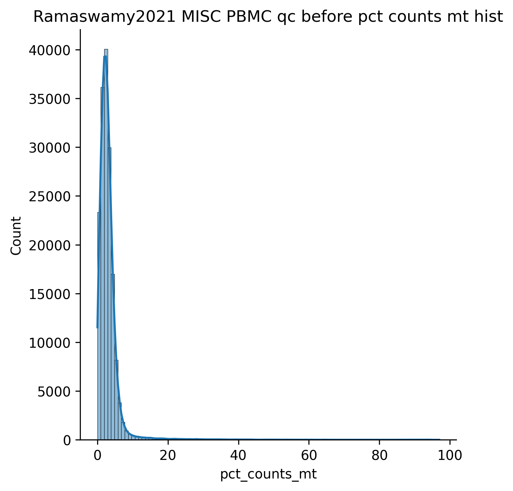 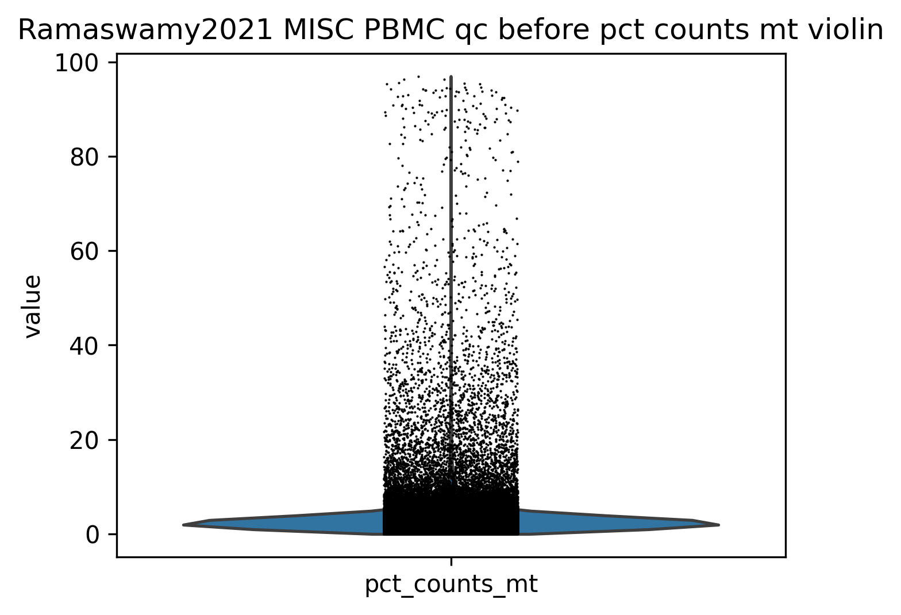 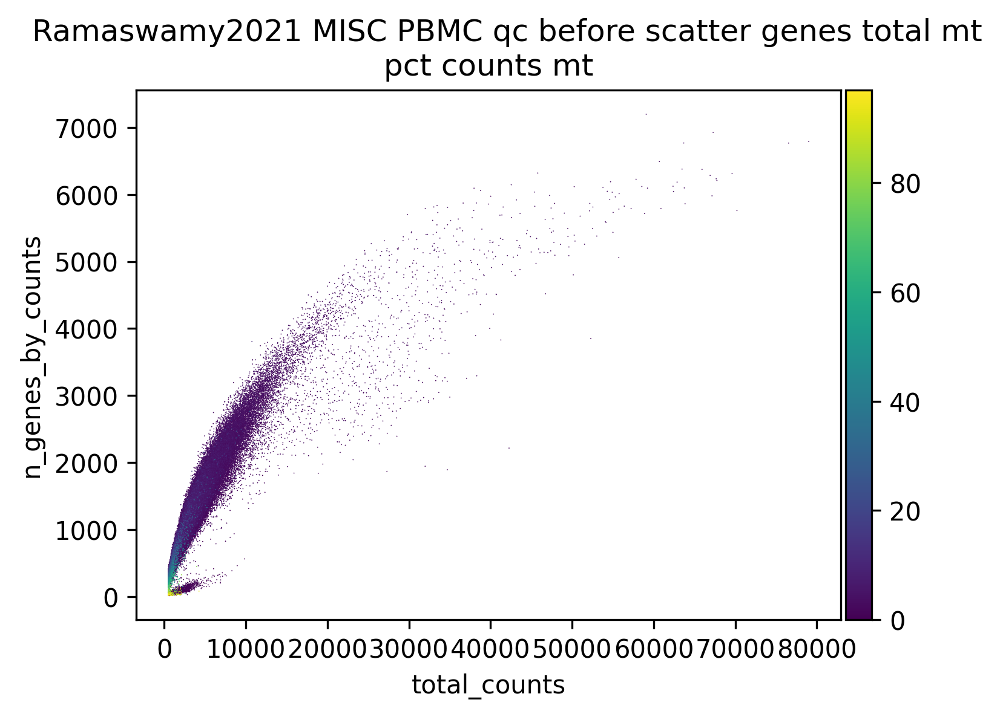


Number of count outliers with MAD > 5: 13155
Number of mitochondrial outliers with MAD > 5 or pct_counts_mt > 8: 5291
Filtered out outliers: 15683 (9.46%)
Filtering out genes expressed in less than 20 cells
Removed 14409 genes (42.96%), 19129 kept
After count QC:
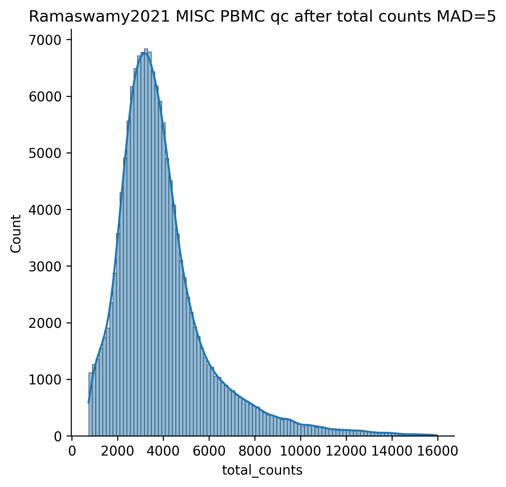 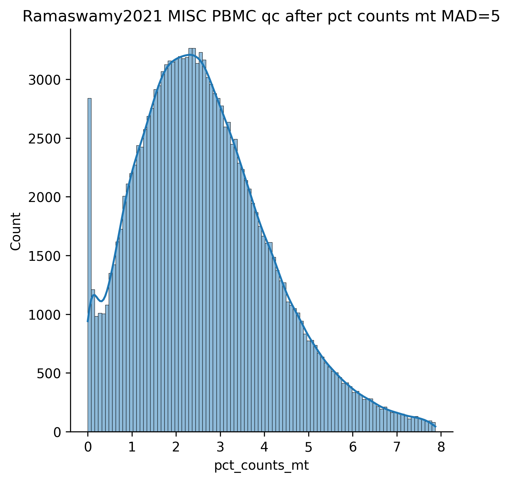 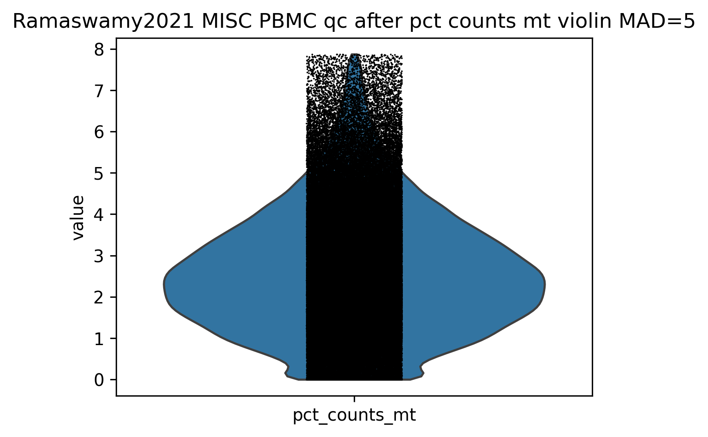 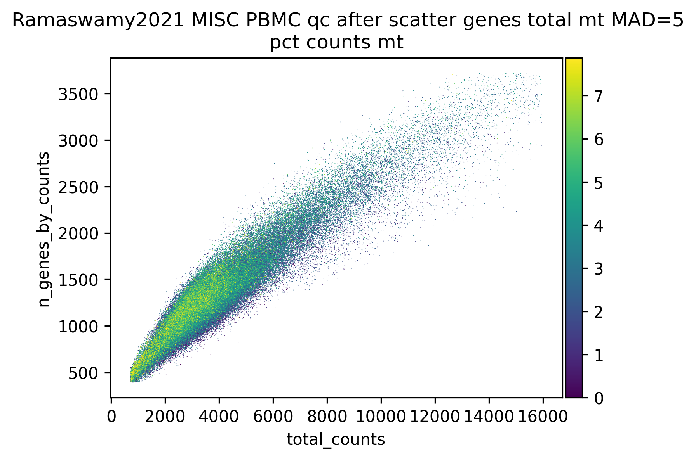


1.1.3. Doublet QC
Running scrublet with expected doublet rate 0.05

There are 5739 predicted doublets, applying filter
After doublet step: (144343, 19129) (removed 3.82% cells)
1.1.4. Gene exclusion
Excluding genes matching the following patterns:
Note: Showing at most 10 rows and 10 columns from data with 11 rows and 2 columns.
| mt_genes | ['MT-'] |
| ribo_genes | ['RPS', 'RPL'] |
| hb_genes | ['^HBA|^HBB'] |
| stress_genes | ['G0S2', '^JUN', '^FOS', 'CDKN1A'] |
| IFN_genes | ['^IRF', '^IFN'] |
| ccl_genes | ['CCL'] |
| MHC_genes | ['^HLA-[A-Z]'] |
| hist_genes | ['HIST'] |
| comp_genes | ['^C1Q'] |
| ig_genes | ['^IGH', '^IGK', '^IGL'] |
Removing 502 genes (2.62%)
Shape after exclusion panel filtering: (144343, 18627)
load_dataset
function: load_dataset parameters: filename: GSE212797.raw_counts_stand.h5ad max_cells: 200000 study: Rahim2023 tissue_type: null cache_file: data/load_dataset_479c2f9c9e42.h5ad
load file 12: GSE212797.raw_counts_stand.h5ad
file_version: 2026-09-09 09:27:44.672885485
Loaded 'GSE212797.raw_counts_stand.h5ad' (backed): 8245 × 13305
Gene names: index → ENSG IDs (1504 without ensembl_id kept via symbol), dropped 0 duplicates → 13305 genes
Pre-computed QC metrics from gene_name column
1.1.5. Loaded: GSE212797.raw_counts_stand.h5ad
Shape: 8245 cells × 13305 genes
layers: ['counts'] | obsm: []
obs columns
Note: Showing at most 10 rows and 10 columns from data with 27 rows and 4 columns.
| index | column | dtype | n_unique | top values |
|---|---|---|---|---|
| 0 | study_id | category | 1 | GSE212797 (8245) |
| 1 | sample_id | category | 6 | GSM6552609 (4120), GSM6552605 (770), GSM6552600 (453) |
| 2 | donor | category | 5 | donor_129 (3687), donor_118 (1471), donor_126 (1218) |
| 3 | batch | category | 8 | batch_6 (4120), batch_3 (1018), batch_1 (839) |
| 4 | tissue_group | category | 2 | TIL (6747), tissue (1498) |
| 5 | tissue | category | 2 | mouth/throat (6747), lymph_node (1498) |
| 6 | disease_group | category | 1 | CANCER (8245) |
| 7 | disease | category | 1 | HNSCC (8245) |
| 8 | chemistry | category | 1 | 10x_5p_v1 (8245) |
| 9 | study | object | 1 | Rahim2023 (8245) |
var columns
Note: Showing at most 10 rows and 10 columns from data with 14 rows and 4 columns.
| index | column | dtype | n_unique | sample values |
|---|---|---|---|---|
| 0 | gene_name | object | 13305 | AC240274.1 (1), LINC01128 (1), LINC00115 (1) |
| 1 | ensembl_id | category | 11801 | ENSG00000293495 (1), ENSG00000000003 (1), ENSG00000000419 (1) |
| 2 | ensembl_source | category | 5 | direct_hgnc_exact (11797), ambiguous_direct_hgnc_exact (955), unmapped (549) |
| 3 | ensembl_gene_tag | category | 1 | single_gene (11801) |
| 4 | mt | bool | min=0 mean=0.000977 max=1 | |
| 5 | ribo | bool | min=0 mean=0.00729 max=1 | |
| 6 | hb | bool | min=0 mean=0.000451 max=1 | |
| 7 | n_cells_by_counts | int64 | min=3 mean=511 max=8.24e+03 | |
| 8 | mean_counts | float64 | min=0.000364 mean=0.146 max=37.1 | |
| 9 | log1p_mean_counts | float64 | min=0.000364 mean=0.0823 max=3.64 |
remap_columns
function: remap_columns parameters: column_map: {"Age": "age", "Chemistry": "chemistry", "Disease": "disease", "Donor": "donor", "Patient": "donor", "PatientID": "donor", "Sample": "sample_id", "SampleID": "sample_id", "Sex": "sex", "Tissue": "tissue_type", "assay": "chemistry", "cohort": "study", "condition": "disease", "condition_detail": "disease_detail", "dataset": "study", "detailed_context": "disease_detail", "diagnosis": "disease", "diagnosis_detail": "disease_detail", "disease_status": "disease", "disease_subtype": "disease_detail", "donor_id": "donor", "gender": "sex", "library_type": "chemistry", "organ": "tissue_type", "patient": "donor", "patient_id": "donor", "protocol": "chemistry", "sample": "sample_id", "sampleID": "sample_id", "sample_type": "tissue_type", "source_tissue": "tissue_type", "subtype": "disease_detail", "tissue": "tissue_type"} defaults: {"assay_chemistry": "5'", "cell_sort": "CD8+ (author subset)", "cellranger": "3.0.2", "chemistry": "10x_5v1", "data_source": "GEO GSE212797", "disease": "HNSCC", "disease_detail": "Head and neck squamous cell carcinoma"} cache_file: data/remap_columns_2e30bc490ab2.h5ad
Remapped columns: tissue → tissue_type
Default applied: disease_detail = 'Head and neck squamous cell carcinoma'
Default applied: assay_chemistry = '5''
Default applied: data_source = 'GEO GSE212797'
Default applied: cell_sort = 'CD8+ (author subset)'
Default applied: cellranger = '3.0.2'
qc_full
function: qc_full parameters: excluded_gene_patterns: null expected_doublet_rate: 0.05 frac_treshold: 0.05 low_count_treshold: 1000 mad_outlier_var: 5 min_cells_per_gene: 20 mitochondria_cutoff_percentage: 8 name: Rahim2023_HNSCC_LN cache_file: data/qc_full_8cb56f456487.h5ad
1.2. Quality Control
1.2.1. Ambient RNA QC
Checking if a cleanup is necessary, flagging cells with less than 1000 counts as potential ambient RNA contamination
Potential RNA contamination detected (21.6% of cells < 1000 counts)
IGNORE_AMBIENT_RNA set — skipping cleanup and continuing (count QC still removes low-count cells)
1.2.2. Count QC
| index | count | mean | std | min | 25% | 50% | 75% | max |
|---|---|---|---|---|---|---|---|---|
| total_counts | 8245 | 1944.09 | 1418.52 | 452 | 1060 | 1544 | 2294 | 15342 |
| n_genes_by_counts | 8245 | 825.39 | 388.38 | 244 | 548 | 760 | 985 | 2955 |
| pct_counts_mt | 8245 | 1.62 | 1.99 | 0 | 0.53 | 0.95 | 1.99 | 30.41 |
| pct_counts_ribo | 8245 | 26.44 | 10.89 | 1.35 | 20.53 | 25.19 | 32.28 | 65.43 |
| pct_counts_hb | 8245 | 0.01 | 0.02 | 0 | 0 | 0 | 0 | 0.58 |
| pct_counts_in_top_20_genes | 8245 | 23.30 | 5.24 | 9.78 | 19.50 | 21.76 | 26.33 | 58.06 |
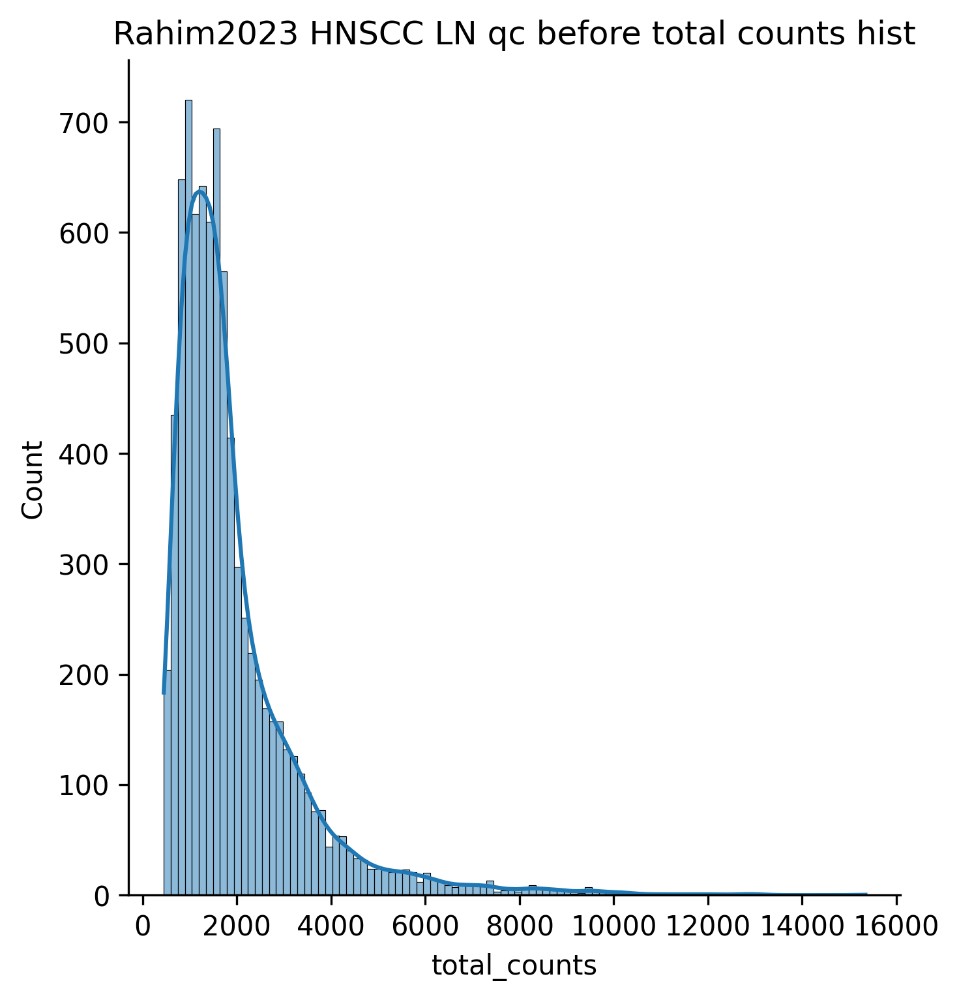 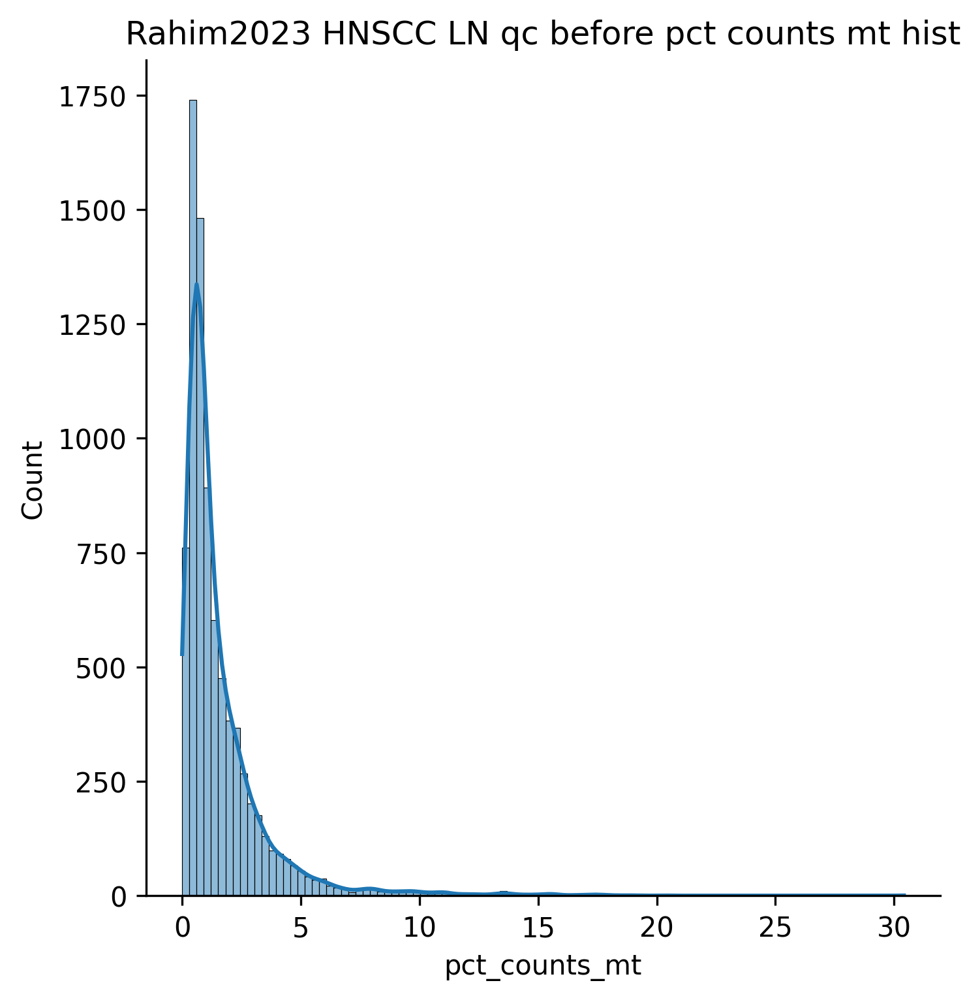 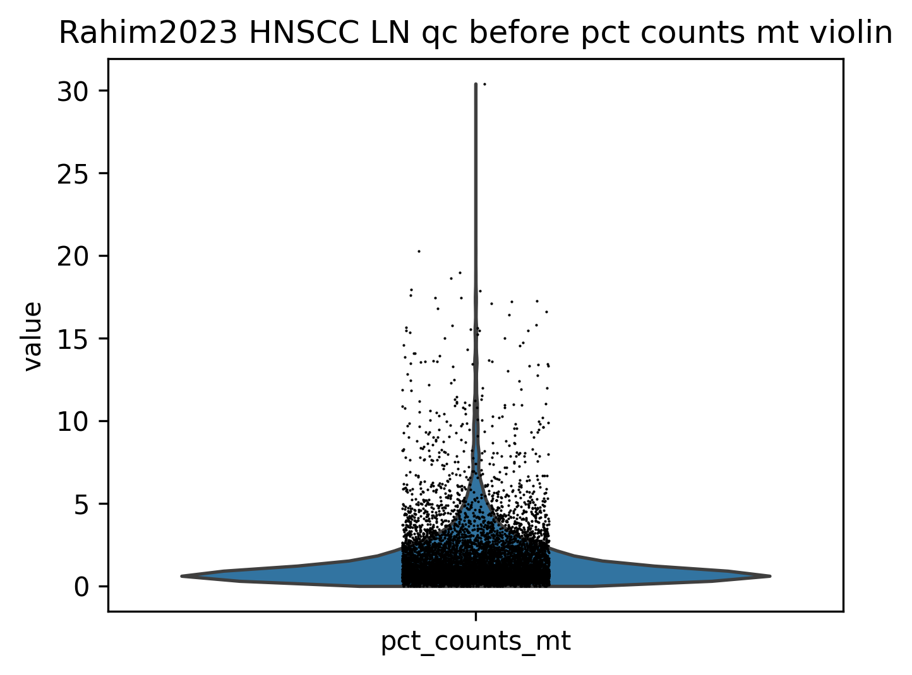 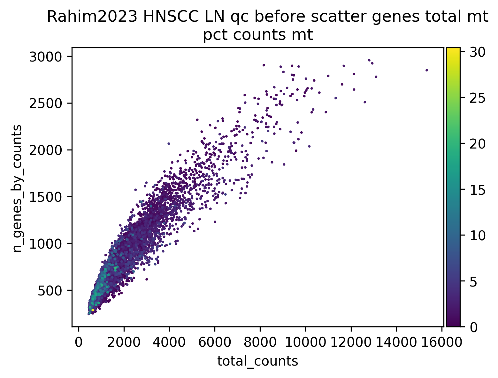


Number of count outliers with MAD > 5: 170
Number of mitochondrial outliers with MAD > 5 or pct_counts_mt > 8: 764
Filtered out outliers: 918 (11.13%)
Filtering out genes expressed in less than 20 cells
Removed 2653 genes (19.94%), 10652 kept
After count QC:
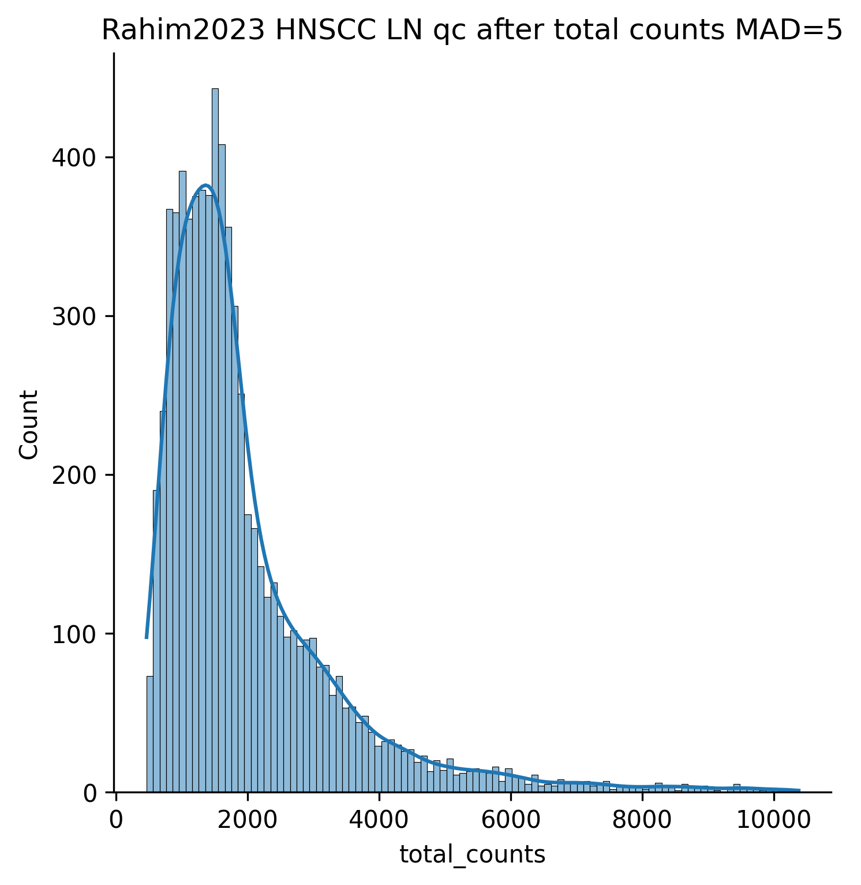 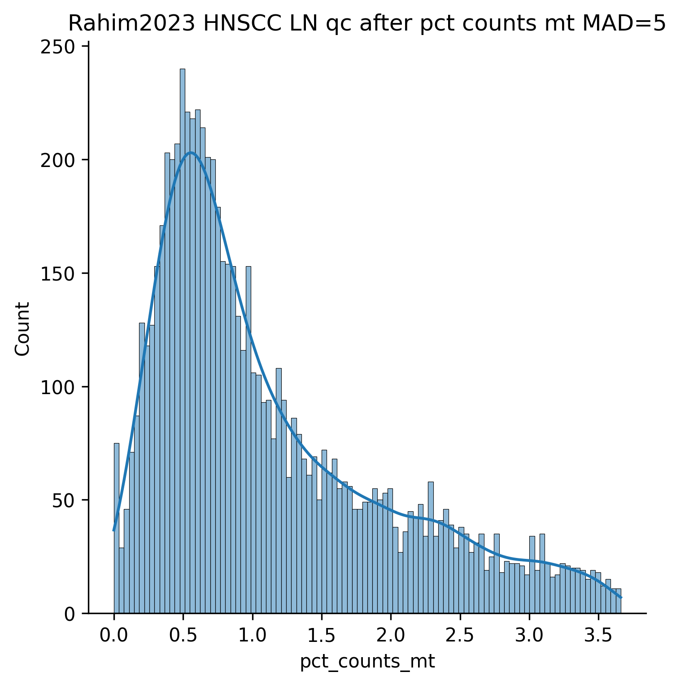 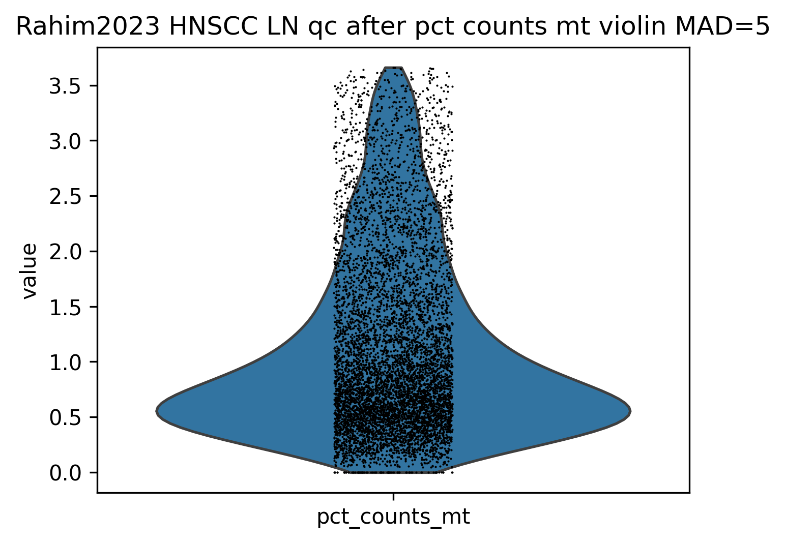 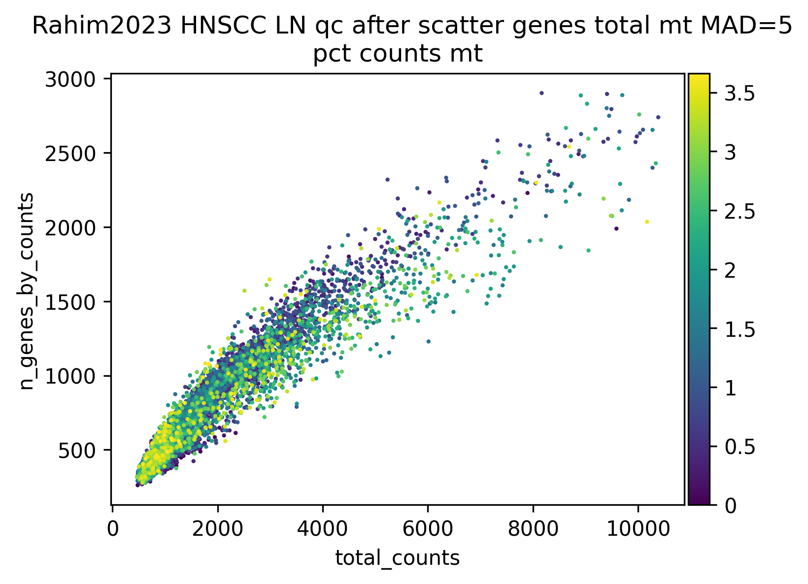


1.2.3. Doublet QC
Running scrublet with expected doublet rate 0.05

No doublets predicted
After doublet step: (7327, 10652) (removed 0.00% cells)
1.2.4. Gene exclusion
Excluding genes matching the following patterns:
Note: Showing at most 10 rows and 10 columns from data with 11 rows and 2 columns.
| mt_genes | ['MT-'] |
| ribo_genes | ['RPS', 'RPL'] |
| hb_genes | ['^HBA|^HBB'] |
| stress_genes | ['G0S2', '^JUN', '^FOS', 'CDKN1A'] |
| IFN_genes | ['^IRF', '^IFN'] |
| ccl_genes | ['CCL'] |
| MHC_genes | ['^HLA-[A-Z]'] |
| hist_genes | ['HIST'] |
| comp_genes | ['^C1Q'] |
| ig_genes | ['^IGH', '^IGK', '^IGL'] |
Removing 335 genes (3.14%)
Shape after exclusion panel filtering: (7327, 10317)
load_dataset
function: load_dataset parameters: filename: GSE145370.raw_counts_stand.h5ad max_cells: 200000 study: Zheng2020 tissue_type: null cache_file: data/load_dataset_cdd59af64e4a.h5ad
load file 13: GSE145370.raw_counts_stand.h5ad
file_version: 2026-09-09 09:27:06.096428821
Loaded 'GSE145370.raw_counts_stand.h5ad' (backed): 115157 × 33538
Gene names: index → ENSG IDs (13057 without ensembl_id kept via symbol), dropped 0 duplicates → 33538 genes
Pre-computed QC metrics from gene_name column
1.2.5. Loaded: GSE145370.raw_counts_stand.h5ad
Shape: 115157 cells × 33538 genes
layers: ['counts'] | obsm: []
obs columns
Note: Showing at most 10 rows and 10 columns from data with 29 rows and 4 columns.
| index | column | dtype | n_unique | top values |
|---|---|---|---|---|
| 0 | study_id | category | 1 | GSE145370 (115157) |
| 1 | sample_id | category | 14 | GSM4317413 (15820), GSM4317409 (12342), GSM4317411 (11018) |
| 2 | original_barcode | category | 107087 | TCGTAGACAGATGGCA-1 (5), GTAACGTAGCTTATCG-1 (5), GAATAAGAGCCCAACC-1 (4) |
| 3 | donor | category | 7 | S135 (21698), S150 (19322), S133 (18476) |
| 4 | tissue_group | category | 2 | TIL (70556), tissue (44601) |
| 5 | tissue | category | 1 | esophagus (115157) |
| 6 | tissue_detail | category | 2 | malignant tissue (70556), adjacent normal tissue (44601) |
| 7 | disease_group | category | 1 | CANCER (115157) |
| 8 | disease | category | 1 | ESCC (115157) |
| 9 | disease_detail | category | 4 | pathological stage IIIB (53379), pathological stage IIA (36800), pathological stage IIIA (13395) |
var columns
Note: Showing at most 10 rows and 10 columns from data with 14 rows and 4 columns.
| index | column | dtype | n_unique | sample values |
|---|---|---|---|---|
| 0 | gene_name | object | 33538 | FAM231C (1), MIR1302-2HG (1), MAFIP (1) |
| 1 | ensembl_id | category | 20481 | ENSG00000310560 (1), ENSG00000288867 (1), ENSG00000288722 (1) |
| 2 | ensembl_source | category | 5 | direct_hgnc_exact (20471), unmapped (11191), ambiguous_direct_hgnc_exact (1866) |
| 3 | ensembl_gene_tag | category | 2 | single_gene (20480), multiple_genes (1) |
| 4 | mt | bool | min=0 mean=0.000388 max=1 | |
| 5 | ribo | bool | min=0 mean=0.0031 max=1 | |
| 6 | hb | bool | min=0 mean=0.000358 max=1 | |
| 7 | n_cells_by_counts | int64 | min=0 mean=4.25e+03 max=1.13e+05 | |
| 8 | mean_counts | float64 | min=0 mean=0.111 max=45.1 | |
| 9 | log1p_mean_counts | float64 | min=0 mean=0.0579 max=3.83 |
remap_columns
function: remap_columns parameters: column_map: {"Age": "age", "Chemistry": "chemistry", "Disease": "disease", "Donor": "donor", "Patient": "donor", "PatientID": "donor", "Sample": "sample_id", "SampleID": "sample_id", "Sex": "sex", "Tissue": "tissue_type", "assay": "chemistry", "cohort": "study", "condition": "disease", "condition_detail": "disease_detail", "dataset": "study", "detailed_context": "disease_detail", "diagnosis": "disease", "diagnosis_detail": "disease_detail", "disease_status": "disease", "disease_subtype": "disease_detail", "donor_id": "donor", "gender": "sex", "library_type": "chemistry", "organ": "tissue_type", "patient": "donor", "patient_id": "donor", "protocol": "chemistry", "sample": "sample_id", "sampleID": "sample_id", "sample_type": "tissue_type", "source_tissue": "tissue_type", "subtype": "disease_detail", "tissue": "tissue_type"} defaults: {"assay_chemistry": "5'", "cellranger": "3.1.0", "chemistry": "10x_5v1", "data_source": "GEO GSE145370", "disease": "ESCC", "disease_detail": "Esophageal squamous cell carcinoma", "tissue_detail": "esophagus"} cache_file: data/remap_columns_e5760a594c1b.h5ad
Remapped columns: tissue → tissue_type
Default applied: assay_chemistry = '5''
Default applied: data_source = 'GEO GSE145370'
Default applied: cellranger = '3.1.0'
qc_full
function: qc_full parameters: excluded_gene_patterns: null expected_doublet_rate: 0.05 frac_treshold: 0.05 low_count_treshold: 1000 mad_outlier_var: 5 min_cells_per_gene: 20 mitochondria_cutoff_percentage: 8 name: Zheng2020_ESCC_esophagus cache_file: data/qc_full_b203fbdeeb5f.h5ad
1.3. Quality Control
1.3.1. Ambient RNA QC
Checking if a cleanup is necessary, flagging cells with less than 1000 counts as potential ambient RNA contamination
Potential RNA contamination detected (12.0% of cells < 1000 counts)
IGNORE_AMBIENT_RNA set — skipping cleanup and continuing (count QC still removes low-count cells)
1.3.2. Count QC
| index | count | mean | std | min | 25% | 50% | 75% | max |
|---|---|---|---|---|---|---|---|---|
| total_counts | 115157 | 3721.67 | 4167.85 | 500 | 1515 | 2542 | 4107 | 83031 |
| n_genes_by_counts | 115157 | 1238.78 | 786.06 | 14 | 743 | 1049 | 1494 | 8773 |
| pct_counts_mt | 115157 | 5.01 | 6.04 | 0 | 2.50 | 4.15 | 5.97 | 99.85 |
| pct_counts_ribo | 115157 | 21.17 | 10.57 | 0 | 13.89 | 19.95 | 27.32 | 71.86 |
| pct_counts_hb | 115157 | 0.02 | 1.17 | 0 | 0 | 0 | 0 | 97.49 |
| pct_counts_in_top_20_genes | 115157 | 24.92 | 12.50 | 9.49 | 19.08 | 21.65 | 25.06 | 100 |
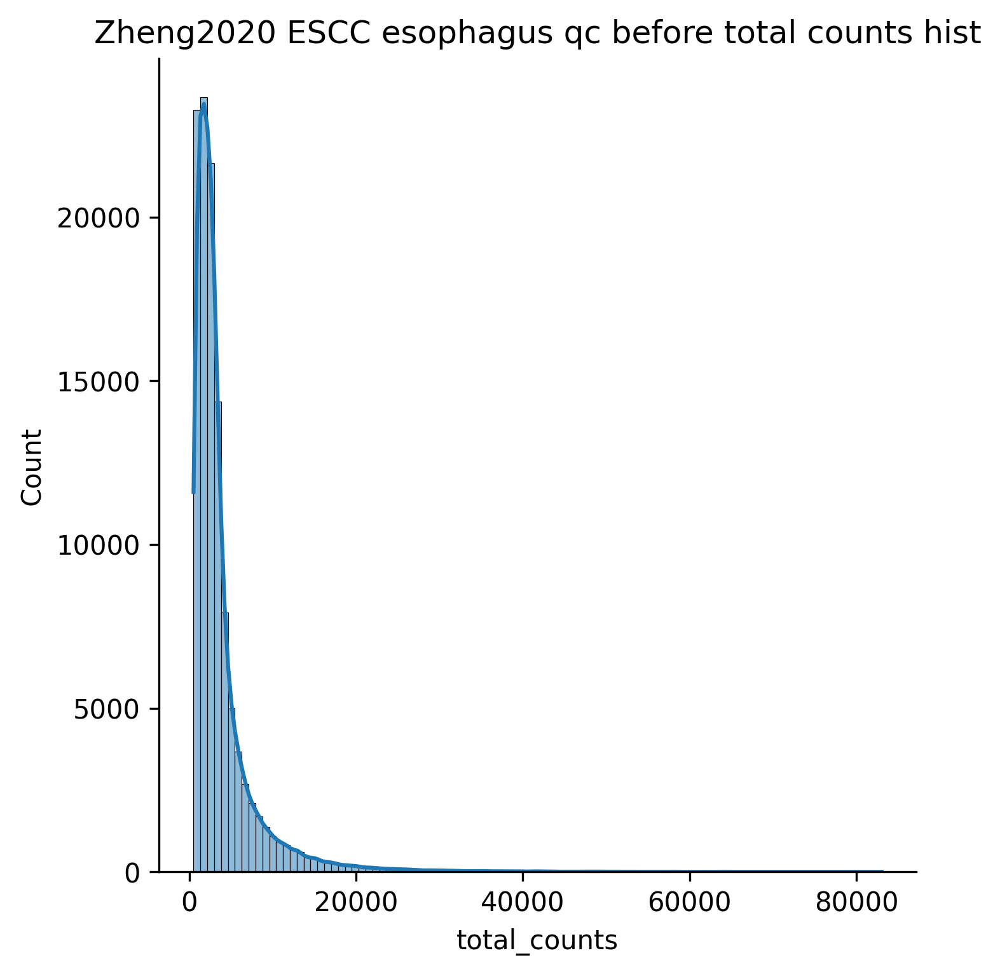 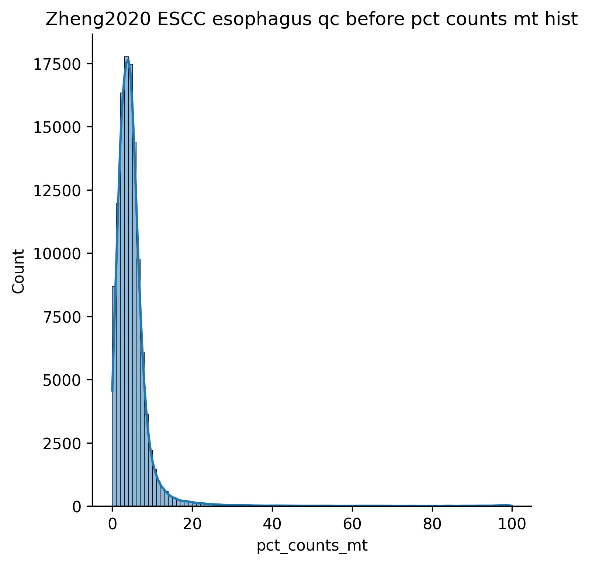 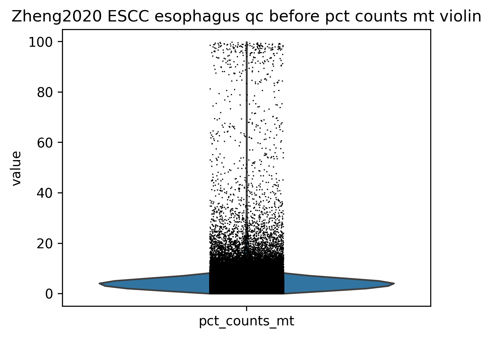 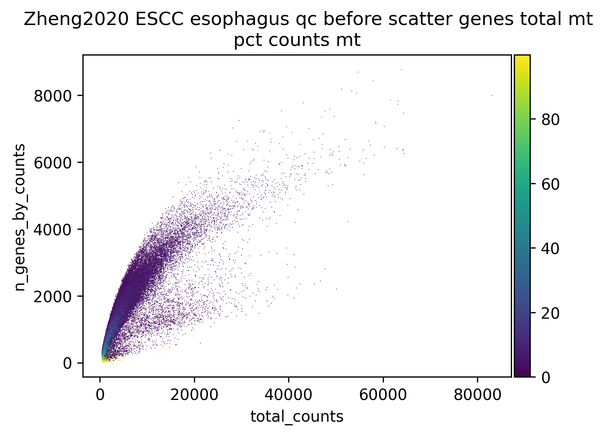


Number of count outliers with MAD > 5: 10194
Number of mitochondrial outliers with MAD > 5 or pct_counts_mt > 8: 12600
Filtered out outliers: 20547 (17.84%)
Filtering out genes expressed in less than 20 cells
Removed 13524 genes (40.32%), 20014 kept
After count QC:
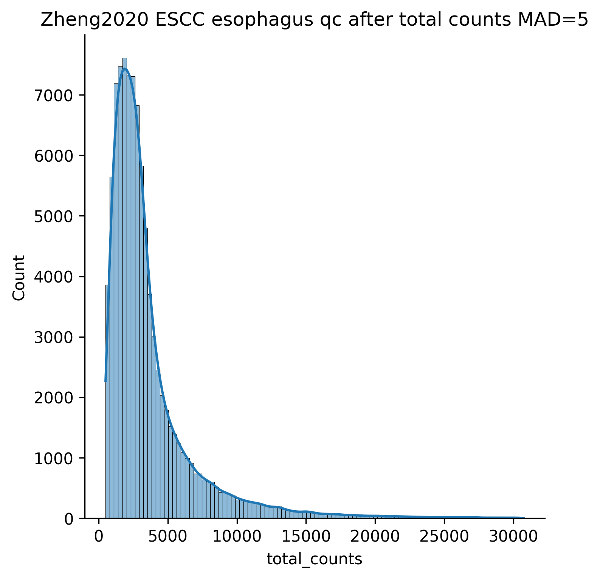 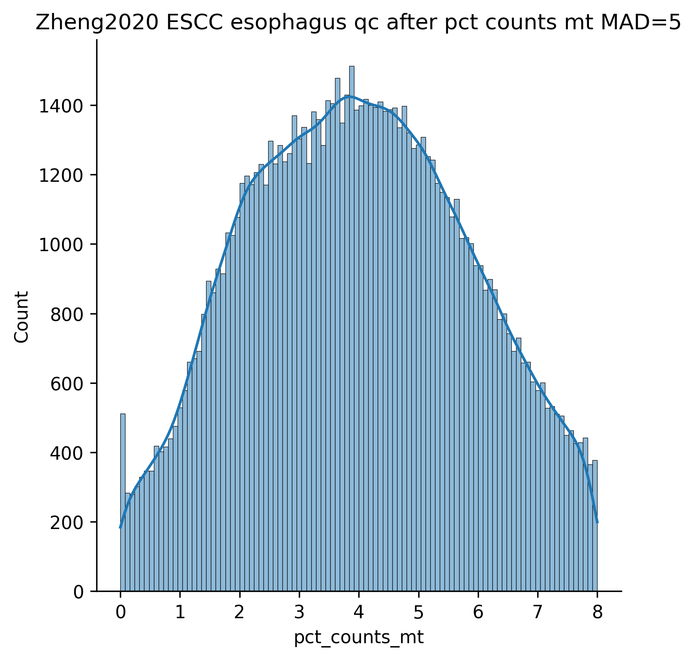 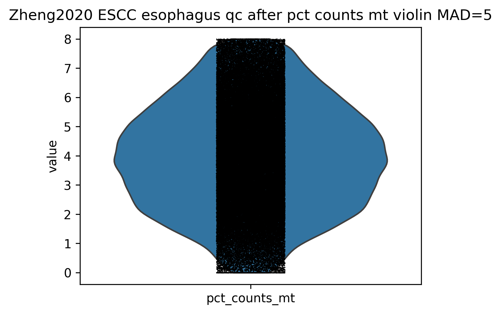 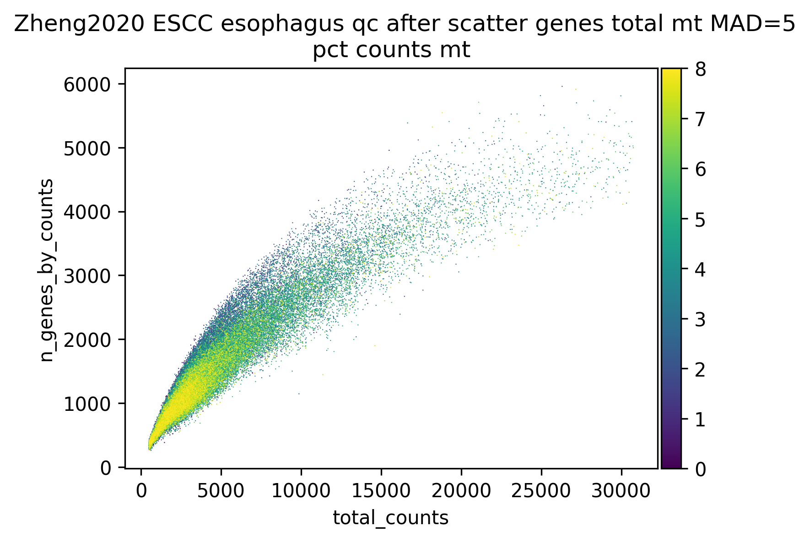


1.3.3. Doublet QC
Running scrublet with expected doublet rate 0.05

No doublets predicted
After doublet step: (94610, 20014) (removed 0.00% cells)
1.3.4. Gene exclusion
Excluding genes matching the following patterns:
Note: Showing at most 10 rows and 10 columns from data with 11 rows and 2 columns.
| mt_genes | ['MT-'] |
| ribo_genes | ['RPS', 'RPL'] |
| hb_genes | ['^HBA|^HBB'] |
| stress_genes | ['G0S2', '^JUN', '^FOS', 'CDKN1A'] |
| IFN_genes | ['^IRF', '^IFN'] |
| ccl_genes | ['CCL'] |
| MHC_genes | ['^HLA-[A-Z]'] |
| hist_genes | ['HIST'] |
| comp_genes | ['^C1Q'] |
| ig_genes | ['^IGH', '^IGK', '^IGL'] |
Removing 503 genes (2.51%)
Shape after exclusion panel filtering: (94610, 19511)
load_dataset
function: load_dataset parameters: filename: GSE156728_BC.raw_counts_stand.h5ad max_cells: 200000 study: Zheng2021 tissue_type: null cache_file: data/load_dataset_754e4f31a6f5.h5ad
load file 14: GSE156728_BC.raw_counts_stand.h5ad
file_version: 2026-09-21 14:19:14.784861271
Loaded 'GSE156728_BC.raw_counts_stand.h5ad' (backed): 7354 × 24148
Gene names: index → ENSG IDs (7981 without ensembl_id kept via symbol), dropped 5 duplicates → 24143 genes
Pre-computed QC metrics from gene_name column
1.3.5. Loaded: GSE156728_BC.raw_counts_stand.h5ad
Shape: 7354 cells × 24143 genes
layers: ['counts'] | obsm: []
obs columns
Note: Showing at most 10 rows and 10 columns from data with 31 rows and 4 columns.
| index | column | dtype | n_unique | top values |
|---|---|---|---|---|
| 0 | study_id | category | 1 | GSE156728 (7354) |
| 1 | sample_id | category | 2 | GSM4743191 (5173), GSM4743190 (2181) |
| 2 | original_barcode | object | 7354 | TTTGTCATCACCACCT.4 (1), AAACGGGAGCCACCTG.1 (1), AAACGGGCAAAGAATC.1 (1) |
| 3 | donor | category | 2 | BC.P20190123 (5173), BC.P20190403 (2181) |
| 4 | tissue_group | category | 2 | TIL (4148), tissue (3206) |
| 5 | disease_group | category | 1 | CANCER (7354) |
| 6 | tissue | category | 1 | breast (7354) |
| 7 | disease | category | 1 | BC (7354) |
| 8 | chemistry | category | 1 | 10x_5p_v3 (7354) |
| 9 | sc_tech | category | 1 | 10X (7354) |
var columns
Note: Showing at most 10 rows and 10 columns from data with 14 rows and 4 columns.
| index | column | dtype | n_unique | sample values |
|---|---|---|---|---|
| 0 | gene_name | object | 24143 | AC240274.1 (1), RP11-34P13.3 (1), RP11-34P13.7 (1) |
| 1 | ensembl_id | category | 16167 | ENSG00000293495 (1), ENSG00000000003 (1), ENSG00000000419 (1) |
| 2 | ensembl_source | category | 5 | direct_hgnc_exact (16153), unmapped (6637), ambiguous_direct_hgnc_exact (1339) |
| 3 | ensembl_gene_tag | category | 2 | single_gene (16166), multiple_genes (1) |
| 4 | mt | bool | min=0 mean=0.000538 max=1 | |
| 5 | ribo | bool | min=0 mean=0.00422 max=1 | |
| 6 | hb | bool | min=0 mean=0.000414 max=1 | |
| 7 | n_cells_by_counts | int64 | min=0 mean=530 max=7.35e+03 | |
| 8 | mean_counts | float64 | min=0 mean=0.21 max=131 | |
| 9 | log1p_mean_counts | float64 | min=0 mean=0.0952 max=4.88 |
remap_columns
function: remap_columns parameters: column_map: {"Age": "age", "Chemistry": "chemistry", "Disease": "disease", "Donor": "donor", "Patient": "donor", "PatientID": "donor", "Sample": "sample_id", "SampleID": "sample_id", "Sex": "sex", "Tissue": "tissue_type", "assay": "chemistry", "cohort": "study", "condition": "disease", "condition_detail": "disease_detail", "dataset": "study", "detailed_context": "disease_detail", "diagnosis": "disease", "diagnosis_detail": "disease_detail", "disease_status": "disease", "disease_subtype": "disease_detail", "donor_id": "donor", "gender": "sex", "library_type": "chemistry", "organ": "tissue_type", "patient": "donor", "patient_id": "donor", "protocol": "chemistry", "sample": "sample_id", "sampleID": "sample_id", "sample_type": "tissue_type", "source_tissue": "tissue_type", "subtype": "disease_detail", "tissue": "tissue_type"} defaults: {"assay_chemistry": "5'", "cellranger": "3", "chemistry": "10x_5v3", "data_source": "GEO GSE156728", "disease": "BC", "disease_detail": "Breast cancer", "tissue_detail": "breast"} cache_file: data/remap_columns_e374c9b81155.h5ad
Remapped columns: tissue → tissue_type
Default applied: assay_chemistry = '5''
Default applied: data_source = 'GEO GSE156728'
Default applied: cellranger = '3'
qc_full
function: qc_full parameters: excluded_gene_patterns: null expected_doublet_rate: 0.05 frac_treshold: 0.05 low_count_treshold: 1000 mad_outlier_var: 5 min_cells_per_gene: 20 mitochondria_cutoff_percentage: 8 name: Zheng2021_BC cache_file: data/qc_full_0f4ab4b80195.h5ad
1.4. Quality Control
1.4.1. Ambient RNA QC
Checking if a cleanup is necessary, flagging cells with less than 1000 counts as potential ambient RNA contamination
No significant RNA contamination detected, skipping cleanup
1.4.2. Count QC
| index | count | mean | std | min | 25% | 50% | 75% | max |
|---|---|---|---|---|---|---|---|---|
| total_counts | 7354 | 5078.14 | 1966.11 | 637 | 3888.75 | 4762.50 | 5899.75 | 30382 |
| n_genes_by_counts | 7354 | 1739.46 | 437.13 | 452 | 1466 | 1687 | 1953 | 5145 |
| pct_counts_mt | 7354 | 4.89 | 1.83 | 0 | 3.54 | 4.70 | 6.06 | 10 |
| pct_counts_ribo | 7354 | 23.24 | 6.47 | 1.27 | 18.84 | 22.84 | 27.28 | 50.55 |
| pct_counts_hb | 7354 | 0 | 0.01 | 0 | 0 | 0 | 0 | 0.30 |
| pct_counts_in_top_20_genes | 7354 | 20.35 | 3.14 | 12.33 | 18.46 | 19.86 | 21.52 | 46.22 |
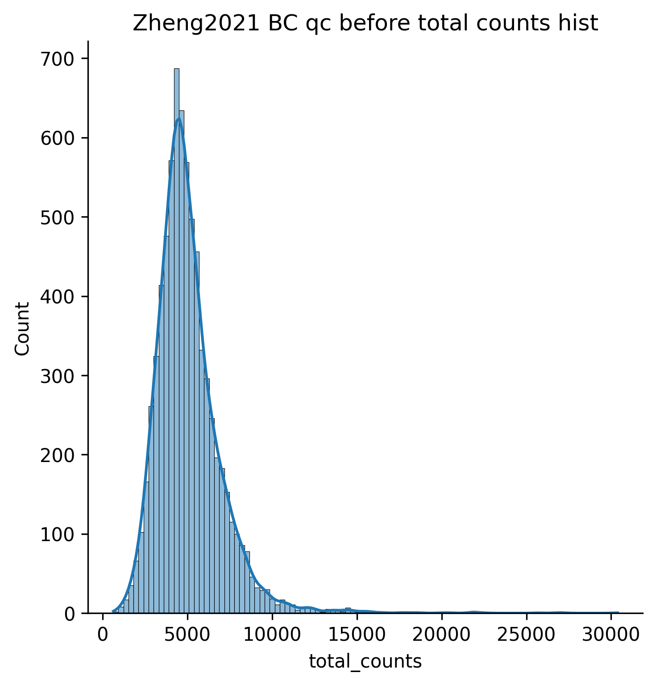 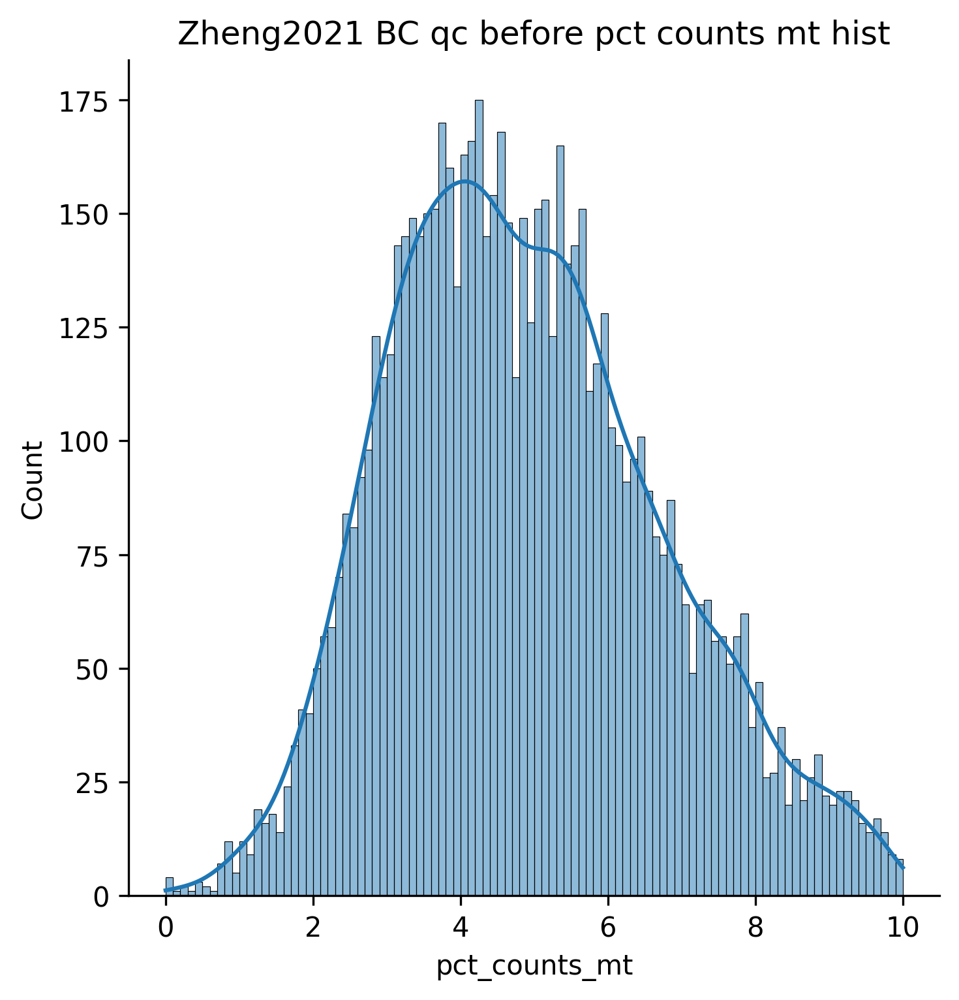 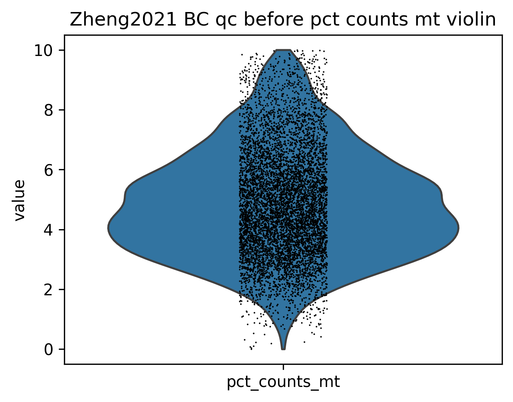 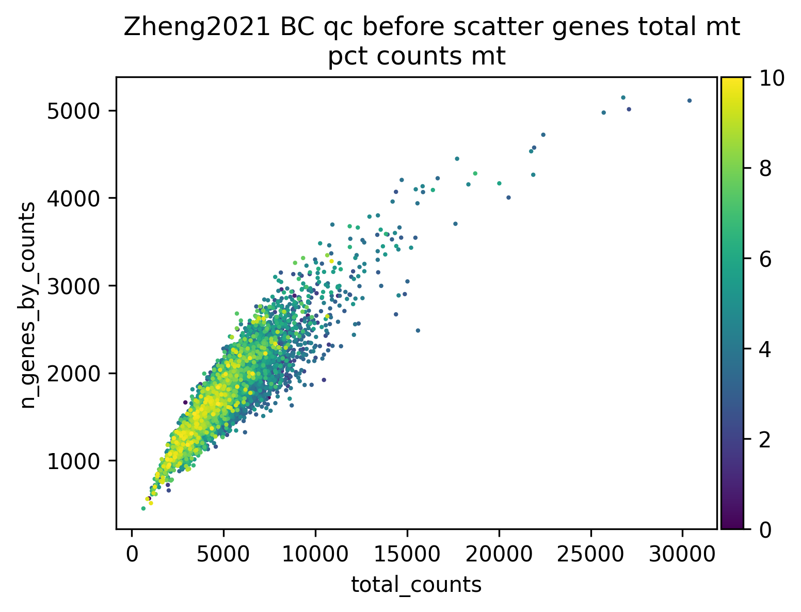


Number of count outliers with MAD > 5: 343
Number of mitochondrial outliers with MAD > 5 or pct_counts_mt > 8: 454
Filtered out outliers: 774 (10.52%)
Filtering out genes expressed in less than 20 cells
Removed 11543 genes (47.81%), 12600 kept
After count QC:
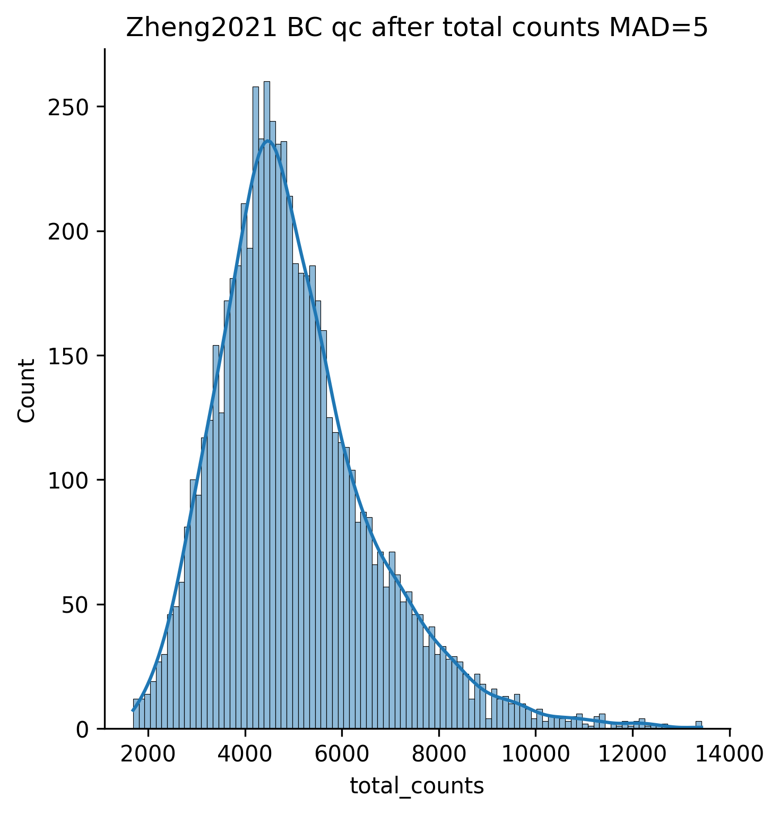 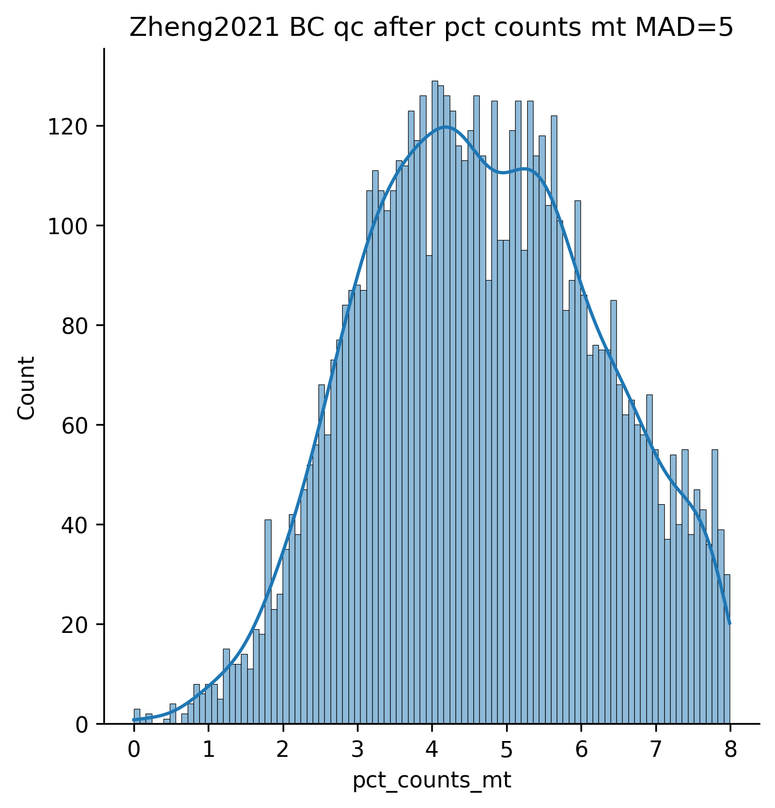 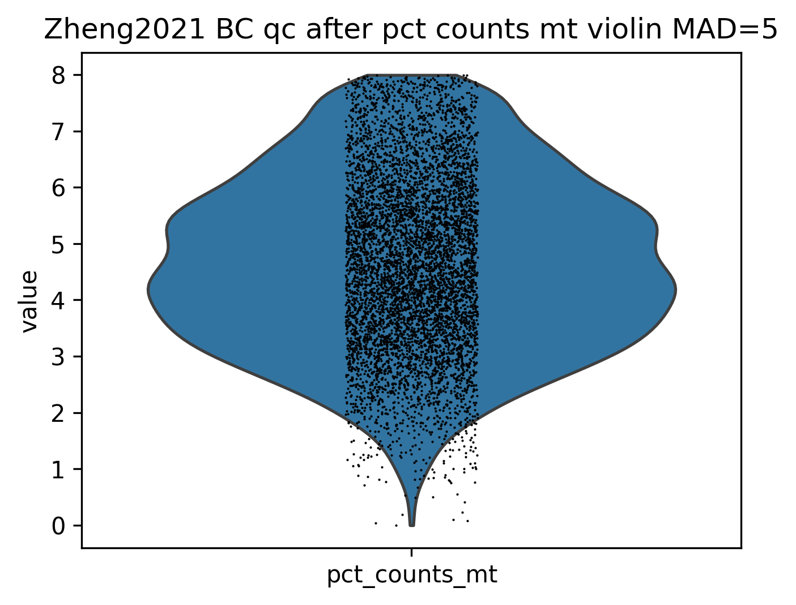 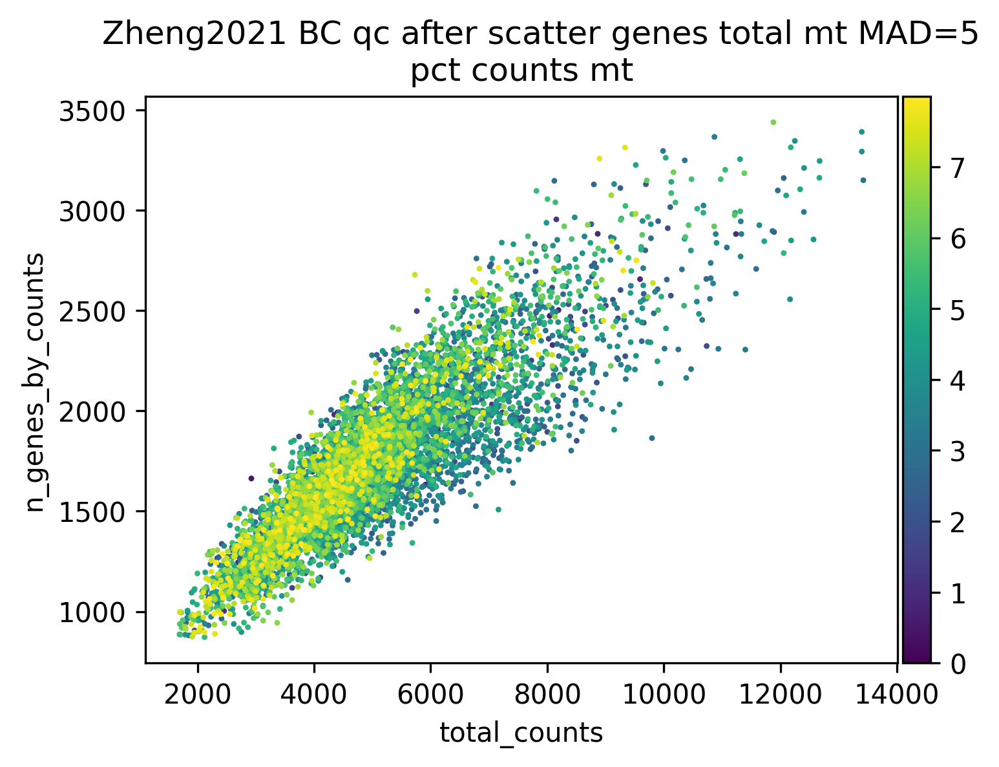


1.4.3. Doublet QC
Running scrublet with expected doublet rate 0.05

There are 4 predicted doublets, applying filter
After doublet step: (6576, 12600) (removed 0.06% cells)
1.4.4. Gene exclusion
Excluding genes matching the following patterns:
Note: Showing at most 10 rows and 10 columns from data with 11 rows and 2 columns.
| mt_genes | ['MT-'] |
| ribo_genes | ['RPS', 'RPL'] |
| hb_genes | ['^HBA|^HBB'] |
| stress_genes | ['G0S2', '^JUN', '^FOS', 'CDKN1A'] |
| IFN_genes | ['^IRF', '^IFN'] |
| ccl_genes | ['CCL'] |
| MHC_genes | ['^HLA-[A-Z]'] |
| hist_genes | ['HIST'] |
| comp_genes | ['^C1Q'] |
| ig_genes | ['^IGH', '^IGK', '^IGL'] |
Removing 339 genes (2.69%)
Shape after exclusion panel filtering: (6576, 12261)
load_dataset
function: load_dataset parameters: filename: GSE156728_ESCA.raw_counts_stand.h5ad max_cells: 200000 study: Zheng2021 tissue_type: null cache_file: data/load_dataset_0d82368d0595.h5ad
load file 15: GSE156728_ESCA.raw_counts_stand.h5ad
file_version: 2026-09-09 09:59:42.533054136
Loaded 'GSE156728_ESCA.raw_counts_stand.h5ad' (backed): 24884 × 24148
Gene names: index → ENSG IDs (7981 without ensembl_id kept via symbol), dropped 5 duplicates → 24143 genes
Pre-computed QC metrics from gene_name column
1.4.5. Loaded: GSE156728_ESCA.raw_counts_stand.h5ad
Shape: 24884 cells × 24143 genes
layers: ['counts'] | obsm: []
obs columns
Note: Showing at most 10 rows and 10 columns from data with 31 rows and 4 columns.
| index | column | dtype | n_unique | top values |
|---|---|---|---|---|
| 0 | study_id | category | 1 | GSE156728 (24884) |
| 1 | sample_id | category | 7 | GSM4743193 (4952), GSM4743196 (4718), GSM4743197 (4558) |
| 2 | original_barcode | object | 24884 | TGGGAAGTCTAACGGT.18 (1), AAACGGGAGCAATATG.5 (1), AAACGGGCAAGCGCTC.5 (1) |
| 3 | donor | category | 7 | ESCA.P20190410 (4952), ESCA.P20181123 (4718), ESCA.P20190613 (4558) |
| 4 | tissue_group | category | 2 | TIL (15116), tissue (9768) |
| 5 | disease_group | category | 1 | CANCER (24884) |
| 6 | tissue | category | 1 | esophagus (24884) |
| 7 | disease | category | 1 | ESCA (24884) |
| 8 | chemistry | category | 1 | 10x_5p_v3 (24884) |
| 9 | sc_tech | category | 1 | 10X (24884) |
var columns
Note: Showing at most 10 rows and 10 columns from data with 14 rows and 4 columns.
| index | column | dtype | n_unique | sample values |
|---|---|---|---|---|
| 0 | gene_name | object | 24143 | AC240274.1 (1), RP11-34P13.3 (1), RP11-34P13.7 (1) |
| 1 | ensembl_id | category | 16167 | ENSG00000293495 (1), ENSG00000000003 (1), ENSG00000000419 (1) |
| 2 | ensembl_source | category | 5 | direct_hgnc_exact (16153), unmapped (6637), ambiguous_direct_hgnc_exact (1339) |
| 3 | ensembl_gene_tag | category | 2 | single_gene (16166), multiple_genes (1) |
| 4 | mt | bool | min=0 mean=0.000538 max=1 | |
| 5 | ribo | bool | min=0 mean=0.00422 max=1 | |
| 6 | hb | bool | min=0 mean=0.000414 max=1 | |
| 7 | n_cells_by_counts | int64 | min=0 mean=1.77e+03 max=2.49e+04 | |
| 8 | mean_counts | float64 | min=0 mean=0.199 max=91 | |
| 9 | log1p_mean_counts | float64 | min=0 mean=0.0983 max=4.52 |
remap_columns
function: remap_columns parameters: column_map: {"Age": "age", "Chemistry": "chemistry", "Disease": "disease", "Donor": "donor", "Patient": "donor", "PatientID": "donor", "Sample": "sample_id", "SampleID": "sample_id", "Sex": "sex", "Tissue": "tissue_type", "assay": "chemistry", "cohort": "study", "condition": "disease", "condition_detail": "disease_detail", "dataset": "study", "detailed_context": "disease_detail", "diagnosis": "disease", "diagnosis_detail": "disease_detail", "disease_status": "disease", "disease_subtype": "disease_detail", "donor_id": "donor", "gender": "sex", "library_type": "chemistry", "organ": "tissue_type", "patient": "donor", "patient_id": "donor", "protocol": "chemistry", "sample": "sample_id", "sampleID": "sample_id", "sample_type": "tissue_type", "source_tissue": "tissue_type", "subtype": "disease_detail", "tissue": "tissue_type"} defaults: {"assay_chemistry": "5'", "cellranger": "3", "chemistry": "10x_5v3", "data_source": "GEO GSE156728", "disease": "ESCA", "disease_detail": "Esophageal cancer", "tissue_detail": "esophagus"} cache_file: data/remap_columns_21327b077975.h5ad
Remapped columns: tissue → tissue_type
Default applied: assay_chemistry = '5''
Default applied: data_source = 'GEO GSE156728'
Default applied: cellranger = '3'
qc_full
function: qc_full parameters: excluded_gene_patterns: null expected_doublet_rate: 0.05 frac_treshold: 0.05 low_count_treshold: 1000 mad_outlier_var: 5 min_cells_per_gene: 20 mitochondria_cutoff_percentage: 8 name: Zheng2021_ESCA cache_file: data/qc_full_880a05195dea.h5ad
1.5. Quality Control
1.5.1. Ambient RNA QC
Checking if a cleanup is necessary, flagging cells with less than 1000 counts as potential ambient RNA contamination
No significant RNA contamination detected, skipping cleanup
1.5.2. Count QC
| index | count | mean | std | min | 25% | 50% | 75% | max |
|---|---|---|---|---|---|---|---|---|
| total_counts | 24884 | 4805.51 | 3614.27 | 511 | 3070 | 3952 | 5274 | 85914 |
| n_genes_by_counts | 24884 | 1719.66 | 705.67 | 229 | 1287 | 1548.50 | 1946 | 7564 |
| pct_counts_mt | 24884 | 3.06 | 1.77 | 0 | 1.74 | 2.73 | 4.01 | 10 |
| pct_counts_ribo | 24884 | 20.67 | 7.74 | 1.20 | 14.97 | 19.73 | 25.50 | 54.30 |
| pct_counts_hb | 24884 | 0.01 | 0.01 | 0 | 0 | 0 | 0 | 0.70 |
| pct_counts_in_top_20_genes | 24884 | 20.17 | 3.23 | 10.09 | 18.02 | 19.78 | 21.86 | 70.84 |
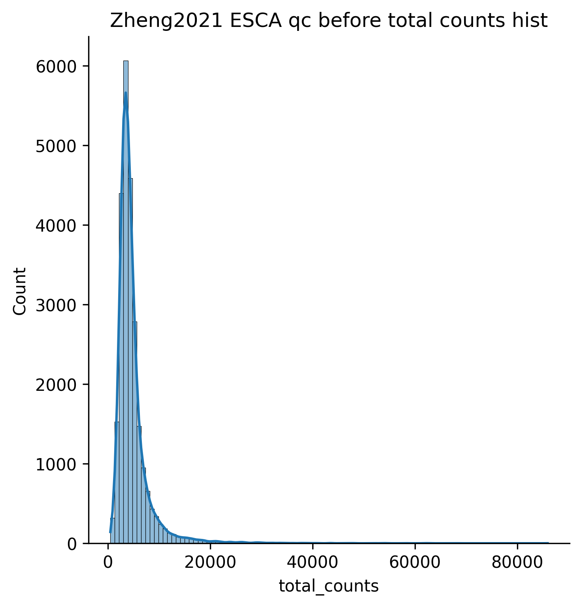 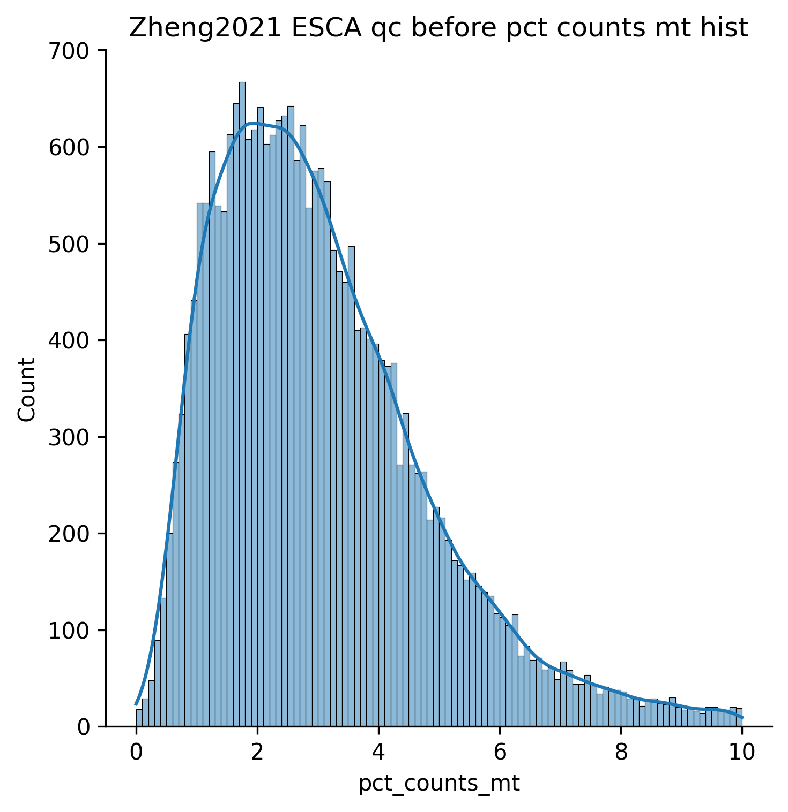 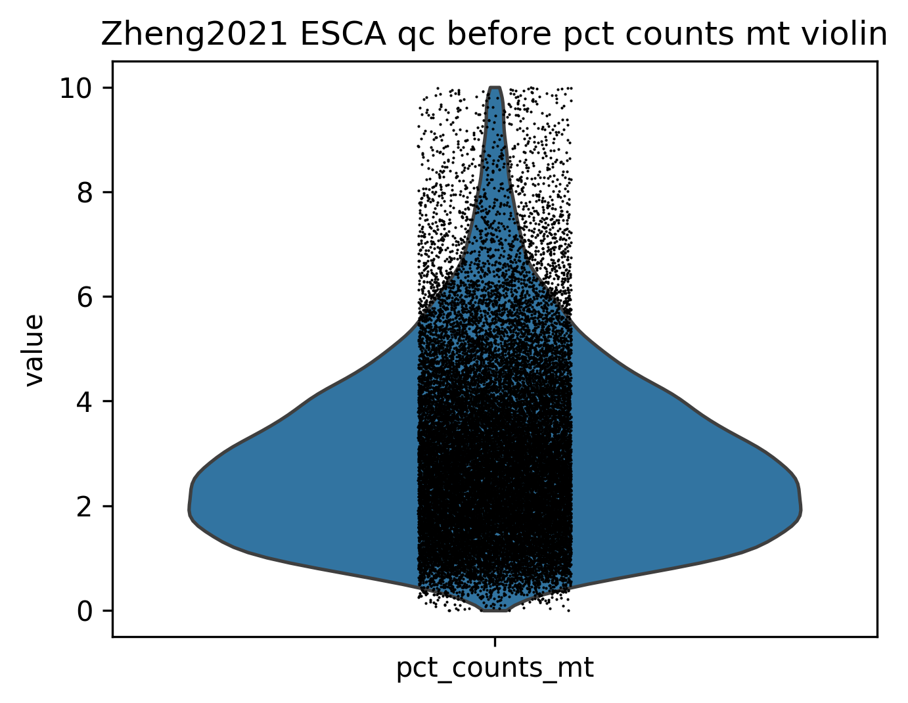 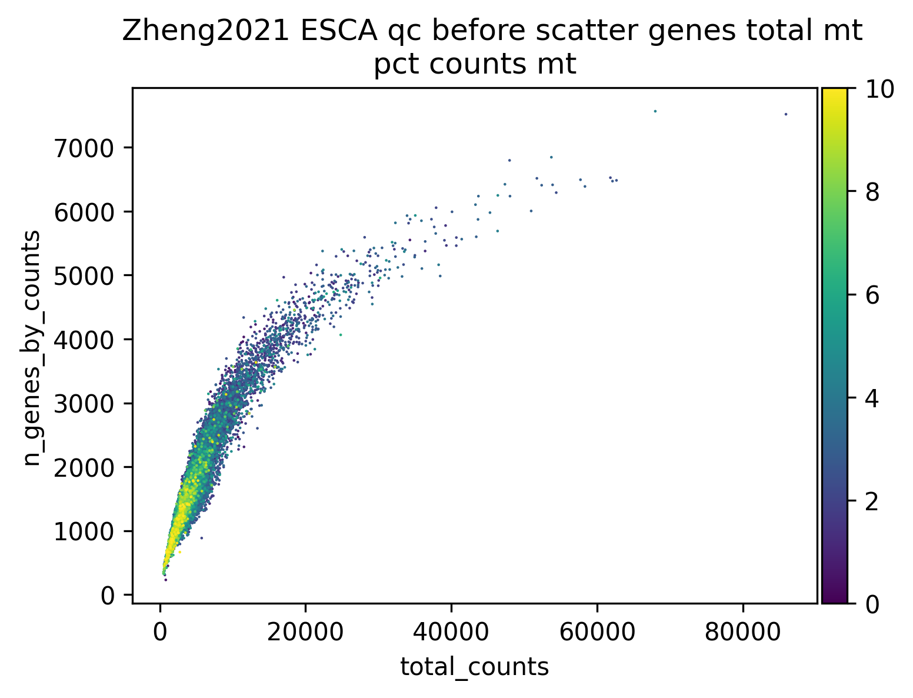


Number of count outliers with MAD > 5: 931
Number of mitochondrial outliers with MAD > 5 or pct_counts_mt > 8: 448
Filtered out outliers: 1336 (5.37%)
Filtering out genes expressed in less than 20 cells
Removed 9108 genes (37.73%), 15035 kept
After count QC:
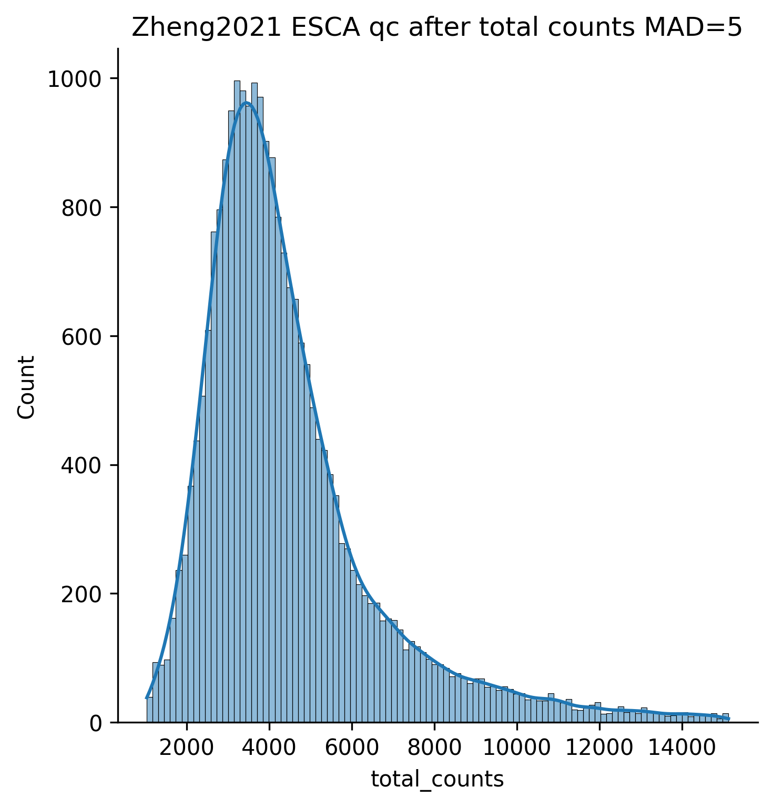 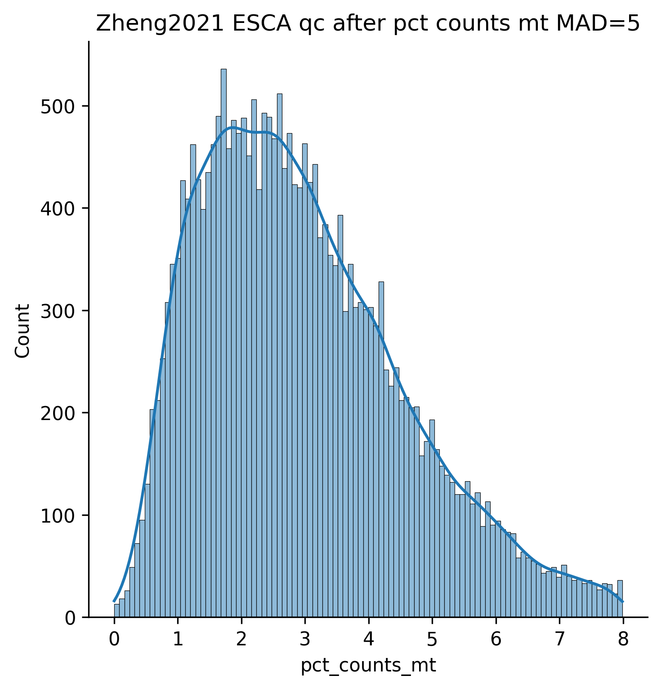 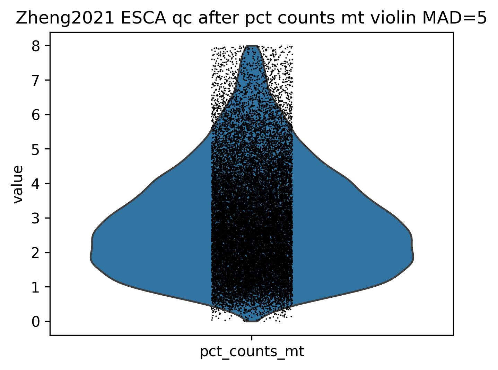 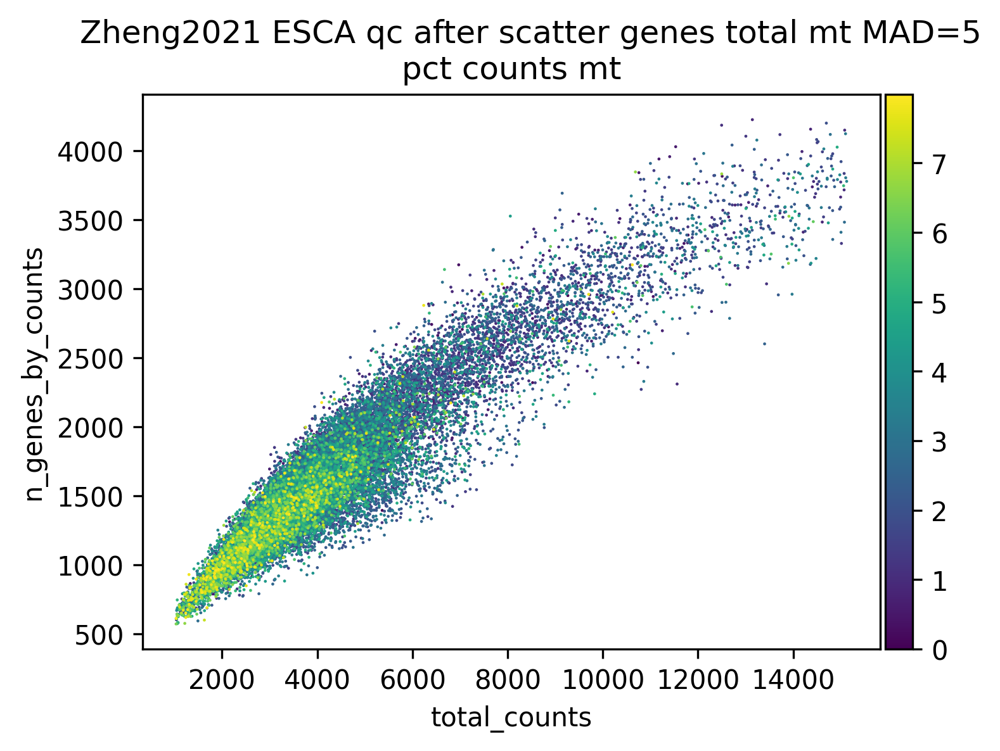


1.5.3. Doublet QC
Running scrublet with expected doublet rate 0.05

No doublets predicted
After doublet step: (23548, 15035) (removed 0.00% cells)
1.5.4. Gene exclusion
Excluding genes matching the following patterns:
Note: Showing at most 10 rows and 10 columns from data with 11 rows and 2 columns.
| mt_genes | ['MT-'] |
| ribo_genes | ['RPS', 'RPL'] |
| hb_genes | ['^HBA|^HBB'] |
| stress_genes | ['G0S2', '^JUN', '^FOS', 'CDKN1A'] |
| IFN_genes | ['^IRF', '^IFN'] |
| ccl_genes | ['CCL'] |
| MHC_genes | ['^HLA-[A-Z]'] |
| hist_genes | ['HIST'] |
| comp_genes | ['^C1Q'] |
| ig_genes | ['^IGH', '^IGK', '^IGL'] |
Removing 437 genes (2.91%)
Shape after exclusion panel filtering: (23548, 14598)
load_dataset
function: load_dataset parameters: filename: GSE156728_OV.raw_counts_stand.h5ad max_cells: 200000 study: Zheng2021 tissue_type: null cache_file: data/load_dataset_1d10ccce8835.h5ad
load file 16: GSE156728_OV.raw_counts_stand.h5ad
file_version: 2026-09-09 09:59:45.069215650
Loaded 'GSE156728_OV.raw_counts_stand.h5ad' (backed): 4523 × 24148
Gene names: index → ENSG IDs (7981 without ensembl_id kept via symbol), dropped 5 duplicates → 24143 genes
Pre-computed QC metrics from gene_name column
1.5.5. Loaded: GSE156728_OV.raw_counts_stand.h5ad
Shape: 4523 cells × 24143 genes
layers: ['counts'] | obsm: []
obs columns
Note: Showing at most 10 rows and 10 columns from data with 30 rows and 4 columns.
| index | column | dtype | n_unique | top values |
|---|---|---|---|---|
| 0 | study_id | category | 1 | GSE156728 (4523) |
| 1 | sample_id | category | 1 | GSM4743199 (4523) |
| 2 | original_barcode | object | 4523 | TTTGTCATCTTGGGTA.34 (1), AAACGGGGTGGGTATG.33 (1), AAACGGGGTGTAATGA.33 (1) |
| 3 | donor | category | 1 | OV.P20190304 (4523) |
| 4 | disease_group | category | 1 | CANCER (4523) |
| 5 | tissue_group | category | 2 | TIL (3613), tissue (910) |
| 6 | disease | category | 1 | OV (4523) |
| 7 | tissue | category | 1 | ovary (4523) |
| 8 | disease_detail | category | 1 | clinical stage II (4523) |
| 9 | tissue_detail | float64 | min=nan mean=nan max=nan |
var columns
Note: Showing at most 10 rows and 10 columns from data with 14 rows and 4 columns.
| index | column | dtype | n_unique | sample values |
|---|---|---|---|---|
| 0 | gene_name | object | 24143 | AC240274.1 (1), RP11-34P13.3 (1), RP11-34P13.7 (1) |
| 1 | ensembl_id | category | 16167 | ENSG00000293495 (1), ENSG00000000003 (1), ENSG00000000419 (1) |
| 2 | ensembl_source | category | 5 | direct_hgnc_exact (16153), unmapped (6637), ambiguous_direct_hgnc_exact (1339) |
| 3 | ensembl_gene_tag | category | 2 | single_gene (16166), multiple_genes (1) |
| 4 | mt | bool | min=0 mean=0.000538 max=1 | |
| 5 | ribo | bool | min=0 mean=0.00422 max=1 | |
| 6 | hb | bool | min=0 mean=0.000414 max=1 | |
| 7 | n_cells_by_counts | int64 | min=0 mean=393 max=4.52e+03 | |
| 8 | mean_counts | float64 | min=0 mean=0.276 max=146 | |
| 9 | log1p_mean_counts | float64 | min=0 mean=0.119 max=4.99 |
remap_columns
function: remap_columns parameters: column_map: {"Age": "age", "Chemistry": "chemistry", "Disease": "disease", "Donor": "donor", "Patient": "donor", "PatientID": "donor", "Sample": "sample_id", "SampleID": "sample_id", "Sex": "sex", "Tissue": "tissue_type", "assay": "chemistry", "cohort": "study", "condition": "disease", "condition_detail": "disease_detail", "dataset": "study", "detailed_context": "disease_detail", "diagnosis": "disease", "diagnosis_detail": "disease_detail", "disease_status": "disease", "disease_subtype": "disease_detail", "donor_id": "donor", "gender": "sex", "library_type": "chemistry", "organ": "tissue_type", "patient": "donor", "patient_id": "donor", "protocol": "chemistry", "sample": "sample_id", "sampleID": "sample_id", "sample_type": "tissue_type", "source_tissue": "tissue_type", "subtype": "disease_detail", "tissue": "tissue_type"} defaults: {"assay_chemistry": "5'", "cellranger": "3", "chemistry": "10x_5v3", "data_source": "GEO GSE156728", "disease": "OC", "disease_detail": "Ovarian cancer", "tissue_detail": "ovary"} cache_file: data/remap_columns_a03589068ccc.h5ad
Remapped columns: tissue → tissue_type
Default applied: assay_chemistry = '5''
Default applied: data_source = 'GEO GSE156728'
Default applied: cellranger = '3'
qc_full
function: qc_full parameters: excluded_gene_patterns: null expected_doublet_rate: 0.05 frac_treshold: 0.05 low_count_treshold: 1000 mad_outlier_var: 5 min_cells_per_gene: 20 mitochondria_cutoff_percentage: 8 name: Zheng2021_OC cache_file: data/qc_full_e6dbe01de292.h5ad
1.6. Quality Control
1.6.1. Ambient RNA QC
Checking if a cleanup is necessary, flagging cells with less than 1000 counts as potential ambient RNA contamination
No significant RNA contamination detected, skipping cleanup
1.6.2. Count QC
| index | count | mean | std | min | 25% | 50% | 75% | max |
|---|---|---|---|---|---|---|---|---|
| total_counts | 4523 | 6664.85 | 3124.25 | 506 | 4762 | 6261 | 7684 | 53880 |
| n_genes_by_counts | 4523 | 2098.69 | 640.30 | 341 | 1654.50 | 2068 | 2383.50 | 6437 |
| pct_counts_mt | 4523 | 2.83 | 1.43 | 0 | 1.85 | 2.53 | 3.52 | 9.95 |
| pct_counts_ribo | 4523 | 20.42 | 6.17 | 2.75 | 16.49 | 19.53 | 23.23 | 51.98 |
| pct_counts_hb | 4523 | 0.01 | 0.31 | 0 | 0 | 0 | 0.01 | 21.17 |
| pct_counts_in_top_20_genes | 4523 | 18.75 | 2.27 | 11.93 | 17.40 | 18.51 | 19.83 | 39.96 |
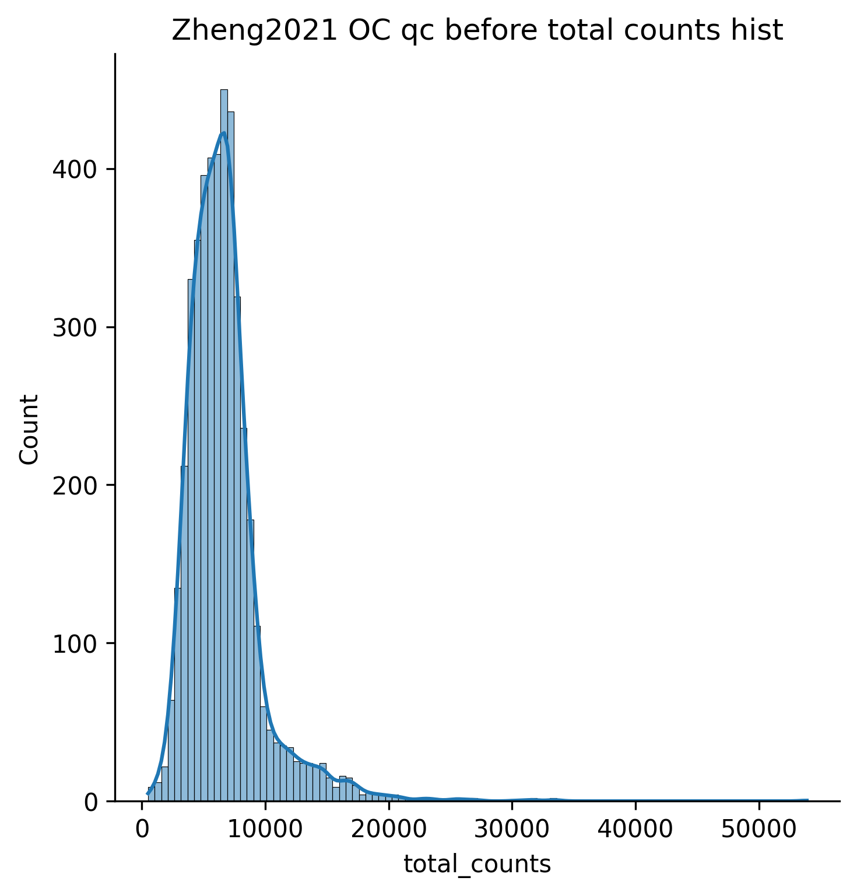 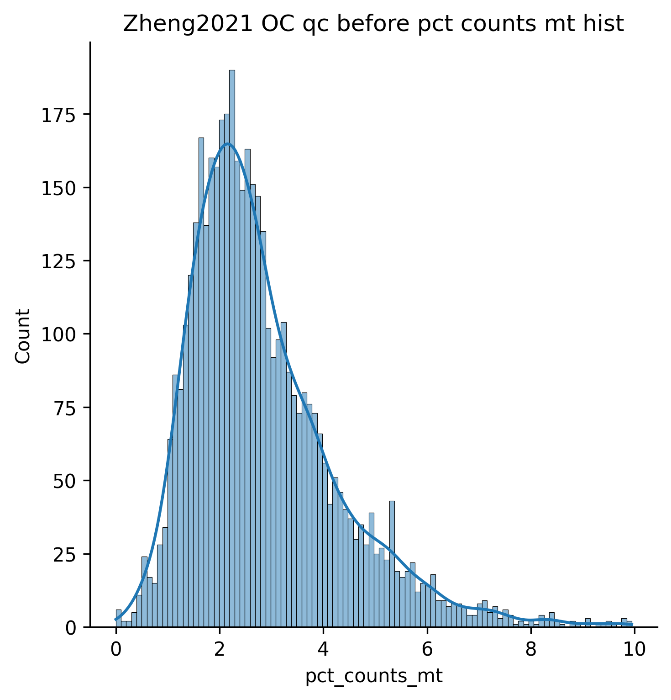 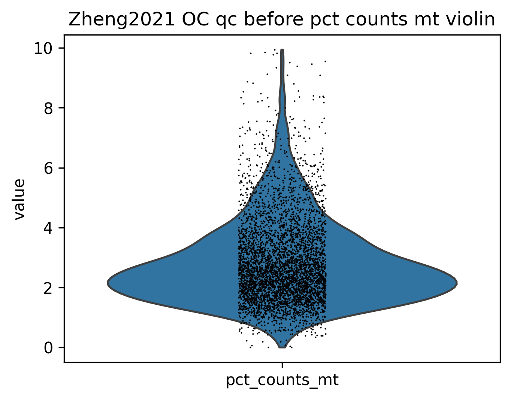 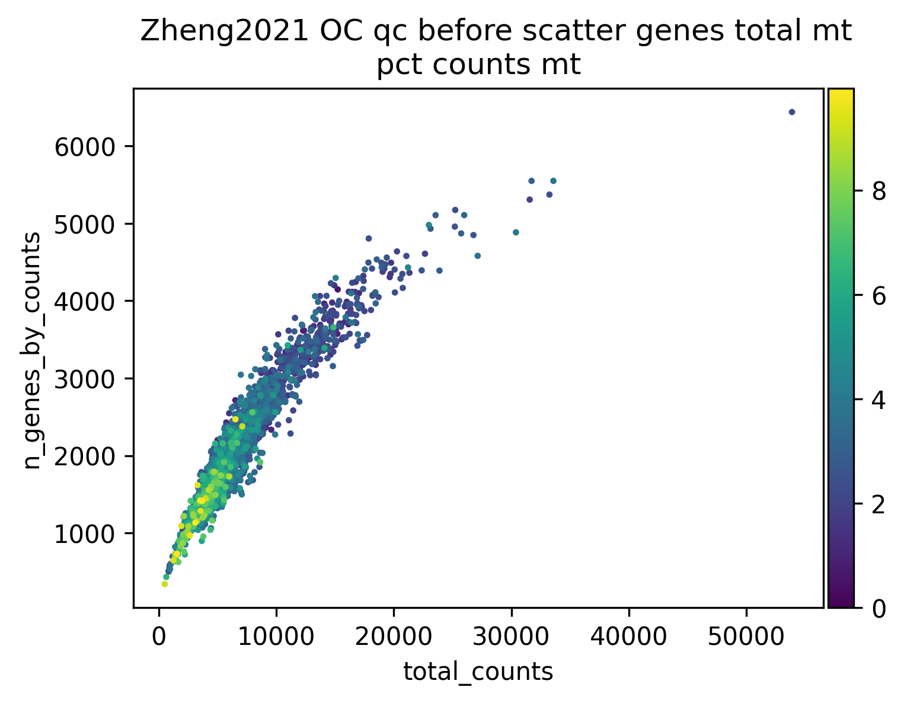


Number of count outliers with MAD > 5: 152
Number of mitochondrial outliers with MAD > 5 or pct_counts_mt > 8: 110
Filtered out outliers: 241 (5.33%)
Filtering out genes expressed in less than 20 cells
Removed 12144 genes (50.30%), 11999 kept
After count QC:


1.6.3. Doublet QC
Running scrublet with expected doublet rate 0.05

There are 5 predicted doublets, applying filter
After doublet step: (4277, 11999) (removed 0.12% cells)
1.6.4. Gene exclusion
Excluding genes matching the following patterns:
Note: Showing at most 10 rows and 10 columns from data with 11 rows and 2 columns.
| mt_genes | ['MT-'] |
| ribo_genes | ['RPS', 'RPL'] |
| hb_genes | ['^HBA|^HBB'] |
| stress_genes | ['G0S2', '^JUN', '^FOS', 'CDKN1A'] |
| IFN_genes | ['^IRF', '^IFN'] |
| ccl_genes | ['CCL'] |
| MHC_genes | ['^HLA-[A-Z]'] |
| hist_genes | ['HIST'] |
| comp_genes | ['^C1Q'] |
| ig_genes | ['^IGH', '^IGK', '^IGL'] |
Removing 324 genes (2.70%)
Shape after exclusion panel filtering: (4277, 11675)
load_dataset
function: load_dataset parameters: filename: GSE156728_PACA.raw_counts_stand.h5ad max_cells: 200000 study: Zheng2021 tissue_type: null cache_file: data/load_dataset_a69374da1593.h5ad
load file 17: GSE156728_PACA.raw_counts_stand.h5ad
file_version: 2026-09-09 09:59:46.385299464
Loaded 'GSE156728_PACA.raw_counts_stand.h5ad' (backed): 9860 × 24148
Gene names: index → ENSG IDs (7981 without ensembl_id kept via symbol), dropped 5 duplicates → 24143 genes
Pre-computed QC metrics from gene_name column
1.6.5. Loaded: GSE156728_PACA.raw_counts_stand.h5ad
Shape: 9860 cells × 24143 genes
layers: ['counts'] | obsm: []
obs columns
Note: Showing at most 10 rows and 10 columns from data with 31 rows and 4 columns.
| index | column | dtype | n_unique | top values |
|---|---|---|---|---|
| 0 | study_id | category | 1 | GSE156728 (9860) |
| 1 | sample_id | category | 6 | GSM4743201 (3571), GSM4743203 (2605), GSM4743200 (2010) |
| 2 | original_barcode | object | 9860 | TAGCCGGTCCTGCAGG.41 (1), AAACCTGAGGAGTTGC.35 (1), AAACCTGAGTTTCCTT.35 (1) |
| 3 | donor | category | 6 | PACA.P20181128 (3571), PACA.P20190306 (2605), PACA.P20181121 (2010) |
| 4 | tissue_group | category | 2 | TIL (9355), tissue (505) |
| 5 | disease_group | category | 1 | CANCER (9860) |
| 6 | tissue | category | 1 | pancreas (9860) |
| 7 | disease | category | 1 | PACA (9860) |
| 8 | chemistry | category | 1 | 10x_5p_v3 (9860) |
| 9 | sc_tech | category | 1 | 10X (9860) |
var columns
Note: Showing at most 10 rows and 10 columns from data with 14 rows and 4 columns.
| index | column | dtype | n_unique | sample values |
|---|---|---|---|---|
| 0 | gene_name | object | 24143 | AC240274.1 (1), RP11-34P13.3 (1), RP11-34P13.7 (1) |
| 1 | ensembl_id | category | 16167 | ENSG00000293495 (1), ENSG00000000003 (1), ENSG00000000419 (1) |
| 2 | ensembl_source | category | 5 | direct_hgnc_exact (16153), unmapped (6637), ambiguous_direct_hgnc_exact (1339) |
| 3 | ensembl_gene_tag | category | 2 | single_gene (16166), multiple_genes (1) |
| 4 | mt | bool | min=0 mean=0.000538 max=1 | |
| 5 | ribo | bool | min=0 mean=0.00422 max=1 | |
| 6 | hb | bool | min=0 mean=0.000414 max=1 | |
| 7 | n_cells_by_counts | int64 | min=0 mean=678 max=9.86e+03 | |
| 8 | mean_counts | float64 | min=0 mean=0.188 max=86.8 | |
| 9 | log1p_mean_counts | float64 | min=0 mean=0.0921 max=4.47 |
remap_columns
function: remap_columns parameters: column_map: {"Age": "age", "Chemistry": "chemistry", "Disease": "disease", "Donor": "donor", "Patient": "donor", "PatientID": "donor", "Sample": "sample_id", "SampleID": "sample_id", "Sex": "sex", "Tissue": "tissue_type", "assay": "chemistry", "cohort": "study", "condition": "disease", "condition_detail": "disease_detail", "dataset": "study", "detailed_context": "disease_detail", "diagnosis": "disease", "diagnosis_detail": "disease_detail", "disease_status": "disease", "disease_subtype": "disease_detail", "donor_id": "donor", "gender": "sex", "library_type": "chemistry", "organ": "tissue_type", "patient": "donor", "patient_id": "donor", "protocol": "chemistry", "sample": "sample_id", "sampleID": "sample_id", "sample_type": "tissue_type", "source_tissue": "tissue_type", "subtype": "disease_detail", "tissue": "tissue_type"} defaults: {"assay_chemistry": "5'", "cellranger": "3", "chemistry": "10x_5v3", "data_source": "GEO GSE156728", "disease": "PCC", "disease_detail": "Pancreatic cancer", "tissue_detail": "pancreas"} cache_file: data/remap_columns_20b12d79ec25.h5ad
Remapped columns: tissue → tissue_type
Default applied: assay_chemistry = '5''
Default applied: data_source = 'GEO GSE156728'
Default applied: cellranger = '3'
qc_full
function: qc_full parameters: excluded_gene_patterns: null expected_doublet_rate: 0.05 frac_treshold: 0.05 low_count_treshold: 1000 mad_outlier_var: 5 min_cells_per_gene: 20 mitochondria_cutoff_percentage: 8 name: Zheng2021_PCC cache_file: data/qc_full_1f517e684079.h5ad
1.7. Quality Control
1.7.1. Ambient RNA QC
Checking if a cleanup is necessary, flagging cells with less than 1000 counts as potential ambient RNA contamination
No significant RNA contamination detected, skipping cleanup
1.7.2. Count QC
| index | count | mean | std | min | 25% | 50% | 75% | max |
|---|---|---|---|---|---|---|---|---|
| total_counts | 9860 | 4536.55 | 2413.34 | 507 | 3211 | 4142 | 5249.25 | 52389 |
| n_genes_by_counts | 9860 | 1660.80 | 534.90 | 322 | 1339 | 1582 | 1877.25 | 6422 |
| pct_counts_mt | 9860 | 3.31 | 1.88 | 0 | 1.84 | 3.21 | 4.45 | 9.98 |
| pct_counts_ribo | 9860 | 19.53 | 6.07 | 1.96 | 15.29 | 19.11 | 23.23 | 51.69 |
| pct_counts_hb | 9860 | 0.01 | 0.02 | 0 | 0 | 0 | 0 | 0.42 |
| pct_counts_in_top_20_genes | 9860 | 20.48 | 3.38 | 12.48 | 18.15 | 19.82 | 22.14 | 54.23 |


Number of count outliers with MAD > 5: 372
Number of mitochondrial outliers with MAD > 5 or pct_counts_mt > 8: 182
Filtered out outliers: 536 (5.44%)
Filtering out genes expressed in less than 20 cells
Removed 10820 genes (44.82%), 13323 kept
After count QC:


1.7.3. Doublet QC
Running scrublet with expected doublet rate 0.05

No doublets predicted
After doublet step: (9324, 13323) (removed 0.00% cells)
1.7.4. Gene exclusion
Excluding genes matching the following patterns:
Note: Showing at most 10 rows and 10 columns from data with 11 rows and 2 columns.
| mt_genes | ['MT-'] |
| ribo_genes | ['RPS', 'RPL'] |
| hb_genes | ['^HBA|^HBB'] |
| stress_genes | ['G0S2', '^JUN', '^FOS', 'CDKN1A'] |
| IFN_genes | ['^IRF', '^IFN'] |
| ccl_genes | ['CCL'] |
| MHC_genes | ['^HLA-[A-Z]'] |
| hist_genes | ['HIST'] |
| comp_genes | ['^C1Q'] |
| ig_genes | ['^IGH', '^IGK', '^IGL'] |
Removing 386 genes (2.90%)
Shape after exclusion panel filtering: (9324, 12937)
load_dataset
function: load_dataset parameters: filename: GSE156728_RC.raw_counts_stand.h5ad max_cells: 200000 study: Zheng2021 tissue_type: null cache_file: data/load_dataset_90c417a7fd07.h5ad
load file 18: GSE156728_RC.raw_counts_stand.h5ad
file_version: 2026-09-09 09:59:48.962463589
Loaded 'GSE156728_RC.raw_counts_stand.h5ad' (backed): 26649 × 24148
Gene names: index → ENSG IDs (7981 without ensembl_id kept via symbol), dropped 5 duplicates → 24143 genes
Pre-computed QC metrics from gene_name column
1.7.5. Loaded: GSE156728_RC.raw_counts_stand.h5ad
Shape: 26649 cells × 24143 genes
layers: ['counts'] | obsm: []
obs columns
Note: Showing at most 10 rows and 10 columns from data with 31 rows and 4 columns.
| index | column | dtype | n_unique | top values |
|---|---|---|---|---|
| 0 | study_id | category | 1 | GSE156728 (26649) |
| 1 | sample_id | category | 6 | GSM4743210 (8874), GSM4743211 (7692), GSM4743206 (4013) |
| 2 | original_barcode | object | 26649 | TTTGTCATCTGCGTAA.53 (1), AAACCTGCATTTGCCC.42 (1), AAACGGGCAGTCGATT.42 (1) |
| 3 | donor | category | 6 | RC.P20190923 (8874), RC.P20190925 (7692), RC.P20181217 (4013) |
| 4 | tissue_group | category | 2 | TIL (15544), tissue (11105) |
| 5 | disease_group | category | 1 | CANCER (26649) |
| 6 | tissue | category | 1 | kidney (26649) |
| 7 | disease | category | 1 | RC (26649) |
| 8 | chemistry | category | 1 | 10x_5p_v3 (26649) |
| 9 | sc_tech | category | 1 | 10X (26649) |
var columns
Note: Showing at most 10 rows and 10 columns from data with 14 rows and 4 columns.
| index | column | dtype | n_unique | sample values |
|---|---|---|---|---|
| 0 | gene_name | object | 24143 | AC240274.1 (1), RP11-34P13.3 (1), RP11-34P13.7 (1) |
| 1 | ensembl_id | category | 16167 | ENSG00000293495 (1), ENSG00000000003 (1), ENSG00000000419 (1) |
| 2 | ensembl_source | category | 5 | direct_hgnc_exact (16153), unmapped (6637), ambiguous_direct_hgnc_exact (1339) |
| 3 | ensembl_gene_tag | category | 2 | single_gene (16166), multiple_genes (1) |
| 4 | mt | bool | min=0 mean=0.000538 max=1 | |
| 5 | ribo | bool | min=0 mean=0.00422 max=1 | |
| 6 | hb | bool | min=0 mean=0.000414 max=1 | |
| 7 | n_cells_by_counts | int64 | min=0 mean=1.7e+03 max=2.66e+04 | |
| 8 | mean_counts | float64 | min=0 mean=0.175 max=75.8 | |
| 9 | log1p_mean_counts | float64 | min=0 mean=0.0842 max=4.34 |
remap_columns
function: remap_columns parameters: column_map: {"Age": "age", "Chemistry": "chemistry", "Disease": "disease", "Donor": "donor", "Patient": "donor", "PatientID": "donor", "Sample": "sample_id", "SampleID": "sample_id", "Sex": "sex", "Tissue": "tissue_type", "assay": "chemistry", "cohort": "study", "condition": "disease", "condition_detail": "disease_detail", "dataset": "study", "detailed_context": "disease_detail", "diagnosis": "disease", "diagnosis_detail": "disease_detail", "disease_status": "disease", "disease_subtype": "disease_detail", "donor_id": "donor", "gender": "sex", "library_type": "chemistry", "organ": "tissue_type", "patient": "donor", "patient_id": "donor", "protocol": "chemistry", "sample": "sample_id", "sampleID": "sample_id", "sample_type": "tissue_type", "source_tissue": "tissue_type", "subtype": "disease_detail", "tissue": "tissue_type"} defaults: {"assay_chemistry": "5'", "cellranger": "3", "chemistry": "10x_5v3", "data_source": "GEO GSE156728", "disease": "RC", "disease_detail": "Renal carcinoma", "tissue_detail": "kidney"} cache_file: data/remap_columns_7787f24067b2.h5ad
Remapped columns: tissue → tissue_type
Default applied: assay_chemistry = '5''
Default applied: data_source = 'GEO GSE156728'
Default applied: cellranger = '3'
qc_full
function: qc_full parameters: excluded_gene_patterns: null expected_doublet_rate: 0.05 frac_treshold: 0.05 low_count_treshold: 1000 mad_outlier_var: 5 min_cells_per_gene: 20 mitochondria_cutoff_percentage: 8 name: Zheng2021_RC cache_file: data/qc_full_e1802748802c.h5ad
1.8. Quality Control
1.8.1. Ambient RNA QC
Checking if a cleanup is necessary, flagging cells with less than 1000 counts as potential ambient RNA contamination
No significant RNA contamination detected, skipping cleanup
1.8.2. Count QC
| index | count | mean | std | min | 25% | 50% | 75% | max |
|---|---|---|---|---|---|---|---|---|
| total_counts | 26649 | 4224.65 | 2024.57 | 512 | 3095 | 3838 | 4852 | 40723 |
| n_genes_by_counts | 26649 | 1543.15 | 476.36 | 316 | 1253 | 1460 | 1734 | 6001 |
| pct_counts_mt | 26649 | 3.79 | 1.61 | 0 | 2.72 | 3.73 | 4.75 | 9.99 |
| pct_counts_ribo | 26649 | 24.27 | 6.50 | 1.99 | 19.83 | 24.04 | 28.42 | 50.69 |
| pct_counts_hb | 26649 | 0.01 | 0.02 | 0 | 0 | 0 | 0 | 2.60 |
| pct_counts_in_top_20_genes | 26649 | 19.56 | 2.38 | 10.78 | 18.04 | 19.40 | 20.82 | 40.86 |


Number of count outliers with MAD > 5: 782
Number of mitochondrial outliers with MAD > 5 or pct_counts_mt > 8: 346
Filtered out outliers: 1100 (4.13%)
Filtering out genes expressed in less than 20 cells
Removed 9591 genes (39.73%), 14552 kept
After count QC:


1.8.3. Doublet QC
Running scrublet with expected doublet rate 0.05

There are 5 predicted doublets, applying filter
After doublet step: (25544, 14552) (removed 0.02% cells)
1.8.4. Gene exclusion
Excluding genes matching the following patterns:
Note: Showing at most 10 rows and 10 columns from data with 11 rows and 2 columns.
| mt_genes | ['MT-'] |
| ribo_genes | ['RPS', 'RPL'] |
| hb_genes | ['^HBA|^HBB'] |
| stress_genes | ['G0S2', '^JUN', '^FOS', 'CDKN1A'] |
| IFN_genes | ['^IRF', '^IFN'] |
| ccl_genes | ['CCL'] |
| MHC_genes | ['^HLA-[A-Z]'] |
| hist_genes | ['HIST'] |
| comp_genes | ['^C1Q'] |
| ig_genes | ['^IGH', '^IGK', '^IGL'] |
Removing 397 genes (2.73%)
Shape after exclusion panel filtering: (25544, 14155)
load_dataset
function: load_dataset parameters: filename: GSE156728_BCL.raw_counts_stand.h5ad max_cells: 200000 study: Zheng2021 tissue_type: null cache_file: data/load_dataset_e1b6772a2255.h5ad
load file 19: GSE156728_BCL.raw_counts_stand.h5ad
file_version: 2026-09-09 09:59:38.203778428
Loaded 'GSE156728_BCL.raw_counts_stand.h5ad' (backed): 7719 × 28855
Gene names: index → ENSG IDs (11035 without ensembl_id kept via symbol), dropped 7 duplicates → 28848 genes
Pre-computed QC metrics from gene_name column
1.8.5. Loaded: GSE156728_BCL.raw_counts_stand.h5ad
Shape: 7719 cells × 28848 genes
layers: ['counts'] | obsm: []
obs columns
Note: Showing at most 10 rows and 10 columns from data with 31 rows and 4 columns.
| index | column | dtype | n_unique | top values |
|---|---|---|---|---|
| 0 | study_id | category | 1 | GSE156728 (7719) |
| 1 | sample_id | category | 2 | GSM4743232 (6198), GSM4743233 (1521) |
| 2 | original_barcode | object | 7719 | TTTGTCATCACCTTAT.22 (1), AAACCTGCACTGTGTA.20 (1), AAACCTGGTACTCTCC.20 (1) |
| 3 | donor | category | 2 | L.P20190404 (6198), L.P20181123 (1521) |
| 4 | tissue_group | category | 2 | PBMC (4226), TIL (3493) |
| 5 | disease_group | category | 1 | CANCER (7719) |
| 6 | tissue | category | 2 | PBMC (4226), bone_marrow (3493) |
| 7 | disease | category | 1 | BCL (7719) |
| 8 | chemistry | category | 1 | 10x_5p_v3 (7719) |
| 9 | sc_tech | category | 1 | 10X (7719) |
var columns
Note: Showing at most 10 rows and 10 columns from data with 15 rows and 4 columns.
| index | column | dtype | n_unique | sample values |
|---|---|---|---|---|
| 0 | gene_id | object | 28848 | MT-CYB (1), MT-ND6 (1), MT-ND5 (1) |
| 1 | ensembl_id | category | 17820 | ENSG00000293511 (1), ENSG00000000003 (1), ENSG00000000005 (1) |
| 2 | ensembl_source | category | 5 | direct_hgnc_exact (17804), unmapped (9505), ambiguous_direct_hgnc_exact (1523) |
| 3 | ensembl_gene_tag | category | 2 | single_gene (17819), multiple_genes (1) |
| 4 | gene_name | object | 28848 | MT-CYB (1), MT-ND6 (1), MT-ND5 (1) |
| 5 | mt | bool | min=0 mean=0.000451 max=1 | |
| 6 | ribo | bool | min=0 mean=0.00354 max=1 | |
| 7 | hb | bool | min=0 mean=0.000416 max=1 | |
| 8 | n_cells_by_counts | int64 | min=0 mean=482 max=7.72e+03 | |
| 9 | mean_counts | float64 | min=0 mean=0.182 max=89.6 |
remap_columns
function: remap_columns parameters: column_map: {"Age": "age", "Chemistry": "chemistry", "Disease": "disease", "Donor": "donor", "Patient": "donor", "PatientID": "donor", "Sample": "sample_id", "SampleID": "sample_id", "Sex": "sex", "Tissue": "tissue_type", "assay": "chemistry", "cohort": "study", "condition": "disease", "condition_detail": "disease_detail", "dataset": "study", "detailed_context": "disease_detail", "diagnosis": "disease", "diagnosis_detail": "disease_detail", "disease_status": "disease", "disease_subtype": "disease_detail", "donor_id": "donor", "gender": "sex", "library_type": "chemistry", "organ": "tissue_type", "patient": "donor", "patient_id": "donor", "protocol": "chemistry", "sample": "sample_id", "sampleID": "sample_id", "sample_type": "tissue_type", "source_tissue": "tissue_type", "subtype": "disease_detail", "tissue": "tissue_type"} defaults: {"assay_chemistry": "5'", "cellranger": "3", "chemistry": "10x_5v3", "data_source": "GEO GSE156728", "disease": "BCL", "disease_detail": "B-cell lymphoma"} cache_file: data/remap_columns_93a7f256a50d.h5ad
Remapped columns: tissue → tissue_type
Default applied: assay_chemistry = '5''
Default applied: data_source = 'GEO GSE156728'
Default applied: cellranger = '3'
qc_full
function: qc_full parameters: excluded_gene_patterns: null expected_doublet_rate: 0.05 frac_treshold: 0.05 low_count_treshold: 1000 mad_outlier_var: 5 min_cells_per_gene: 20 mitochondria_cutoff_percentage: 8 name: Zheng2021_BCL cache_file: data/qc_full_71000ebd23dd.h5ad
1.9. Quality Control
1.9.1. Ambient RNA QC
Checking if a cleanup is necessary, flagging cells with less than 1000 counts as potential ambient RNA contamination
No significant RNA contamination detected, skipping cleanup
1.9.2. Count QC
| index | count | mean | std | min | 25% | 50% | 75% | max |
|---|---|---|---|---|---|---|---|---|
| total_counts | 7719 | 5250.91 | 2406.94 | 955 | 3834.50 | 4964 | 6079 | 57537 |
| n_genes_by_counts | 7719 | 1802.20 | 474.42 | 581 | 1515 | 1758 | 2006 | 6923 |
| pct_counts_mt | 7719 | 3.89 | 1.31 | 0.13 | 2.97 | 3.65 | 4.57 | 9.92 |
| pct_counts_ribo | 7719 | 29.22 | 8.69 | 2.86 | 22.34 | 30.85 | 36.15 | 50.23 |
| pct_counts_hb | 7719 | 0.01 | 0.40 | 0 | 0 | 0 | 0 | 31.67 |
| pct_counts_in_top_20_genes | 7719 | 19.85 | 2.38 | 12.25 | 18.18 | 19.94 | 21.48 | 45.18 |


Number of count outliers with MAD > 5: 120
Number of mitochondrial outliers with MAD > 5 or pct_counts_mt > 8: 146
Filtered out outliers: 258 (3.34%)
Filtering out genes expressed in less than 20 cells
Removed 15986 genes (55.41%), 12862 kept
After count QC:


1.9.3. Doublet QC
Running scrublet with expected doublet rate 0.05

There are 11 predicted doublets, applying filter
After doublet step: (7450, 12862) (removed 0.15% cells)
1.9.4. Gene exclusion
Excluding genes matching the following patterns:
Note: Showing at most 10 rows and 10 columns from data with 11 rows and 2 columns.
| mt_genes | ['MT-'] |
| ribo_genes | ['RPS', 'RPL'] |
| hb_genes | ['^HBA|^HBB'] |
| stress_genes | ['G0S2', '^JUN', '^FOS', 'CDKN1A'] |
| IFN_genes | ['^IRF', '^IFN'] |
| ccl_genes | ['CCL'] |
| MHC_genes | ['^HLA-[A-Z]'] |
| hist_genes | ['HIST'] |
| comp_genes | ['^C1Q'] |
| ig_genes | ['^IGH', '^IGK', '^IGL'] |
Removing 329 genes (2.56%)
Shape after exclusion panel filtering: (7450, 12533)
load_dataset
function: load_dataset parameters: filename: GSE156728_MM.raw_counts_stand.h5ad max_cells: 200000 study: Zheng2021 tissue_type: null cache_file: data/load_dataset_443cdcf7a463.h5ad
load file 20: GSE156728_MM.raw_counts_stand.h5ad
file_version: 2026-09-09 09:59:43.902141326
Loaded 'GSE156728_MM.raw_counts_stand.h5ad' (backed): 12274 × 28855
Gene names: index → ENSG IDs (11035 without ensembl_id kept via symbol), dropped 7 duplicates → 28848 genes
Pre-computed QC metrics from gene_name column
1.9.5. Loaded: GSE156728_MM.raw_counts_stand.h5ad
Shape: 12274 cells × 28848 genes
layers: ['counts'] | obsm: []
obs columns
Note: Showing at most 10 rows and 10 columns from data with 31 rows and 4 columns.
| index | column | dtype | n_unique | top values |
|---|---|---|---|---|
| 0 | study_id | category | 1 | GSE156728 (12274) |
| 1 | sample_id | category | 3 | GSM4743235 (5392), GSM4743236 (4615), GSM4743234 (2267) |
| 2 | original_barcode | object | 12274 | TTTGTCATCTATGTGG.31 (1), AAACCTGCATCTCCCA.25 (1), TTTCCTCCAGCTGTGC.31 (1) |
| 3 | donor | category | 3 | MM.P20190122 (5392), MM.P20190322 (4615), MM.P20181219 (2267) |
| 4 | tissue_group | category | 2 | TIL (8279), PBMC (3995) |
| 5 | disease_group | category | 1 | CANCER (12274) |
| 6 | tissue | category | 2 | bone_marrow (8279), PBMC (3995) |
| 7 | disease | category | 1 | MM (12274) |
| 8 | chemistry | category | 1 | 10x_5p_v3 (12274) |
| 9 | sc_tech | category | 1 | 10X (12274) |
var columns
Note: Showing at most 10 rows and 10 columns from data with 14 rows and 4 columns.
| index | column | dtype | n_unique | sample values |
|---|---|---|---|---|
| 0 | gene_name | object | 28848 | MT-CYB (1), MT-ND6 (1), MT-ND5 (1) |
| 1 | ensembl_id | category | 17820 | ENSG00000293511 (1), ENSG00000000003 (1), ENSG00000000005 (1) |
| 2 | ensembl_source | category | 5 | direct_hgnc_exact (17804), unmapped (9505), ambiguous_direct_hgnc_exact (1523) |
| 3 | ensembl_gene_tag | category | 2 | single_gene (17819), multiple_genes (1) |
| 4 | mt | bool | min=0 mean=0.000451 max=1 | |
| 5 | ribo | bool | min=0 mean=0.00354 max=1 | |
| 6 | hb | bool | min=0 mean=0.000416 max=1 | |
| 7 | n_cells_by_counts | int64 | min=0 mean=729 max=1.23e+04 | |
| 8 | mean_counts | float64 | min=0 mean=0.174 max=85 | |
| 9 | log1p_mean_counts | float64 | min=0 mean=0.0785 max=4.45 |
remap_columns
function: remap_columns parameters: column_map: {"Age": "age", "Chemistry": "chemistry", "Disease": "disease", "Donor": "donor", "Patient": "donor", "PatientID": "donor", "Sample": "sample_id", "SampleID": "sample_id", "Sex": "sex", "Tissue": "tissue_type", "assay": "chemistry", "cohort": "study", "condition": "disease", "condition_detail": "disease_detail", "dataset": "study", "detailed_context": "disease_detail", "diagnosis": "disease", "diagnosis_detail": "disease_detail", "disease_status": "disease", "disease_subtype": "disease_detail", "donor_id": "donor", "gender": "sex", "library_type": "chemistry", "organ": "tissue_type", "patient": "donor", "patient_id": "donor", "protocol": "chemistry", "sample": "sample_id", "sampleID": "sample_id", "sample_type": "tissue_type", "source_tissue": "tissue_type", "subtype": "disease_detail", "tissue": "tissue_type"} defaults: {"assay_chemistry": "5'", "cellranger": "3", "chemistry": "10x_5v3", "data_source": "GEO GSE156728", "disease": "MM", "disease_detail": "Multiple myeloma"} cache_file: data/remap_columns_3ccfd9f6dd96.h5ad
Remapped columns: tissue → tissue_type
Default applied: assay_chemistry = '5''
Default applied: data_source = 'GEO GSE156728'
Default applied: cellranger = '3'
qc_full
function: qc_full parameters: excluded_gene_patterns: null expected_doublet_rate: 0.05 frac_treshold: 0.05 low_count_treshold: 1000 mad_outlier_var: 5 min_cells_per_gene: 20 mitochondria_cutoff_percentage: 8 name: Zheng2021_MM cache_file: data/qc_full_0ff95e42529d.h5ad
1.10. Quality Control
1.10.1. Ambient RNA QC
Checking if a cleanup is necessary, flagging cells with less than 1000 counts as potential ambient RNA contamination
No significant RNA contamination detected, skipping cleanup
1.10.2. Count QC
| index | count | mean | std | min | 25% | 50% | 75% | max |
|---|---|---|---|---|---|---|---|---|
| total_counts | 12274 | 5030.64 | 2723.70 | 879 | 3703 | 4544.50 | 5537 | 56095 |
| n_genes_by_counts | 12274 | 1713.08 | 546.66 | 526 | 1385 | 1617 | 1887 | 6330 |
| pct_counts_mt | 12274 | 4.05 | 1.45 | 0.20 | 3.02 | 3.85 | 4.85 | 9.97 |
| pct_counts_ribo | 12274 | 28.18 | 10.26 | 2.76 | 20.96 | 25.40 | 35.33 | 55.78 |
| pct_counts_hb | 12274 | 0.01 | 0.09 | 0 | 0 | 0 | 0.01 | 8.19 |
| pct_counts_in_top_20_genes | 12274 | 20.16 | 3.28 | 12.61 | 17.69 | 19.47 | 22.34 | 34.49 |


Number of count outliers with MAD > 5: 381
Number of mitochondrial outliers with MAD > 5 or pct_counts_mt > 8: 184
Filtered out outliers: 555 (4.52%)
Filtering out genes expressed in less than 20 cells
Removed 15211 genes (52.73%), 13637 kept
After count QC:


1.10.3. Doublet QC
Running scrublet with expected doublet rate 0.05

There are 24 predicted doublets, applying filter
After doublet step: (11695, 13637) (removed 0.20% cells)
1.10.4. Gene exclusion
Excluding genes matching the following patterns:
Note: Showing at most 10 rows and 10 columns from data with 11 rows and 2 columns.
| mt_genes | ['MT-'] |
| ribo_genes | ['RPS', 'RPL'] |
| hb_genes | ['^HBA|^HBB'] |
| stress_genes | ['G0S2', '^JUN', '^FOS', 'CDKN1A'] |
| IFN_genes | ['^IRF', '^IFN'] |
| ccl_genes | ['CCL'] |
| MHC_genes | ['^HLA-[A-Z]'] |
| hist_genes | ['HIST'] |
| comp_genes | ['^C1Q'] |
| ig_genes | ['^IGH', '^IGK', '^IGL'] |
Removing 350 genes (2.57%)
Shape after exclusion panel filtering: (11695, 13287)
load_dataset
function: load_dataset parameters: filename: GSE211644.raw_counts_stand.h5ad max_cells: 200000 study: Schalck2022 tissue_type: null cache_file: data/load_dataset_b9c69d9ca901.h5ad
load file 21: GSE211644.raw_counts_stand.h5ad
file_version: 2026-09-09 09:26:54.978720799
Loaded 'GSE211644.raw_counts_stand.h5ad' (backed): 62229 × 33538
Gene names: index → ENSG IDs (13057 without ensembl_id kept via symbol), dropped 0 duplicates → 33538 genes
1.10.5. Loaded: GSE211644.raw_counts_stand.h5ad
Shape: 62229 cells × 33538 genes
layers: ['counts'] | obsm: []
obs columns
Note: Showing at most 10 rows and 10 columns from data with 13 rows and 4 columns.
| index | column | dtype | n_unique | top values |
|---|---|---|---|---|
| 0 | study_id | category | 1 | GSE211644 (62229) |
| 1 | sample_id | category | 50 | GSM6481950 (7728), GSM6481952 (7339), GSM6481951 (7030) |
| 2 | donor | category | 33 | donor_4 (8055), donor_5 (8041), donor_2 (7756) |
| 3 | batch | category | 2 | MDA1 (43210), MDA2 (19019) |
| 4 | sample_detail | category | 2 | grown (40065), fresh (22164) |
| 5 | tissue_group | category | 2 | ACT (40065), TIL (22164) |
| 6 | tissue | category | 1 | pancreas (62229) |
| 7 | tissue_detail | category | 2 | malignant (58893), uninvolved tissue (3336) |
| 8 | disease_detail | category | 2 | pretreatment (48298), no pretreatment (9141) |
| 9 | disease | category | 1 | PCC (62229) |
var columns
| index | column | dtype | n_unique | sample values |
|---|---|---|---|---|
| 0 | gene_symbol | object | 33538 | FAM231C (1), MIR1302-2HG (1), MAFIP (1) |
| 1 | ensembl_id | category | 20481 | ENSG00000310560 (1), ENSG00000288867 (1), ENSG00000288722 (1) |
| 2 | ensembl_source | category | 5 | direct_hgnc_exact (20471), unmapped (11191), ambiguous_direct_hgnc_exact (1866) |
| 3 | ensembl_gene_tag | category | 2 | single_gene (20480), multiple_genes (1) |
| 4 | var_names | index | 33538 | ENSG00000243485, ENSG00000237613, ENSG00000186092, AL627309.1, AL627309.3 |
remap_columns
function: remap_columns parameters: column_map: {"Age": "age", "Chemistry": "chemistry", "Disease": "disease", "Donor": "donor", "Patient": "donor", "PatientID": "donor", "Sample": "sample_id", "SampleID": "sample_id", "Sex": "sex", "Tissue": "tissue_type", "assay": "chemistry", "cohort": "study", "condition": "disease", "condition_detail": "disease_detail", "dataset": "study", "detailed_context": "disease_detail", "diagnosis": "disease", "diagnosis_detail": "disease_detail", "disease_status": "disease", "disease_subtype": "disease_detail", "donor_id": "donor", "gender": "sex", "library_type": "chemistry", "organ": "tissue_type", "patient": "donor", "patient_id": "donor", "protocol": "chemistry", "sample": "sample_id", "sampleID": "sample_id", "sample_type": "tissue_type", "source_tissue": "tissue_type", "subtype": "disease_detail", "tissue": "tissue_type"} defaults: {"chemistry": "10x_5v1", "disease": "PCC", "disease_detail": "Pancreatic cancer (PDAC)"} cache_file: data/remap_columns_c8df9a2a8d22.h5ad
Remapped columns: tissue → tissue_type
qc_full
function: qc_full parameters: excluded_gene_patterns: null expected_doublet_rate: 0.05 frac_treshold: 0.05 low_count_treshold: 1000 mad_outlier_var: 5 min_cells_per_gene: 20 mitochondria_cutoff_percentage: 8 name: Schalck2022_PCC_pancreas cache_file: data/qc_full_8664075921d0.h5ad
1.11. Quality Control
1.11.1. Ambient RNA QC
Checking if a cleanup is necessary, flagging cells with less than 1000 counts as potential ambient RNA contamination
Potential RNA contamination detected (5.1% of cells < 1000 counts)
IGNORE_AMBIENT_RNA set — skipping cleanup and continuing (count QC still removes low-count cells)
1.11.2. Count QC
| index | count | mean | std | min | 25% | 50% | 75% | max |
|---|---|---|---|---|---|---|---|---|
| total_counts | 62229 | 3858.98 | 2502.35 | 460 | 2087 | 3186 | 5040 | 35426 |
| n_genes_by_counts | 62229 | 1427.51 | 694.33 | 201 | 883 | 1305 | 1866 | 5825 |
| pct_counts_mt | 62229 | 0 | 0 | 0 | 0 | 0 | 0 | 0 |
| pct_counts_ribo | 62229 | 2.18 | 0.72 | 0 | 1.70 | 2.09 | 2.55 | 7.09 |
| pct_counts_hb | 62229 | 0 | 0 | 0 | 0 | 0 | 0 | 0 |
| pct_counts_in_top_20_genes | 62229 | 22.85 | 5.37 | 12.62 | 19.08 | 21.23 | 26.03 | 79.77 |


Number of count outliers with MAD > 5: 1477
Number of mitochondrial outliers with MAD > 5 or pct_counts_mt > 8: 0
Filtered out outliers: 1477 (2.37%)
Filtering out genes expressed in less than 20 cells
Removed 16342 genes (48.73%), 17196 kept
After count QC:


1.11.3. Doublet QC
Running scrublet with expected doublet rate 0.05

There are 13 predicted doublets, applying filter
After doublet step: (60739, 17196) (removed 0.02% cells)
1.11.4. Gene exclusion
Excluding genes matching the following patterns:
Note: Showing at most 10 rows and 10 columns from data with 11 rows and 2 columns.
| mt_genes | ['MT-'] |
| ribo_genes | ['RPS', 'RPL'] |
| hb_genes | ['^HBA|^HBB'] |
| stress_genes | ['G0S2', '^JUN', '^FOS', 'CDKN1A'] |
| IFN_genes | ['^IRF', '^IFN'] |
| ccl_genes | ['CCL'] |
| MHC_genes | ['^HLA-[A-Z]'] |
| hist_genes | ['HIST'] |
| comp_genes | ['^C1Q'] |
| ig_genes | ['^IGH', '^IGK', '^IGL'] |
Removing 389 genes (2.26%)
Shape after exclusion panel filtering: (60739, 16807)
load_dataset
function: load_dataset parameters: filename: Agne_developmental.raw_counts_stand.h5ad max_cells: 200000 study: Agne_developmental tissue_type: tissue cache_file: data/load_dataset_3652319abdd7.h5ad
load file 22: Agne_developmental.raw_counts_stand.h5ad
file_version: 2026-10-06 12:31:38.553723320
Loaded 'Agne_developmental.raw_counts_stand.h5ad' (backed): 39011 × 36601
Gene names: index → ENSG IDs (15350 without ensembl_id kept via symbol), dropped 0 duplicates → 36601 genes
Pre-computed QC metrics from gene_name column
1.11.5. Loaded: Agne_developmental.raw_counts_stand.h5ad
Shape: 39011 cells × 36601 genes
layers: ['counts'] | obsm: []
obs columns
Note: Showing at most 10 rows and 10 columns from data with 30 rows and 4 columns.
| index | column | dtype | n_unique | top values |
|---|---|---|---|---|
| 0 | study_name | category | 1 | developmental (39011) |
| 1 | sample_id | category | 49 | MIM_ADH (2768), MIM_ADA (2426), MIM_ACS (2296) |
| 2 | donor | category | 49 | developmental_PED_MIM_ADH (2768), developmental_PED_MIM_ADA (2426), developmental_PED_MIM_ACS (2296) |
| 3 | batch | category | 26 | SEQ10_ATAC_CD45_POOL1 (5544), SEQ10_ATAC_CD45_POOL2 (5340), SEQ04_CD45_POOL2_RUN2 (3499) |
| 4 | tissue | category | 3 | small intestine (25434), large intestine (11873), Rectum (1704) |
| 5 | disease | category | 1 | H (39011) |
| 6 | disease_group | category | 1 | NORMAL (39011) |
| 7 | tissue_detail | category | 3 | pediatric (35998), adult (2729), fetal (284) |
| 8 | tissue_group | category | 1 | tissue (39011) |
| 9 | chemistry | category | 1 | 3prime multiome (39011) |
var columns
Note: Showing at most 10 rows and 10 columns from data with 14 rows and 4 columns.
| index | column | dtype | n_unique | sample values |
|---|---|---|---|---|
| 0 | gene_name | object | 36601 | AC007325.2 (1), MIR1302-2HG (1), FAM138A (1) |
| 1 | ensembl_id | category | 21251 | ENSG00000310560 (1), ENSG00000000003 (1), ENSG00000000005 (1) |
| 2 | ensembl_source | category | 5 | direct_hgnc_exact (21243), unmapped (13447), ambiguous_direct_hgnc_exact (1903) |
| 3 | ensembl_gene_tag | category | 2 | single_gene (21250), multiple_genes (1) |
| 4 | mt | bool | min=0 mean=0.000355 max=1 | |
| 5 | ribo | bool | min=0 mean=0.00281 max=1 | |
| 6 | hb | bool | min=0 mean=0.000328 max=1 | |
| 7 | n_cells_by_counts | int64 | min=0 mean=1.01e+03 max=3.86e+04 | |
| 8 | mean_counts | float64 | min=0 mean=0.0424 max=14.8 | |
| 9 | log1p_mean_counts | float64 | min=0 mean=0.033 max=2.76 |
remap_columns
function: remap_columns parameters: column_map: {"Age": "age", "Chemistry": "chemistry", "Disease": "disease", "Donor": "donor", "Patient": "donor", "PatientID": "donor", "Sample": "sample_id", "SampleID": "sample_id", "Sex": "sex", "Tissue": "tissue_type", "assay": "chemistry", "cohort": "study", "condition": "disease", "condition_detail": "disease_detail", "dataset": "study", "detailed_context": "disease_detail", "diagnosis": "disease", "diagnosis_detail": "disease_detail", "disease_status": "disease", "disease_subtype": "disease_detail", "donor_id": "donor", "gender": "sex", "library_type": "chemistry", "organ": "tissue_type", "patient": "donor", "patient_id": "donor", "protocol": "chemistry", "sample": "sample_id", "sampleID": "sample_id", "sample_type": "tissue_type", "source_tissue": "tissue_type", "subtype": "disease_detail", "tissue": "tissue_type"} defaults: {"assay_chemistry": "3'M", "cell_sort": "CD45+ (T-cell subset)", "cellranger": "7.0.0", "chemistry": "10x_3p_multiome", "data_source": "in-house (Agne)", "disease": "Healthy", "disease_detail": "Pediatric and fetal development (intestine)", "tissue_detail": "small + large intestine"} cache_file: data/remap_columns_a770433870b2.h5ad
remap_columns: no renames applied (targets already present or sources absent)
Default applied: disease_detail = 'Pediatric and fetal development (intestine)'
Default applied: assay_chemistry = '3'M'
Default applied: data_source = 'in-house (Agne)'
Default applied: cell_sort = 'CD45+ (T-cell subset)'
Default applied: cellranger = '7.0.0'
qc_full
function: qc_full parameters: excluded_gene_patterns: null expected_doublet_rate: 0.05 frac_treshold: 0.05 low_count_treshold: 1000 mad_outlier_var: 5 min_cells_per_gene: 20 mitochondria_cutoff_percentage: 8 name: Agne_dev_intestine cache_file: data/qc_full_f08d3b430ae2.h5ad
1.12. Quality Control
1.12.1. Ambient RNA QC
Checking if a cleanup is necessary, flagging cells with less than 1000 counts as potential ambient RNA contamination
Potential RNA contamination detected (16.3% of cells < 1000 counts)
IGNORE_AMBIENT_RNA set — skipping cleanup and continuing (count QC still removes low-count cells)
1.12.2. Count QC
| index | count | mean | std | min | 25% | 50% | 75% | max |
|---|---|---|---|---|---|---|---|---|
| total_counts | 39011 | 1552.15 | 682.77 | 249 | 1121.50 | 1432 | 1820 | 15614 |
| n_genes_by_counts | 39011 | 943.57 | 300.38 | 202 | 752 | 902 | 1080 | 5131 |
| pct_counts_mt | 39011 | 0.65 | 0.79 | 0 | 0.18 | 0.41 | 0.86 | 13.53 |
| pct_counts_ribo | 39011 | 0.59 | 0.54 | 0 | 0.28 | 0.46 | 0.73 | 20.71 |
| pct_counts_hb | 39011 | 0.02 | 0.05 | 0 | 0 | 0 | 0.04 | 0.64 |
| pct_counts_in_top_20_genes | 39011 | 12.93 | 2.65 | 4.92 | 11.21 | 12.63 | 14.23 | 74.59 |


Number of count outliers with MAD > 5: 872
Number of mitochondrial outliers with MAD > 5 or pct_counts_mt > 8: 2427
Filtered out outliers: 2969 (7.61%)
Filtering out genes expressed in less than 20 cells
Removed 17507 genes (47.83%), 19094 kept
After count QC:


1.12.3. Doublet QC
Running scrublet with expected doublet rate 0.05

There are 6 predicted doublets, applying filter
After doublet step: (36036, 19094) (removed 0.02% cells)
1.12.4. Gene exclusion
Excluding genes matching the following patterns:
Note: Showing at most 10 rows and 10 columns from data with 11 rows and 2 columns.
| mt_genes | ['MT-'] |
| ribo_genes | ['RPS', 'RPL'] |
| hb_genes | ['^HBA|^HBB'] |
| stress_genes | ['G0S2', '^JUN', '^FOS', 'CDKN1A'] |
| IFN_genes | ['^IRF', '^IFN'] |
| ccl_genes | ['CCL'] |
| MHC_genes | ['^HLA-[A-Z]'] |
| hist_genes | ['HIST'] |
| comp_genes | ['^C1Q'] |
| ig_genes | ['^IGH', '^IGK', '^IGL'] |
Removing 420 genes (2.20%)
Shape after exclusion panel filtering: (36036, 18674)
load_dataset
function: load_dataset parameters: filename: Agne_colonpolyp.raw_counts_stand.h5ad max_cells: 200000 study: Agne_polyp tissue_type: tissue cache_file: data/load_dataset_20cdf04acbca.h5ad
load file 23: Agne_colonpolyp.raw_counts_stand.h5ad
file_version: 2026-10-06 12:31:36.169570589
Loaded 'Agne_colonpolyp.raw_counts_stand.h5ad' (backed): 19182 × 36601
Gene names: index → ENSG IDs (15350 without ensembl_id kept via symbol), dropped 0 duplicates → 36601 genes
Pre-computed QC metrics from gene_name column
1.12.5. Loaded: Agne_colonpolyp.raw_counts_stand.h5ad
Shape: 19182 cells × 36601 genes
layers: ['counts'] | obsm: []
obs columns
Note: Showing at most 10 rows and 10 columns from data with 31 rows and 4 columns.
| index | column | dtype | n_unique | top values |
|---|---|---|---|---|
| 0 | study_name | category | 1 | Agne_polyp (19182) |
| 1 | sample_id | category | 24 | TP-OX-762_polyp (2587), TP-OX-758_polyp (2553), RG-016_polyp (2434) |
| 2 | batch | category | 10 | SEQ03 (4294), SEQ09_POOL2 (2882), SEQ04 (2659) |
| 3 | donor | category | 3 | Agne_polyp_donor2 (11754), Agne_polyp_donor1 (4361), Agne_polyp_donor3 (3067) |
| 4 | tissue | category | 1 | large intestine (19182) |
| 5 | disease | category | 2 | pcancer (11848), H (7334) |
| 6 | tissue_group | category | 1 | tissue (19182) |
| 7 | disease_group | category | 2 | PRE_CANCER (11848), NORMAL (7334) |
| 8 | tissue_detail | category | 4 | Ascending colon (6980), Caecum (5120), Sigmoid colon (5109) |
| 9 | disease_detail | category | 3 | Tubular adenoma (8209), (7334), Tubulovillous adenoma (3639) |
var columns
Note: Showing at most 10 rows and 10 columns from data with 14 rows and 4 columns.
| index | column | dtype | n_unique | sample values |
|---|---|---|---|---|
| 0 | gene_name | object | 36601 | AC007325.2 (1), MIR1302-2HG (1), FAM138A (1) |
| 1 | ensembl_id | category | 21251 | ENSG00000310560 (1), ENSG00000000003 (1), ENSG00000000005 (1) |
| 2 | ensembl_source | category | 5 | direct_hgnc_exact (21243), unmapped (13447), ambiguous_direct_hgnc_exact (1903) |
| 3 | ensembl_gene_tag | category | 2 | single_gene (21250), multiple_genes (1) |
| 4 | mt | bool | min=0 mean=0.000355 max=1 | |
| 5 | ribo | bool | min=0 mean=0.00281 max=1 | |
| 6 | hb | bool | min=0 mean=0.000328 max=1 | |
| 7 | n_cells_by_counts | int64 | min=0 mean=447 max=1.91e+04 | |
| 8 | mean_counts | float64 | min=0 mean=0.0381 max=16.9 | |
| 9 | log1p_mean_counts | float64 | min=0 mean=0.0296 max=2.89 |
remap_columns
function: remap_columns parameters: column_map: {"Age": "age", "Chemistry": "chemistry", "Disease": "disease", "Donor": "donor", "Patient": "donor", "PatientID": "donor", "Sample": "sample_id", "SampleID": "sample_id", "Sex": "sex", "Tissue": "tissue_type", "assay": "chemistry", "cohort": "study", "condition": "disease", "condition_detail": "disease_detail", "dataset": "study", "detailed_context": "disease_detail", "diagnosis": "disease", "diagnosis_detail": "disease_detail", "disease_status": "disease", "disease_subtype": "disease_detail", "donor_id": "donor", "gender": "sex", "library_type": "chemistry", "organ": "tissue_type", "patient": "donor", "patient_id": "donor", "protocol": "chemistry", "sample": "sample_id", "sampleID": "sample_id", "sample_type": "tissue_type", "source_tissue": "tissue_type", "subtype": "disease_detail", "tissue": "tissue_type"} defaults: {"assay_chemistry": "3'M", "cell_sort": "CD45+ (T-cell subset)", "cellranger": "7.0.0", "chemistry": "10x_3p_multiome", "data_source": "in-house (Agne)", "disease": "pcancer", "disease_detail": "Colorectal polyps (pre-cancer)", "tissue_detail": "large intestine (colon)"} cache_file: data/remap_columns_45770f416fb8.h5ad
remap_columns: no renames applied (targets already present or sources absent)
Default applied: assay_chemistry = '3'M'
Default applied: data_source = 'in-house (Agne)'
Default applied: cell_sort = 'CD45+ (T-cell subset)'
Default applied: cellranger = '7.0.0'
qc_full
function: qc_full parameters: excluded_gene_patterns: null expected_doublet_rate: 0.05 frac_treshold: 0.05 low_count_treshold: 1000 mad_outlier_var: 5 min_cells_per_gene: 20 mitochondria_cutoff_percentage: 8 name: Agne_polyp_colon cache_file: data/qc_full_34013c647e30.h5ad
1.13. Quality Control
1.13.1. Ambient RNA QC
Checking if a cleanup is necessary, flagging cells with less than 1000 counts as potential ambient RNA contamination
Potential RNA contamination detected (33.0% of cells < 1000 counts)
IGNORE_AMBIENT_RNA set — skipping cleanup and continuing (count QC still removes low-count cells)
1.13.2. Count QC
| index | count | mean | std | min | 25% | 50% | 75% | max |
|---|---|---|---|---|---|---|---|---|
| total_counts | 19182 | 1394.28 | 623.52 | 500 | 885 | 1298 | 1777 | 4222 |
| n_genes_by_counts | 19182 | 852.31 | 294.21 | 275 | 610 | 825 | 1051 | 2332 |
| pct_counts_mt | 19182 | 1.28 | 1.69 | 0 | 0.27 | 0.60 | 1.52 | 25.66 |
| pct_counts_ribo | 19182 | 0.94 | 0.91 | 0 | 0.44 | 0.65 | 1.03 | 20.71 |
| pct_counts_hb | 19182 | 0.02 | 0.05 | 0 | 0 | 0 | 0 | 0.77 |
| pct_counts_in_top_20_genes | 19182 | 14.66 | 3.67 | 5.82 | 12.09 | 13.94 | 16.52 | 55.54 |


Number of count outliers with MAD > 5: 301
Number of mitochondrial outliers with MAD > 5 or pct_counts_mt > 8: 2664
Filtered out outliers: 2858 (14.90%)
Filtering out genes expressed in less than 20 cells
Removed 21256 genes (58.07%), 15345 kept
After count QC:


1.13.3. Doublet QC
Running scrublet with expected doublet rate 0.05

There are 3 predicted doublets, applying filter
After doublet step: (16321, 15345) (removed 0.02% cells)
1.13.4. Gene exclusion
Excluding genes matching the following patterns:
Note: Showing at most 10 rows and 10 columns from data with 11 rows and 2 columns.
| mt_genes | ['MT-'] |
| ribo_genes | ['RPS', 'RPL'] |
| hb_genes | ['^HBA|^HBB'] |
| stress_genes | ['G0S2', '^JUN', '^FOS', 'CDKN1A'] |
| IFN_genes | ['^IRF', '^IFN'] |
| ccl_genes | ['CCL'] |
| MHC_genes | ['^HLA-[A-Z]'] |
| hist_genes | ['HIST'] |
| comp_genes | ['^C1Q'] |
| ig_genes | ['^IGH', '^IGK', '^IGL'] |
Removing 382 genes (2.49%)
Shape after exclusion panel filtering: (16321, 14963)
load_dataset
function: load_dataset parameters: filename: Agne_UC_CD8.raw_counts_stand.h5ad max_cells: 200000 study: Agne_UC_CD8 tissue_type: tissue cache_file: data/load_dataset_d6bb7fbcb2a1.h5ad
load file 24: Agne_UC_CD8.raw_counts_stand.h5ad
file_version: 2026-10-06 12:31:40.248831905
Loaded 'Agne_UC_CD8.raw_counts_stand.h5ad' (backed): 17587 × 24170
Gene names: index → ENSG IDs (9135 without ensembl_id kept via symbol), dropped 2 duplicates → 24168 genes
Pre-computed QC metrics from gene_name column
1.13.5. Loaded: Agne_UC_CD8.raw_counts_stand.h5ad
Shape: 17587 cells × 24168 genes
layers: ['counts'] | obsm: []
obs columns
Note: Showing at most 10 rows and 10 columns from data with 30 rows and 4 columns.
| index | column | dtype | n_unique | top values |
|---|---|---|---|---|
| 0 | study_name | category | 1 | UC_CD8 (17587) |
| 1 | sample_id | category | 10 | P34 (2908), Pmiseq (2177), P910 (2068) |
| 2 | batch | category | 2 | citeseq (9053), old (8534) |
| 3 | tissue | category | 1 | large intestine (17587) |
| 4 | disease | category | 2 | UC (10233), H (7354) |
| 5 | tissue_group | category | 1 | tissue (17587) |
| 6 | disease_group | category | 2 | IMID (10233), NORMAL (7354) |
| 7 | tissue_detail | category | 1 | (17587) |
| 8 | disease_detail | category | 2 | UC (10233), HC (7354) |
| 9 | chemistry | category | 1 | 10x_5p_v1 (17587) |
var columns
Note: Showing at most 10 rows and 10 columns from data with 14 rows and 4 columns.
| index | column | dtype | n_unique | sample values |
|---|---|---|---|---|
| 0 | gene_name | object | 24168 | AC007325.4 (1), RP11-34P13.7 (1), RP11-34P13.8 (1) |
| 1 | ensembl_id | category | 15033 | ENSG00000310560 (1), ENSG00000000003 (1), ENSG00000000419 (1) |
| 2 | ensembl_source | category | 5 | direct_hgnc_exact (15022), unmapped (7965), ambiguous_direct_hgnc_exact (1170) |
| 3 | ensembl_gene_tag | category | 2 | single_gene (15032), multiple_genes (1) |
| 4 | mt | bool | min=0 mean=0.000538 max=1 | |
| 5 | ribo | bool | min=0 mean=0.00418 max=1 | |
| 6 | hb | bool | min=0 mean=0.000414 max=1 | |
| 7 | n_cells_by_counts | int64 | min=0 mean=1.14e+03 max=1.76e+04 | |
| 8 | mean_counts | float64 | min=0 mean=0.177 max=98.5 | |
| 9 | log1p_mean_counts | float64 | min=0 mean=0.0848 max=4.6 |
remap_columns
function: remap_columns parameters: column_map: {"Age": "age", "Chemistry": "chemistry", "Disease": "disease", "Donor": "donor", "Patient": "donor", "PatientID": "donor", "Sample": "sample_id", "SampleID": "sample_id", "Sex": "sex", "Tissue": "tissue_type", "assay": "chemistry", "cohort": "study", "condition": "disease", "condition_detail": "disease_detail", "dataset": "study", "detailed_context": "disease_detail", "diagnosis": "disease", "diagnosis_detail": "disease_detail", "disease_status": "disease", "disease_subtype": "disease_detail", "donor_id": "donor", "gender": "sex", "library_type": "chemistry", "organ": "tissue_type", "patient": "donor", "patient_id": "donor", "protocol": "chemistry", "sample": "sample_id", "sampleID": "sample_id", "sample_type": "tissue_type", "source_tissue": "tissue_type", "subtype": "disease_detail", "tissue": "tissue_type"} defaults: {"assay_chemistry": "5'", "cell_sort": "CD8+", "cellranger": "3.0.2", "chemistry": "10x_5v1", "data_source": "in-house (Agne)", "disease": "UC", "disease_detail": "Ulcerative colitis (CD8-sorted)", "tissue_detail": "large intestine (colon)"} cache_file: data/remap_columns_8339a8eea5f4.h5ad
remap_columns: no renames applied (targets already present or sources absent)
Default applied: assay_chemistry = '5''
Default applied: data_source = 'in-house (Agne)'
Default applied: cell_sort = 'CD8+'
Default applied: cellranger = '3.0.2'
qc_full
function: qc_full parameters: excluded_gene_patterns: null expected_doublet_rate: 0.05 frac_treshold: 0.05 low_count_treshold: 1000 mad_outlier_var: 5 min_cells_per_gene: 20 mitochondria_cutoff_percentage: 8 name: Agne_UC_CD8_colon cache_file: data/qc_full_74b2a64aea72.h5ad
1.14. Quality Control
1.14.1. Ambient RNA QC
Checking if a cleanup is necessary, flagging cells with less than 1000 counts as potential ambient RNA contamination
No significant RNA contamination detected, skipping cleanup
1.14.2. Count QC
| index | count | mean | std | min | 25% | 50% | 75% | max |
|---|---|---|---|---|---|---|---|---|
| total_counts | 17587 | 4284.64 | 1834.45 | 498 | 3104.50 | 4130 | 5224.50 | 27470 |
| n_genes_by_counts | 17587 | 1561.63 | 476.18 | 182 | 1255 | 1549 | 1844 | 4972 |
| pct_counts_mt | 17587 | 5.88 | 2.32 | 0 | 4.24 | 5.50 | 7.12 | 15.04 |
| pct_counts_ribo | 17587 | 22.49 | 6.97 | 1.11 | 18.15 | 22.17 | 26.59 | 52.84 |
| pct_counts_hb | 17587 | 0.01 | 0.01 | 0 | 0 | 0 | 0 | 0.24 |
| pct_counts_in_top_20_genes | 17587 | 20.58 | 3.09 | 11.49 | 18.64 | 20.22 | 22.05 | 88.25 |


Number of count outliers with MAD > 5: 616
Number of mitochondrial outliers with MAD > 5 or pct_counts_mt > 8: 2895
Filtered out outliers: 3279 (18.64%)
Filtering out genes expressed in less than 20 cells
Removed 9957 genes (41.20%), 14211 kept
After count QC:


1.14.3. Doublet QC
Running scrublet with expected doublet rate 0.05

No doublets predicted
After doublet step: (14308, 14211) (removed 0.00% cells)
1.14.4. Gene exclusion
Excluding genes matching the following patterns:
Note: Showing at most 10 rows and 10 columns from data with 11 rows and 2 columns.
| mt_genes | ['MT-'] |
| ribo_genes | ['RPS', 'RPL'] |
| hb_genes | ['^HBA|^HBB'] |
| stress_genes | ['G0S2', '^JUN', '^FOS', 'CDKN1A'] |
| IFN_genes | ['^IRF', '^IFN'] |
| ccl_genes | ['CCL'] |
| MHC_genes | ['^HLA-[A-Z]'] |
| hist_genes | ['HIST'] |
| comp_genes | ['^C1Q'] |
| ig_genes | ['^IGH', '^IGK', '^IGL'] |
Removing 343 genes (2.41%)
Shape after exclusion panel filtering: (14308, 13868)
load_dataset
function: load_dataset parameters: filename: GSE123813_bcc.raw_counts_stand.h5ad max_cells: 200000 study: Yost2019_BCC tissue_type: TIL cache_file: data/load_dataset_e2421c49e744.h5ad
load file 25: GSE123813_bcc.raw_counts_stand.h5ad
file_version: 2026-09-09 09:26:22.517653508
Loaded 'GSE123813_bcc.raw_counts_stand.h5ad' (backed): 33445 × 23309
Gene names: index → ENSG IDs (7210 without ensembl_id kept via symbol), dropped 1 duplicates → 23308 genes
Pre-computed QC metrics from gene_name column
1.14.5. Loaded: GSE123813_bcc.raw_counts_stand.h5ad
Shape: 33445 cells × 23308 genes
layers: ['counts'] | obsm: []
obs columns
Note: Showing at most 10 rows and 10 columns from data with 31 rows and 4 columns.
| index | column | dtype | n_unique | top values |
|---|---|---|---|---|
| 0 | study_id | category | 1 | GSE123813_bcc (33445) |
| 1 | sample_id | category | 24 | GSM3721448 (4991), GSM3721449 (4063), GSM3511738 (3949) |
| 2 | original_barcode | category | 32757 | AGTTGGTTCAACGGCC (4), GGGAATGGTGCTTCTC (3), AGCATACTCGCTTAGA (3) |
| 3 | donor | category | 11 | su009 (9054), su001 (5003), su008 (4809) |
| 4 | treatment | category | 2 | post (19275), pre (14170) |
| 5 | disease_group | category | 1 | CANCER (33445) |
| 6 | tissue_group | category | 1 | TIL (33445) |
| 7 | disease | category | 1 | BCC (33445) |
| 8 | tissue | category | 1 | skin (33445) |
| 9 | disease_detail | float64 | min=nan mean=nan max=nan |
var columns
Note: Showing at most 10 rows and 10 columns from data with 14 rows and 4 columns.
| index | column | dtype | n_unique | sample values |
|---|---|---|---|---|
| 0 | gene_name | object | 23308 | GGTLC2 (1), FO538757.2 (1), AP006222.2 (1) |
| 1 | ensembl_id | category | 16098 | ENSG00000293511 (1), ENSG00000000003 (1), ENSG00000288675 (1) |
| 2 | ensembl_source | category | 5 | direct_hgnc_exact (16084), unmapped (5894), ambiguous_direct_hgnc_exact (1316) |
| 3 | ensembl_gene_tag | category | 2 | single_gene (16097), multiple_genes (1) |
| 4 | mt | bool | min=0 mean=0.000558 max=1 | |
| 5 | ribo | bool | min=0 mean=0.00438 max=1 | |
| 6 | hb | bool | min=0 mean=0.000386 max=1 | |
| 7 | n_cells_by_counts | int64 | min=0 mean=2.52e+03 max=3.34e+04 | |
| 8 | mean_counts | float64 | min=0 mean=0.228 max=81.1 | |
| 9 | log1p_mean_counts | float64 | min=0 mean=0.106 max=4.41 |
remap_columns
function: remap_columns parameters: column_map: {"Age": "age", "Chemistry": "chemistry", "Disease": "disease", "Donor": "donor", "Patient": "donor", "PatientID": "donor", "Sample": "sample_id", "SampleID": "sample_id", "Sex": "sex", "Tissue": "tissue_type", "assay": "chemistry", "cohort": "study", "condition": "disease", "condition_detail": "disease_detail", "dataset": "study", "detailed_context": "disease_detail", "diagnosis": "disease", "diagnosis_detail": "disease_detail", "disease_status": "disease", "disease_subtype": "disease_detail", "donor_id": "donor", "gender": "sex", "library_type": "chemistry", "organ": "tissue_type", "patient": "donor", "patient_id": "donor", "protocol": "chemistry", "sample": "sample_id", "sampleID": "sample_id", "sample_type": "tissue_type", "source_tissue": "tissue_type", "subtype": "disease_detail", "tissue": "tissue_type"} defaults: {"assay_chemistry": "5'", "cell_sort": "T cells (author-filtered)", "cellranger": "2.1.0", "chemistry": "10x_5v1", "data_source": "GEO GSE123813", "disease": "BCC", "disease_detail": "Basal cell carcinoma", "tissue_detail": "skin"} cache_file: data/remap_columns_1d99a6c5b468.h5ad
remap_columns: no renames applied (targets already present or sources absent)
Default applied: assay_chemistry = '5''
Default applied: data_source = 'GEO GSE123813'
Default applied: cell_sort = 'T cells (author-filtered)'
Default applied: cellranger = '2.1.0'
qc_full
function: qc_full parameters: excluded_gene_patterns: null expected_doublet_rate: 0.05 frac_treshold: 0.05 low_count_treshold: 1000 mad_outlier_var: 5 min_cells_per_gene: 20 mitochondria_cutoff_percentage: 8 name: Yost2019_BCC_skin cache_file: data/qc_full_c82780d70136.h5ad
1.15. Quality Control
1.15.1. Ambient RNA QC
Checking if a cleanup is necessary, flagging cells with less than 1000 counts as potential ambient RNA contamination
No significant RNA contamination detected, skipping cleanup
1.15.2. Count QC
| index | count | mean | std | min | 25% | 50% | 75% | max |
|---|---|---|---|---|---|---|---|---|
| total_counts | 33445 | 5310.82 | 4447.01 | 282 | 3438 | 4440 | 5621 | 81436 |
| n_genes_by_counts | 33445 | 1757.21 | 713.66 | 195 | 1351 | 1642 | 1962 | 7617 |
| pct_counts_mt | 33445 | 3.84 | 1.71 | 0 | 2.63 | 3.57 | 4.75 | 9.99 |
| pct_counts_ribo | 33445 | 24.10 | 7.14 | 0.35 | 19.57 | 24.09 | 28.55 | 66.05 |
| pct_counts_hb | 33445 | 0 | 0.01 | 0 | 0 | 0 | 0 | 0.51 |
| pct_counts_in_top_20_genes | 33445 | 21.19 | 4.09 | 10.78 | 18.68 | 20.78 | 23.05 | 88.73 |


Number of count outliers with MAD > 5: 1703
Number of mitochondrial outliers with MAD > 5 or pct_counts_mt > 8: 960
Filtered out outliers: 2513 (7.51%)
Filtering out genes expressed in less than 20 cells
Removed 8046 genes (34.52%), 15262 kept
After count QC:


1.15.3. Doublet QC
Running scrublet with expected doublet rate 0.05

There are 3 predicted doublets, applying filter
After doublet step: (30929, 15262) (removed 0.01% cells)
1.15.4. Gene exclusion
Excluding genes matching the following patterns:
Note: Showing at most 10 rows and 10 columns from data with 11 rows and 2 columns.
| mt_genes | ['MT-'] |
| ribo_genes | ['RPS', 'RPL'] |
| hb_genes | ['^HBA|^HBB'] |
| stress_genes | ['G0S2', '^JUN', '^FOS', 'CDKN1A'] |
| IFN_genes | ['^IRF', '^IFN'] |
| ccl_genes | ['CCL'] |
| MHC_genes | ['^HLA-[A-Z]'] |
| hist_genes | ['HIST'] |
| comp_genes | ['^C1Q'] |
| ig_genes | ['^IGH', '^IGK', '^IGL'] |
Removing 373 genes (2.44%)
Shape after exclusion panel filtering: (30929, 14889)
load_dataset
function: load_dataset parameters: filename: GSE123813_scc.raw_counts_stand.h5ad max_cells: 200000 study: Yost2019_SCC tissue_type: TIL cache_file: data/load_dataset_54c9444190d9.h5ad
load file 26: GSE123813_scc.raw_counts_stand.h5ad
file_version: 2026-09-09 09:26:25.301830821
Loaded 'GSE123813_scc.raw_counts_stand.h5ad' (backed): 26016 × 18347
Gene names: index → ENSG IDs (4930 without ensembl_id kept via symbol), dropped 1 duplicates → 18346 genes
Pre-computed QC metrics from gene_name column
1.15.5. Loaded: GSE123813_scc.raw_counts_stand.h5ad
Shape: 26016 cells × 18346 genes
layers: ['counts'] | obsm: []
obs columns
Note: Showing at most 10 rows and 10 columns from data with 31 rows and 4 columns.
| index | column | dtype | n_unique | top values |
|---|---|---|---|---|
| 0 | study_id | category | 1 | GSE123813_scc (26016) |
| 1 | sample_id | category | 11 | GSM3721462 (4488), GSM3721452 (4405), GSM3721456 (4306) |
| 2 | original_barcode | category | 25596 | AATCCAGTCTGTCAAG (3), GATGAGGAGGCAATTA (3), AACCATGAGTGTCCCG (2) |
| 3 | donor | category | 4 | su010 (10475), su011 (7552), su013 (4557) |
| 4 | treatment | category | 2 | pre (14522), post (11494) |
| 5 | tissue_group | category | 1 | TIL (26016) |
| 6 | disease_group | category | 1 | CANCER (26016) |
| 7 | tissue | category | 1 | skin (26016) |
| 8 | disease | category | 1 | SCC (26016) |
| 9 | tissue_detail | float64 | min=nan mean=nan max=nan |
var columns
Note: Showing at most 10 rows and 10 columns from data with 14 rows and 4 columns.
| index | column | dtype | n_unique | sample values |
|---|---|---|---|---|
| 0 | gene_name | object | 18346 | CTD-2306A12.1 (1), RP11-34P13.7 (1), FO538757.3 (1) |
| 1 | ensembl_id | category | 13416 | ENSG00000293495 (1), ENSG00000000003 (1), ENSG00000000419 (1) |
| 2 | ensembl_source | category | 5 | direct_hgnc_exact (13406), unmapped (3808), ambiguous_direct_hgnc_exact (1122) |
| 3 | ensembl_gene_tag | category | 1 | single_gene (13416) |
| 4 | mt | bool | min=0 mean=0.000709 max=1 | |
| 5 | ribo | bool | min=0 mean=0.00545 max=1 | |
| 6 | hb | bool | min=0 mean=0.000327 max=1 | |
| 7 | n_cells_by_counts | int64 | min=0 mean=2.55e+03 max=2.6e+04 | |
| 8 | mean_counts | float64 | min=0 mean=0.279 max=88.3 | |
| 9 | log1p_mean_counts | float64 | min=0 mean=0.131 max=4.49 |
remap_columns
function: remap_columns parameters: column_map: {"Age": "age", "Chemistry": "chemistry", "Disease": "disease", "Donor": "donor", "Patient": "donor", "PatientID": "donor", "Sample": "sample_id", "SampleID": "sample_id", "Sex": "sex", "Tissue": "tissue_type", "assay": "chemistry", "cohort": "study", "condition": "disease", "condition_detail": "disease_detail", "dataset": "study", "detailed_context": "disease_detail", "diagnosis": "disease", "diagnosis_detail": "disease_detail", "disease_status": "disease", "disease_subtype": "disease_detail", "donor_id": "donor", "gender": "sex", "library_type": "chemistry", "organ": "tissue_type", "patient": "donor", "patient_id": "donor", "protocol": "chemistry", "sample": "sample_id", "sampleID": "sample_id", "sample_type": "tissue_type", "source_tissue": "tissue_type", "subtype": "disease_detail", "tissue": "tissue_type"} defaults: {"assay_chemistry": "5'", "cell_sort": "T cells (author-filtered)", "cellranger": "2.1.0", "chemistry": "10x_5v1", "data_source": "GEO GSE123813", "disease": "SCC", "disease_detail": "Squamous cell carcinoma", "tissue_detail": "skin"} cache_file: data/remap_columns_b370aa8dbc7d.h5ad
remap_columns: no renames applied (targets already present or sources absent)
Default applied: assay_chemistry = '5''
Default applied: data_source = 'GEO GSE123813'
Default applied: cell_sort = 'T cells (author-filtered)'
Default applied: cellranger = '2.1.0'
qc_full
function: qc_full parameters: excluded_gene_patterns: null expected_doublet_rate: 0.05 frac_treshold: 0.05 low_count_treshold: 1000 mad_outlier_var: 5 min_cells_per_gene: 20 mitochondria_cutoff_percentage: 8 name: Yost2019_SCC_skin cache_file: data/qc_full_2a7188a70d3b.h5ad
1.16. Quality Control
1.16.1. Ambient RNA QC
Checking if a cleanup is necessary, flagging cells with less than 1000 counts as potential ambient RNA contamination
No significant RNA contamination detected, skipping cleanup
1.16.2. Count QC
| index | count | mean | std | min | 25% | 50% | 75% | max |
|---|---|---|---|---|---|---|---|---|
| total_counts | 26016 | 5116.79 | 2858.09 | 466 | 3603 | 4465 | 5838 | 39415 |
| n_genes_by_counts | 26016 | 1796.38 | 580.26 | 331 | 1439 | 1694 | 2044 | 5705 |
| pct_counts_mt | 26016 | 3.48 | 1.69 | 0 | 2.32 | 3.22 | 4.34 | 9.99 |
| pct_counts_ribo | 26016 | 23.37 | 7.33 | 0.69 | 17.99 | 23.20 | 28.65 | 55.86 |
| pct_counts_hb | 26016 | 0.01 | 0.01 | 0 | 0 | 0 | 0 | 0.20 |
| pct_counts_in_top_20_genes | 26016 | 19.93 | 3.05 | 10.21 | 17.82 | 19.60 | 21.65 | 41.54 |


Number of count outliers with MAD > 5: 942
Number of mitochondrial outliers with MAD > 5 or pct_counts_mt > 8: 560
Filtered out outliers: 1387 (5.33%)
Filtering out genes expressed in less than 20 cells
Removed 3838 genes (20.92%), 14508 kept
After count QC:


1.16.3. Doublet QC
Running scrublet with expected doublet rate 0.05

There are 3 predicted doublets, applying filter
After doublet step: (24626, 14508) (removed 0.01% cells)
1.16.4. Gene exclusion
Excluding genes matching the following patterns:
Note: Showing at most 10 rows and 10 columns from data with 11 rows and 2 columns.
| mt_genes | ['MT-'] |
| ribo_genes | ['RPS', 'RPL'] |
| hb_genes | ['^HBA|^HBB'] |
| stress_genes | ['G0S2', '^JUN', '^FOS', 'CDKN1A'] |
| IFN_genes | ['^IRF', '^IFN'] |
| ccl_genes | ['CCL'] |
| MHC_genes | ['^HLA-[A-Z]'] |
| hist_genes | ['HIST'] |
| comp_genes | ['^C1Q'] |
| ig_genes | ['^IGH', '^IGK', '^IGL'] |
Removing 379 genes (2.61%)
Shape after exclusion panel filtering: (24626, 14129)
2. Integration 'combined'
2.1. Cohort overview

| index | dataset | n_cells | tissue | study | n_diseases |
|---|---|---|---|---|---|
| 0 | Ali2023_BC_OC | 36120 | PBMC | Ali2023 | 2 |
| 1 | Wong2022_PrC_prostate | 48266 | prostate | Wong2022 | 1 |
| 2 | Lee2022_pancreas | 28345 | tissue | GSE165045 | 2 |
| 3 | Chow2023_EC_PBMC | 95126 | PBMC | Chow2023 | 1 |
| 4 | Borcherding2021_ccRCC | 21132 | PBMC | Borcherding2021 | 1 |
| 5 | Agne_CD_ileum | 4025 | tissue | Agne_CD | 2 |
| 6 | Martin_CD_ileum | 39834 | tissue | Martin_CD | 1 |
| 7 | Luoma2020_Colitis_colon | 66295 | tissue | Luoma2020 | 2 |
| 8 | Agne_Celiac_ds2_CD45_duodenum | 11438 | tissue | Agne_Celiac_ds2 | 2 |
| 9 | Kim2022_RA_synovial | 70604 | PBMC | GSE173303 | 1 |
| 10 | Ramaswamy2021_MISC_PBMC | 144343 | PBMC | GSE166489 | 3 |
| 11 | Rahim2023_HNSCC_LN | 7327 | mouth/throat | Rahim2023 | 1 |
| 12 | Zheng2020_ESCC_esophagus | 94610 | esophagus | Zheng2020 | 1 |
| 13 | Zheng2021_BC | 6576 | breast | Zheng2021 | 1 |
| 14 | Zheng2021_ESCA | 23548 | esophagus | Zheng2021 | 1 |
| 15 | Zheng2021_OC | 4277 | ovary | Zheng2021 | 1 |
| 16 | Zheng2021_PCC | 9324 | pancreas | Zheng2021 | 1 |
| 17 | Zheng2021_RC | 25544 | kidney | Zheng2021 | 1 |
| 18 | Zheng2021_BCL | 7450 | PBMC | Zheng2021 | 1 |
| 19 | Zheng2021_MM | 11695 | bone_marrow | Zheng2021 | 1 |
| 20 | Schalck2022_PCC_pancreas | 60739 | pancreas | Schalck2022 | 1 |
| 21 | Agne_dev_intestine | 36036 | tissue | Agne_developmental | 1 |
| 22 | Agne_polyp_colon | 16321 | tissue | Agne_polyp | 2 |
| 23 | Agne_UC_CD8_colon | 14308 | tissue | Agne_UC_CD8 | 2 |
| 24 | Yost2019_BCC_skin | 30929 | TIL | Yost2019_BCC | 1 |
| 25 | Yost2019_SCC_skin | 24626 | TIL | Yost2019_SCC | 1 |
Total: 938,838 cells · 26 datasets · 26 disease values
2.1.1. Cells per disease category (pre-merge, after per-dataset QC, all cell types)
| index | category | PBMC | TIL | bone_marrow | breast | esophagus | kidney | lymph_node | mouth/throat | ovary | pancreas | prostate | synovial fluid | tissue | total |
|---|---|---|---|---|---|---|---|---|---|---|---|---|---|---|---|
| 0 | Healthy | 81325 | 0 | 0 | 0 | 0 | 0 | 0 | 0 | 0 | 0 | 0 | 0 | 94584 | 175909 |
| 1 | Cancer | 148936 | 55555 | 11098 | 7828 | 118158 | 35742 | 1336 | 5991 | 4316 | 70063 | 48266 | 0 | 9688 | 516977 |
| 2 | IMID | 109570 | 0 | 0 | 0 | 0 | 0 | 0 | 0 | 0 | 0 | 0 | 24052 | 88004 | 221626 |
| 3 | Inflammation | 0 | 0 | 0 | 0 | 0 | 0 | 0 | 0 | 0 | 0 | 0 | 0 | 24326 | 24326 |
| 4 | total | 339831 | 55555 | 11098 | 7828 | 118158 | 35742 | 1336 | 5991 | 4316 | 70063 | 48266 | 24052 | 216602 | 938838 |
175,909 Healthy · 516,977 Cancer · 221,626 IMID · 24,326 Inflammation · 938,838 total
2.2. Dataset merge
Ali2023_BC_OC: 16361 genes, 12627 ENSG-keyed (symbol_col=gene_name); sample ['AL627309.1', 'AL627309.5', 'ENSG00000237491']
Wong2022_PrC_prostate: 22229 genes, 16279 ENSG-keyed (symbol_col=gene_name); sample ['AL627309.1', 'AL627309.5', 'AP006222.2']
Lee2022_pancreas: 16642 genes, 13408 ENSG-keyed (symbol_col=gene_name); sample ['AL669831.5', 'ENSG00000177757', 'ENSG00000225880']
Chow2023_EC_PBMC: 18921 genes, 13995 ENSG-keyed (symbol_col=gene_name); sample ['AL627309.1', 'AL627309.5', 'ENSG00000237491']
Borcherding2021_ccRCC: 15428 genes, 11958 ENSG-keyed (symbol_col=gene_name); sample ['FO538757.2', 'AP006222.2', 'RP4-669L17.10']
Agne_CD_ileum: 13186 genes, 11135 ENSG-keyed (symbol_col=gene_name); sample ['ENSG00000237491', 'ENSG00000228794', 'ENSG00000225880']
Martin_CD_ileum: 15896 genes, 12739 ENSG-keyed (symbol_col=gene_name); sample ['AL627309.1', 'AL669831.5', 'ENSG00000225880']
Luoma2020_Colitis_colon: 16493 genes, 12924 ENSG-keyed (symbol_col=gene_name); sample ['AL627309.1', 'AL669831.5', 'ENSG00000225880']
Agne_Celiac_ds2_CD45_duodenum: 12412 genes, 10455 ENSG-keyed (symbol_col=gene_name); sample ['AL669831.5', 'ENSG00000225880', 'ENSG00000230368']
Kim2022_RA_synovial: 17403 genes, 13398 ENSG-keyed (symbol_col=gene_name); sample ['AL627309.1', 'AL669831.5', 'ENSG00000225880']
Ramaswamy2021_MISC_PBMC: 18627 genes, 13979 ENSG-keyed (symbol_col=gene_name); sample ['AL627309.1', 'AL669831.5', 'ENSG00000177757']
Rahim2023_HNSCC_LN: 10317 genes, 9331 ENSG-keyed (symbol_col=gene_name); sample ['ENSG00000228794', 'ENSG00000225880', 'ENSG00000188976']
Zheng2020_ESCC_esophagus: 19511 genes, 14820 ENSG-keyed (symbol_col=gene_name); sample ['AL627309.1', 'AL669831.5', 'ENSG00000177757']
Zheng2021_BC: 12261 genes, 10053 ENSG-keyed (symbol_col=gene_name); sample ['FO538757.2', 'RP11-206L10.9', 'ENSG00000225880']
Zheng2021_ESCA: 14598 genes, 11443 ENSG-keyed (symbol_col=gene_name); sample ['FO538757.2', 'RP4-669L17.10', 'RP11-206L10.9']
Zheng2021_OC: 11675 genes, 9725 ENSG-keyed (symbol_col=gene_name); sample ['FO538757.2', 'RP11-206L10.9', 'ENSG00000225880']
Zheng2021_PCC: 12937 genes, 10478 ENSG-keyed (symbol_col=gene_name); sample ['FO538757.2', 'RP11-206L10.9', 'ENSG00000225880']
Zheng2021_RC: 14155 genes, 11200 ENSG-keyed (symbol_col=gene_name); sample ['FO538757.2', 'RP11-206L10.9', 'ENSG00000225880']
Zheng2021_BCL: 12533 genes, 10216 ENSG-keyed (symbol_col=gene_name); sample ['FO538757.2', 'RP11-206L10.9', 'ENSG00000225880']
Zheng2021_MM: 13287 genes, 10706 ENSG-keyed (symbol_col=gene_name); sample ['FO538757.2', 'RP11-206L10.9', 'ENSG00000225880']
Schalck2022_PCC_pancreas: 16807 genes, 13165 ENSG-keyed (symbol_col=gene_symbol); sample ['AL627309.1', 'AL669831.5', 'ENSG00000225880']
Agne_dev_intestine: 18674 genes, 13827 ENSG-keyed (symbol_col=gene_name); sample ['AL627309.1', 'AL627309.5', 'ENSG00000237491']
Agne_polyp_colon: 14963 genes, 11674 ENSG-keyed (symbol_col=gene_name); sample ['AL627309.5', 'ENSG00000237491', 'ENSG00000228794']
Agne_UC_CD8_colon: 13868 genes, 10799 ENSG-keyed (symbol_col=gene_name); sample ['FO538757.2', 'AP006222.2', 'RP11-206L10.9']
Yost2019_BCC_skin: 14889 genes, 11667 ENSG-keyed (symbol_col=gene_name); sample ['FO538757.2', 'AP006222.2', 'RP11-206L10.9']
Yost2019_SCC_skin: 14129 genes, 11100 ENSG-keyed (symbol_col=gene_name); sample ['RP11-34P13.7', 'FO538757.2', 'AP006222.2']
Union gene universe across 26 datasets: 28684 genes
load file 27: inhibitory_receptor_list_new.csv
file_version: 2026-05-13 15:49:25.468477661
load file 28: state_markers.csv
file_version: 2026-04-21 10:55:48.543853355
Coverage filter: keeping 11739 / 28684 genes (measured in ≥18/26 datasets; 3 whitelist-rescued)
Lineage markers present in merged set: ['CD3D', 'CD3E', 'CD3G', 'CD8A', 'CD8B', 'CD8B2', 'CD4', 'TRDC', 'TRGC1', 'TRGC2'] (of ['CD3D', 'CD3E', 'CD3G', 'CD8A', 'CD8B', 'CD8B2', 'CD4', 'TRDC', 'TRGC1', 'TRGC2'])
Merged 26 datasets: 938838 cells × 11739 genes
tissue_type: {'PBMC': 339831, 'tissue': 216602, 'esophagus': 118158, 'pancreas': 70063, 'TIL': 55555, 'prostate': 48266, 'kidney': 35742, 'synovial fluid': 24052, 'bone_marrow': 11098, 'breast': 7828, 'mouth/throat': 5991, 'ovary': 4316, 'lymph_node': 1336}
study: {'GSE166489': 144343, 'Chow2023': 95126, 'Zheng2020': 94610, 'Zheng2021': 88414, 'GSE173303': 70604, 'Luoma2020': 66295, 'Schalck2022': 60739, 'Wong2022': 48266, 'Martin_CD': 39834, 'Ali2023': 36120, 'Agne_developmental': 36036, 'Yost2019_BCC': 30929, 'GSE165045': 28345, 'Yost2019_SCC': 24626, 'Borcherding2021': 21132, 'Agne_polyp': 16321, 'Agne_UC_CD8': 14308, 'Agne_Celiac_ds2': 11438, 'Rahim2023': 7327, 'Agne_CD': 4025}
source: {'Ramaswamy2021_MISC_PBMC': 144343, 'Chow2023_EC_PBMC': 95126, 'Zheng2020_ESCC_esophagus': 94610, 'Kim2022_RA_synovial': 70604, 'Luoma2020_Colitis_colon': 66295, 'Schalck2022_PCC_pancreas': 60739, 'Wong2022_PrC_prostate': 48266, 'Martin_CD_ileum': 39834, 'Ali2023_BC_OC': 36120, 'Agne_dev_intestine': 36036, 'Yost2019_BCC_skin': 30929, 'Lee2022_pancreas': 28345, 'Zheng2021_RC': 25544, 'Yost2019_SCC_skin': 24626, 'Zheng2021_ESCA': 23548, 'Borcherding2021_ccRCC': 21132, 'Agne_polyp_colon': 16321, 'Agne_UC_CD8_colon': 14308, 'Zheng2021_MM': 11695, 'Agne_Celiac_ds2_CD45_duodenum': 11438, 'Zheng2021_PCC': 9324, 'Zheng2021_BCL': 7450, 'Rahim2023_HNSCC_LN': 7327, 'Zheng2021_BC': 6576, 'Zheng2021_OC': 4277, 'Agne_CD_ileum': 4025}
disease: {'H': 175909, 'EC': 95126, 'ESCC': 94610, 'RA': 70604, 'PCC': 60739, 'PC': 48266, 'MIS-C': 43995, 'CrD': 43600, 'BC': 39704, 'BCC': 30929, 'Colitis': 25847, 'RC': 25544, 'SCC': 24626, 'CP': 24326, 'ESCA': 23548, 'ccRCC': 21132, 'Recovered MIS-C': 19023, 'MM': 11695, 'CeD': 9806, 'pcancer': 9688, 'PACA': 9324, 'UC': 8751, 'BCL': 7450, 'HNSCC': 7327, 'OV': 4277, 'OC': 2992}
normalise
function: normalise parameters: {} cache_file: data/normalise_bb1ae9aa3eb9.h5ad
2.3. Normalisation
Normalised in reference to total counts
Transformed with log1p


2.4. T cell selection (CD3+; all subtypes)
score_and_select_t_cells
function: score_and_select_t_cells parameters: min_cd3_counts: 1 nk_min_score: 0.5 cache_file: data/score_and_select_t_cells_cf65701866b6.h5ad
Calculated marker score cd3_score from genes: CD3G, CD3D, CD3E
Calculated marker score cd8_score from genes: CD8A, CD8B, CD8B2
Calculated marker score cd4_score from genes: CD4
Calculated marker score NK cells_score from genes: NCAM1, KLRF1, SH2D1B, NCR1
Calculated marker score B cells_score from genes: CD79A, MS4A1, CD19
Calculated marker score Macrophages_score from genes: CD68, CSF1R, MRC1
Calculated marker score Fibroblasts_score from genes: COL1A1

CD3E-only cells: 62381; NK-like among them (NK score > 0.5): 11942
| index | source | cells | CD3+ | contaminant | NK-like | kept |
|---|---|---|---|---|---|---|
| 0 | Agne_CD_ileum | 4025 | 3899 | 112 | 33 | 3754 |
| 1 | Agne_Celiac_ds2_CD45_duodenum | 11438 | 11140 | 6231 | 2 | 4907 |
| 2 | Agne_UC_CD8_colon | 14308 | 14175 | 6472 | 0 | 7703 |
| 3 | Agne_dev_intestine | 36036 | 21422 | 6912 | 129 | 14381 |
| 4 | Agne_polyp_colon | 16321 | 8677 | 2831 | 17 | 5829 |
| 5 | Ali2023_BC_OC | 36120 | 35580 | 11271 | 2 | 24307 |
| 6 | Borcherding2021_ccRCC | 21132 | 13967 | 7812 | 14 | 6141 |
| 7 | Chow2023_EC_PBMC | 95126 | 71063 | 25409 | 239 | 45415 |
| 8 | Kim2022_RA_synovial | 70604 | 51016 | 21280 | 58 | 29678 |
| 9 | Lee2022_pancreas | 28345 | 16454 | 12228 | 7 | 4219 |
| 10 | Luoma2020_Colitis_colon | 66295 | 65979 | 12502 | 0 | 53477 |
| 11 | Martin_CD_ileum | 39834 | 27785 | 15830 | 0 | 11955 |
| 12 | Rahim2023_HNSCC_LN | 7327 | 6839 | 3464 | 1 | 3374 |
| 13 | Ramaswamy2021_MISC_PBMC | 144343 | 95690 | 33938 | 116 | 61636 |
| 14 | Schalck2022_PCC_pancreas | 60739 | 56695 | 32236 | 17 | 24442 |
| 15 | Wong2022_PrC_prostate | 48266 | 18594 | 10821 | 15 | 7758 |
| 16 | Yost2019_BCC_skin | 30929 | 29833 | 21265 | 0 | 8568 |
| 17 | Yost2019_SCC_skin | 24626 | 24013 | 16561 | 0 | 7452 |
| 18 | Zheng2020_ESCC_esophagus | 94610 | 57778 | 29606 | 49 | 28123 |
| 19 | Zheng2021_BC | 6576 | 6576 | 3606 | 0 | 2970 |
| 20 | Zheng2021_BCL | 7450 | 7450 | 2303 | 0 | 5147 |
| 21 | Zheng2021_ESCA | 23548 | 23548 | 7249 | 0 | 16299 |
| 22 | Zheng2021_MM | 11695 | 11695 | 4661 | 0 | 7034 |
| 23 | Zheng2021_OC | 4277 | 4277 | 1973 | 0 | 2304 |
| 24 | Zheng2021_PCC | 9324 | 9324 | 3815 | 0 | 5509 |
| 25 | Zheng2021_RC | 25544 | 25544 | 8449 | 0 | 17095 |
T cell selection (CD3+): 938838 → 409477 cells
3. combined: CD8 lineage
select_cd8_cells
function: select_cd8_cells parameters: max_cd4_counts: 0 min_cd8_counts: 1 cache_file: data/select_cd8_cells_ea8ba7e7f8cb.h5ad
CD8 subset: 181733 / 409477 cells (44.4%)
source: {'Luoma2020_Colitis_colon': 22346, 'Ramaswamy2021_MISC_PBMC': 21797, 'Kim2022_RA_synovial': 16819, 'Schalck2022_PCC_pancreas': 15976, 'Chow2023_EC_PBMC': 15551, 'Zheng2020_ESCC_esophagus': 13986, 'Zheng2021_RC': 11194, 'Ali2023_BC_OC': 8524, 'Zheng2021_ESCA': 7872, 'Agne_UC_CD8_colon': 6923, 'Zheng2021_MM': 4521, 'Wong2022_PrC_prostate': 4269, 'Agne_Celiac_ds2_CD45_duodenum': 3480, 'Martin_CD_ileum': 3267, 'Zheng2021_PCC': 3218, 'Yost2019_SCC_skin': 2987, 'Rahim2023_HNSCC_LN': 2783, 'Agne_dev_intestine': 2343, 'Borcherding2021_ccRCC': 2282, 'Zheng2021_BCL': 2269, 'Yost2019_BCC_skin': 2230, 'Lee2022_pancreas': 1761, 'Zheng2021_OC': 1758, 'Zheng2021_BC': 1703, 'Agne_CD_ileum': 1447, 'Agne_polyp_colon': 427}
tissue_type: {'PBMC': 60529, 'tissue': 41994, 'esophagus': 21858, 'pancreas': 19194, 'kidney': 12833, 'TIL': 5217, 'synovial fluid': 4691, 'bone_marrow': 4562, 'prostate': 4269, 'mouth/throat': 2276, 'breast': 2035, 'ovary': 1768, 'lymph_node': 507}
4. COMBINED_CD8 lineage: full processing
normalise
function: normalise parameters: {} cache_file: data/normalise_640143867515.h5ad
4.1. Normalisation
Normalised in reference to total counts
Transformed with log1p


load file 29: inhibitory_receptor_list_new.csv
file_version: 2026-05-13 15:49:25.468477661
feature_selection_full
function: feature_selection_full parameters: batch_key: study display_top_n_genes: 20 marker_file: state_markers.csv n_top_genes: 5000 old_seurat: true whitelist_genes: ["SERBP1", "EEF2", "EEF1A1", "EEF1A2", "EIF5A", "LYAR", "IFRD1", "IFRD2", "LARP1", "CCDC124", "PDCD4", "HABP4", "DAPL1", "UFM1", "UFL1", "CDK5RAP3", "DDRGK1", "R3HDM4", "UBE2O", "RNF10", "EEF2K", "FBXO9", "ZNF622", "DDIT3", "HSPA5", "EIF4G2", "PPP1R15A", "CD3D", "CD3E", "CD3G", "CD8A", "CD8B", "CD8B2", "CD4", "TRDC", "TRGC1", "TRGC2", "NCAM1", "KLRF1", "NCR1", "SH2D1B", "CD19", "MS4A1", "CD79A", "CD68", "CSF1R", "MRC1", "COL1A1", "COL1A2", "FAP"] cache_file: data/feature_selection_full_8e2624d901cc.h5ad
4.2. Feature selection
load file 30: state_markers.csv
file_version: 2026-04-21 10:55:48.543853355
4.2.1. Highly Variable Gene selection
Batch-aware HVG selection (batch_key='study'): genes ranked by variability within batches, so batch-specific genes (differing panels/platforms) are not selected
HVGs selected: 5026 (including 77 whitelisted genes)


4.2.2. Top 20 expressed genes after selection:

pca_umap
function: pca_umap parameters: name: combined_cd8 cache_file: data/pca_umap_bfb4cb2c764c.h5ad
4.3. PCA UMAP (pre-integration reference)

integrate_scanorama
function: integrate_scanorama parameters: batch_cols: ["study", "assay_chemistry"] name: combined_cd8 cache_file: data/integrate_scanorama_e246009925e8.h5ad
4.4. Scanorama integration
assay_chemistry (5' / 3' / 3'M): {"5'": 175696, "3'": 3267, "3'M": 2770}
batches (study × assay_chemistry): {"Zheng2021|5'": 32535, "Luoma2020|5'": 22346, "GSE166489|5'": 21797, "GSE173303|5'": 16819, "Schalck2022|5'": 15976, "Chow2023|5'": 15551, "Zheng2020|5'": 13986, "Ali2023|5'": 8524, "Agne_UC_CD8|5'": 6923, "Wong2022|5'": 4269, "Agne_Celiac_ds2|5'": 3480, "Martin_CD|3'": 3267, "Yost2019_SCC|5'": 2987, "Rahim2023|5'": 2783, "Agne_developmental|3'M": 2343, "Borcherding2021|5'": 2282, "Yost2019_BCC|5'": 2230, "GSE165045|5'": 1761, "Agne_CD|5'": 1447, "Agne_polyp|3'M": 427}
Split into 20 batches: {"Ali2023|5'": 8524, "Wong2022|5'": 4269, "GSE165045|5'": 1761, "Chow2023|5'": 15551, "Borcherding2021|5'": 2282, "Agne_CD|5'": 1447, "Martin_CD|3'": 3267, "Luoma2020|5'": 22346, "Agne_Celiac_ds2|5'": 3480, "GSE173303|5'": 16819, "GSE166489|5'": 21797, "Rahim2023|5'": 2783, "Zheng2020|5'": 13986, "Zheng2021|5'": 32535, "Schalck2022|5'": 15976, "Agne_developmental|3'M": 2343, "Agne_polyp|3'M": 427, "Agne_UC_CD8|5'": 6923, "Yost2019_BCC|5'": 2230, "Yost2019_SCC|5'": 2987}
Integration embedding obsm['X_integrated']: (181733, 30)
Stored layers['integrated_normalized_log1p']: Scanorama-corrected log-scale, range [-0.06342, 0.2444]
umap_integrated
function: umap_integrated parameters: name: combined_cd8 cache_file: data/umap_integrated_0bc32432079f.h5ad
4.5. UMAP on integration embedding (X_integrated)
Leiden clusters: 16
4.6. COMBINED_CD8: state labeling
label_states
function: label_states parameters: marker_file: state_markers.csv cache_file: data/label_states_113260e907b6.h5ad
load file 31: state_markers.csv
file_version: 2026-04-21 10:55:48.543853355
4.6.1. Labeling states based on markers:
| cytotoxic | effector | exhausted | naive/memory |
|---|---|---|---|
| IFNG1 | RORC | TOX | ID3 |
| PRF1 | TBX21 | ENTPD1 | CCR7 |
| GZMA | CX3CR1 | BATF | SELL |
| GZMB | RORA | LAG3 | CXCR3 |
| GNLY | ZEB2 | TIGIT | LEF1 |
| KLRG1 | TOX2 | TCF7 | |
| ID2 | PDCD1 | ZEB1 | |
| PRDM1 | TRIB1 | CD28 | |
| BHLHE40 | CTLA4 |
State marker genes in dataset: 30 present, 1 missing
Omitted state markers: IFNG1
4.6.2. Assigned state labels:
| state | n_cells | pct_cells |
|---|---|---|
| cytotoxic | 105293 | 57.90 |
| naive/memory | 42062 | 23.10 |
| effector | 17910 | 9.90 |
| exhausted | 16468 | 9.10 |
4.6.3. Cluster-to-state summary by leiden:
| cluster | n_cells | dominant_state | pct_dominant_state |
|---|---|---|---|
| 0 | 29512 | cytotoxic | 89.30 |
| 1 | 22004 | naive/memory | 93.60 |
| 4 | 16209 | cytotoxic | 60.40 |
| 8 | 8868 | cytotoxic | 75.70 |
| 11 | 4261 | cytotoxic | 87 |
| 7 | 9461 | cytotoxic | 91.70 |
| 2 | 18538 | cytotoxic | 43.40 |
| 6 | 12529 | cytotoxic | 48 |
| 3 | 16404 | cytotoxic | 44.90 |
| 10 | 6761 | cytotoxic | 48 |
| 13 | 4051 | naive/memory | 96.70 |
| 15 | 3282 | exhausted | 55.10 |
| 9 | 8830 | cytotoxic | 88.40 |
| 14 | 3604 | cytotoxic | 48.80 |
| 12 | 4217 | naive/memory | 40 |
| 5 | 13202 | cytotoxic | 97.50 |
Saved cluster summary CSV for manual annotation: /ceph/project/sharmalab/dnimrich/cd8atlas/output/cd8_atlas/data/combined_cd8_cluster_state_summary.csv
5. COMBINED_CD8: studies
| index | dataset | study | n_cells | pct_cells | tissue_type | tissue_group | tissue | disease | disease_group | chemistry |
|---|---|---|---|---|---|---|---|---|---|---|
| 7 | Luoma2020_Colitis_colon | Luoma2020 | 22346 | 12.30 | tissue | tissue | colon | Colitis, H | IMID, NORMAL | 10x_5p_v1 |
| 10 | Ramaswamy2021_MISC_PBMC | GSE166489 | 21797 | 12 | PBMC | PBMC | PBMC | H, MIS-C, Recovered MIS-C | IMID | 10x_5p_v1 |
| 9 | Kim2022_RA_synovial | GSE173303 | 16819 | 9.30 | PBMC, synovial fluid | PBMC, tissue | PBMC, synovial fluid | RA | IMID | 10x_5p_v1 |
| 20 | Schalck2022_PCC_pancreas | Schalck2022 | 15976 | 8.80 | pancreas | ACT, TIL | pancreas | PCC | CANCER | 10x_5p_v1 |
| 3 | Chow2023_EC_PBMC | Chow2023 | 15551 | 8.60 | PBMC | PBMC | PBMC | EC | CANCER | 10x_5p_v1 |
| 12 | Zheng2020_ESCC_esophagus | Zheng2020 | 13986 | 7.70 | esophagus | TIL, tissue | esophagus | ESCC | CANCER | 10x_5p_v1 |
| 17 | Zheng2021_RC | Zheng2021 | 11194 | 6.20 | kidney | TIL, tissue | kidney | RC | CANCER | 10x_5p_v3 |
| 0 | Ali2023_BC_OC | Ali2023 | 8524 | 4.70 | PBMC, breast, ovary | PBMC, TIL | PBMC, breast, ovary | BC, OC | CANCER | 10x_5p_v2 |
| 14 | Zheng2021_ESCA | Zheng2021 | 7872 | 4.30 | esophagus | TIL, tissue | esophagus | ESCA | CANCER | 10x_5p_v3 |
| 23 | Agne_UC_CD8_colon | Agne_UC_CD8 | 6923 | 3.80 | tissue | tissue | large intestine | H, UC | IMID, NORMAL | 10x_5p_v1 |
| 19 | Zheng2021_MM | Zheng2021 | 4521 | 2.50 | PBMC, bone_marrow | PBMC, TIL | PBMC, bone_marrow | MM | CANCER | 10x_5p_v3 |
| 1 | Wong2022_PrC_prostate | Wong2022 | 4269 | 2.30 | prostate | TIL, tissue | prostate | PC | CANCER | 10x_5p_v1, 10x_5p_v2 |
| 8 | Agne_Celiac_ds2_CD45_duodenum | Agne_Celiac_ds2 | 3480 | 1.90 | tissue | tissue | duodenum | CeD, H | IMID, NORMAL | 10x_5p_v1 |
| 6 | Martin_CD_ileum | Martin_CD | 3267 | 1.80 | tissue | tissue | small_intestine | CrD | IMID | 10x_3p_V1, 10x_3p_V2 |
| 16 | Zheng2021_PCC | Zheng2021 | 3218 | 1.80 | pancreas | TIL, tissue | pancreas | PACA | CANCER | 10x_5p_v3 |
| 25 | Yost2019_SCC_skin | Yost2019_SCC | 2987 | 1.60 | TIL | TIL | skin | SCC | CANCER | 10x_5p_v1 |
| 11 | Rahim2023_HNSCC_LN | Rahim2023 | 2783 | 1.50 | lymph_node, mouth/throat | TIL, tissue | lymph_node, mouth/throat | HNSCC | CANCER | 10x_5p_v1 |
| 21 | Agne_dev_intestine | Agne_developmental | 2343 | 1.30 | tissue | tissue | Rectum, large intestine, small intestine | H | NORMAL | 3prime multiome |
| 4 | Borcherding2021_ccRCC | Borcherding2021 | 2282 | 1.30 | PBMC, kidney | PBMC, TIL | PBMC, kidney | ccRCC | CANCER | 10x_5p_v2 |
| 18 | Zheng2021_BCL | Zheng2021 | 2269 | 1.20 | PBMC, bone_marrow | PBMC, TIL | PBMC, bone_marrow | BCL | CANCER | 10x_5p_v3 |
| 24 | Yost2019_BCC_skin | Yost2019_BCC | 2230 | 1.20 | TIL | TIL | skin | BCC | CANCER | 10x_5p_v1 |
| 2 | Lee2022_pancreas | GSE165045 | 1761 | 1 | tissue | tissue | pancreas | CP, H | INFL | 10x_5p |
| 15 | Zheng2021_OC | Zheng2021 | 1758 | 1 | ovary | TIL, tissue | ovary | OV | CANCER | 10x_5p_v3 |
| 13 | Zheng2021_BC | Zheng2021 | 1703 | 0.90 | breast | TIL, tissue | breast | BC | CANCER | 10x_5p_v3 |
| 5 | Agne_CD_ileum | Agne_CD | 1447 | 0.80 | tissue | tissue | small_intestine | CrD, H | IMID, NORMAL | 10x_5p_v1 |
| 22 | Agne_polyp_colon | Agne_polyp | 427 | 0.20 | tissue | tissue | large intestine | H, pcancer | NORMAL, PRE_CANCER | 10x_3p_dogma-seq |
5.1. Total: 181,733 cells
6. COMBINED_CD8: PCA, most expressed genes and HVG selection

6.1. Top 20 expressed genes after selection:

| index | stage | n_genes |
|---|---|---|
| 0 | before selection | 11739 |
| 1 | highly variable | 5000 |
| 2 | whitelist-rescued | 26 |
| 3 | after selection | 5026 |


7. COMBINED_CD8: overview UMAP before and after integration
7.1. Before integration (PCA embedding)

7.2. After integration (X_integrated embedding)

8. COMBINED_CD8: sanity check of lineage and contaminant scores
Calculated marker score cd3_score from genes: CD3G, CD3D, CD3E
Calculated marker score cd8_score from genes: CD8A, CD8B, CD8B2
Calculated marker score cd4_score from genes: CD4
Calculated marker score gd_score from genes: TRGC1, TRDC, TRGC2
Calculated marker score NK cells_score from genes: NCAM1, KLRF1, SH2D1B, NCR1
Calculated marker score B cells_score from genes: CD79A, MS4A1, CD19
Calculated marker score Macrophages_score from genes: CD68, CSF1R, MRC1
Calculated marker score Fibroblasts_score from genes: COL1A1

8.1. Per-cluster NK check
| index | leiden | n_cells | pct_CD3D_CD3G | pct_CD8B | mean_NK_score |
|---|---|---|---|---|---|
| 0 | 0 | 29512 | 99.59 | 86.19 | 0.12 |
| 1 | 7 | 9461 | 99.88 | 74.94 | 0.07 |
| 2 | 2 | 18538 | 99.61 | 79.46 | 0 |
| 3 | 9 | 8830 | 99.34 | 74.10 | -0.01 |
| 4 | 4 | 16209 | 99.50 | 80.36 | -0.02 |
| 5 | 10 | 6761 | 98.92 | 74.31 | -0.03 |
| 6 | 11 | 4261 | 96.86 | 75.90 | -0.03 |
| 7 | 14 | 3604 | 99.97 | 84.02 | -0.03 |
| 8 | 6 | 12529 | 99.77 | 79.42 | -0.03 |
| 9 | 5 | 13202 | 99.55 | 85.73 | -0.03 |
| 10 | 12 | 4217 | 92.06 | 45.74 | -0.04 |
| 11 | 13 | 4051 | 99.95 | 83.46 | -0.04 |
| 12 | 3 | 16404 | 99.61 | 76.96 | -0.04 |
| 13 | 8 | 8868 | 99.99 | 95.60 | -0.04 |
| 14 | 15 | 3282 | 99.97 | 92.69 | -0.05 |
| 15 | 1 | 22004 | 99.70 | 94.18 | -0.06 |
load file 32: inhibitory_receptor_list_new.csv
file_version: 2026-05-13 15:49:25.468477661
9. COMBINED_CD8: translation & stress factors UMAPs (log1p)

10. COMBINED_CD8: translation & stress factors dotplots (log1p)
Translation & stress factors expressed (mean log1p > 0.1): 22: EIF5A, IFRD1, CCDC124, UFL1, RNF10, HSPA5, PPP1R15A, CDK5RAP3, EIF4G2, FBXO9, UFM1, SERBP1, LYAR, PDCD4, LARP1, EEF1A1, EEF2, ZNF622, DDIT3, DDRGK1, R3HDM4, IFRD2
'lineage' not in obs — skipping its factors dotplot
10.1. factors × disease_group
Plotting 22 genes from adata.var[inhibitory_receptor_genes_expressed]

10.2. factors × tissue_group
Plotting 22 genes from adata.var[inhibitory_receptor_genes_expressed]

10.3. factors × tissue
Plotting 22 genes from adata.var[inhibitory_receptor_genes_expressed]

10.4. factors × state_label
Plotting 22 genes from adata.var[inhibitory_receptor_genes_expressed]

11. COMBINED_CD8: UMAP of all obs columns
Integrated output (this object, with every column below) stored in: /ceph/project/sharmalab/dnimrich/cd8atlas/output/cd8_atlas/data/combined_cd8_integrated_84b70f69b7ea.h5ad
Plotting 66 obs columns; skipped (donor/sample, all-NaN or >200 categories): ['sample_id', 'original_barcode', 'donor', 'mutations']

load file 33: INFLAMMATION_ATLAS_afterQC_sampleMetadata.csv
file_version: 2026-07-07 14:00:36.573666524
load file 34: inhibitory_receptor_list_new.csv
file_version: 2026-05-13 15:49:25.468477661
Compartment from tissue_type: {'PBMC': {'PBMC': 60529, 'tissue': 0}, 'TIL': {'PBMC': 0, 'tissue': 5217}, 'bone_marrow': {'PBMC': 0, 'tissue': 4562}, 'breast': {'PBMC': 0, 'tissue': 2035}, 'esophagus': {'PBMC': 0, 'tissue': 21858}, 'kidney': {'PBMC': 0, 'tissue': 12833}, 'lymph_node': {'PBMC': 0, 'tissue': 507}, 'mouth/throat': {'PBMC': 0, 'tissue': 2276}, 'ovary': {'PBMC': 0, 'tissue': 1768}, 'pancreas': {'PBMC': 0, 'tissue': 19194}, 'prostate': {'PBMC': 0, 'tissue': 4269}, 'synovial fluid': {'PBMC': 0, 'tissue': 4691}, 'tissue': {'PBMC': 0, 'tissue': 41994}}
12. COMBINED_CD8 atlas summary: studies, diseases, cell states
12.1. Which studies were integrated?

| index | study | n_cells | pct_cells | sub_studies | tissues | diseases | chemistry | assay | tissue_detail |
|---|---|---|---|---|---|---|---|---|---|
| 18 | Zheng2021 | 32535 | 17.90 | 1 | PBMC, bone_marrow, breast, esophagus, kidney, ovary, pancreas | Renal carcinoma, Esophageal cancer, Multiple myeloma, Pancreatic cancer, B-cell lymphoma, Ovarian cancer, Breast cancer | 10x_5p_v3 | 5' | |
| 10 | Luoma2020 | 22346 | 12.30 | 1 | tissue | Healthy, CPI-induced colitis | 10x_5p_v1 | 5' | Ascending, Descending, sigmoidal colon/rectum, Ascending, transverse, descending, sigmoidal colon/rectum, Descending, sigmoidal colon/rectum, Sigmoidal colon, sigmoidal colon/rectum |
| 13 | Ramaswamy2021 | 21797 | 12 | 1 | PBMC | Healthy, MIS-C, MIS-C (recovered) | 10x_5p_v1 | 5' | adult, pediatric |
| 8 | Kim2022 | 16819 | 9.30 | 1 | PBMC, synovial fluid | Rheumatoid arthritis | 10x_5p_v1 | 5' | |
| 14 | Schalck2022 | 15976 | 8.80 | 1 | pancreas | Pancreatic cancer | 10x_5p_v1 | 5' | malignant, uninvolved tissue |
| 7 | Chow2023 | 15551 | 8.60 | 1 | PBMC | Endometrial cancer | 10x_5p_v1 | 5' | epi-MMRd, mut-MMRd |
| 17 | Zheng2020 | 13986 | 7.70 | 1 | esophagus | Esophageal SCC | 10x_5p_v1 | 5' | adjacent normal tissue, malignant tissue |
| 5 | Ali2023 | 8524 | 4.70 | 1 | PBMC, breast, ovary | Breast cancer, Ovarian cancer | 10x_5p_v2 | 5' | |
| 2 | Agne_UC_CD8 | 6923 | 3.80 | 1 | tissue | Ulcerative colitis, Healthy | 10x_5p_v1 | 5' | |
| 16 | Yost2019 | 5217 | 2.90 | 1 | TIL | Cutaneous SCC, Basal cell carcinoma | 10x_5p_v1 | 5' | |
| 15 | Wong2022 | 4269 | 2.30 | 1 | prostate | Prostate cancer | 10x_5p_v1, 10x_5p_v2 | 5' | non tumour tissue from patient, tumour itself |
| 1 | Agne_Celiac_ds2 | 3480 | 1.90 | 1 | tissue | Celiac disease, Healthy | 10x_5p_v1 | 5' | |
| 11 | Martin_CD | 3267 | 1.80 | 1 | tissue | Crohn's disease | 10x_3p_V1, 10x_3p_V2 | 3' | ileal |
| 12 | Rahim2023 | 2783 | 1.50 | 1 | lymph_node, mouth/throat | Head and neck SCC | 10x_5p_v1 | 5' | |
| 3 | Agne_developmental | 2343 | 1.30 | 1 | tissue | Healthy | 3prime multiome | 3'M | adult, fetal, pediatric |
| 6 | Borcherding2021 | 2282 | 1.30 | 1 | PBMC, kidney | Clear cell renal carcinoma | 10x_5p_v2 | 5' | |
| 9 | Lee2022 | 1761 | 1 | 1 | tissue | Chronic pancreatitis, Healthy | 10x_5p | 5' | |
| 0 | Agne_CD | 1447 | 0.80 | 1 | tissue | Crohn's disease, Healthy | 10x_5p_v1 | 5' | ileal/epithelium |
| 4 | Agne_polyp | 427 | 0.20 | 1 | tissue | Colorectal polyp (pre-cancer), Healthy | 10x_3p_dogma-seq | 3'M | Ascending colon, Caecum, Sigmoid colon, Transverse colon |
12.2. Which diseases does it span?

| index | disease | group | n_cells | PBMC | tissue | studies |
|---|---|---|---|---|---|---|
| 0 | Rheumatoid arthritis | IMIDs | 16819 | 12128 | 4691 | Kim2022 |
| 1 | CPI-induced colitis | IMIDs | 10641 | 0 | 10641 | Luoma2020 |
| 2 | MIS-C | IMIDs | 7360 | 7360 | 0 | Ramaswamy2021 |
| 3 | Crohn's disease | IMIDs | 4552 | 0 | 4552 | Martin_CD, Agne_CD |
| 4 | Ulcerative colitis | IMIDs | 4088 | 0 | 4088 | Agne_UC_CD8 |
| 5 | MIS-C (recovered) | IMIDs | 3248 | 3248 | 0 | Ramaswamy2021 |
| 6 | Celiac disease | IMIDs | 2999 | 0 | 2999 | Agne_Celiac_ds2 |
| 7 | Chronic pancreatitis | Chronic Inflamm. | 1372 | 0 | 1372 | Lee2022 |
| 8 | Pancreatic cancer | Solid Tumors | 19194 | 0 | 19194 | Schalck2022, Zheng2021 |
| 9 | Endometrial cancer | Solid Tumors | 15551 | 15551 | 0 | Chow2023 |
| 10 | Esophageal SCC | Solid Tumors | 13986 | 0 | 13986 | Zheng2020 |
| 11 | Renal carcinoma | Solid Tumors | 11194 | 0 | 11194 | Zheng2021 |
| 12 | Breast cancer | Solid Tumors | 9769 | 7734 | 2035 | Ali2023, Zheng2021 |
| 13 | Esophageal cancer | Solid Tumors | 7872 | 0 | 7872 | Zheng2021 |
| 14 | Prostate cancer | Solid Tumors | 4269 | 0 | 4269 | Wong2022 |
| 15 | Cutaneous SCC | Solid Tumors | 2987 | 0 | 2987 | Yost2019 |
| 16 | Head and neck SCC | Solid Tumors | 2783 | 0 | 2783 | Rahim2023 |
| 17 | Clear cell renal carcinoma | Solid Tumors | 2282 | 643 | 1639 | Borcherding2021 |
| 18 | Basal cell carcinoma | Solid Tumors | 2230 | 0 | 2230 | Yost2019 |
| 19 | Ovarian cancer | Solid Tumors | 2216 | 448 | 1768 | Zheng2021, Ali2023 |
| 20 | Multiple myeloma | Blood cancers | 4521 | 1401 | 3120 | Zheng2021 |
| 21 | B-cell lymphoma | Blood cancers | 2269 | 827 | 1442 | Zheng2021 |
| 22 | Colorectal polyp (pre-cancer) | Pre-cancer | 225 | 0 | 225 | Agne_polyp |
| 23 | Healthy | Healthy controls | 29306 | 11189 | 18117 | Luoma2020, Ramaswamy2021, Agne_UC_CD8, Agne_developmental, Agne_Celiac_ds2, Lee2022, Agne_polyp, Agne_CD |
12.2.1. Cells per disease category (COMBINED_CD8 cells after selection)
| index | category | PBMC | TIL | bone_marrow | breast | esophagus | kidney | lymph_node | mouth/throat | ovary | pancreas | prostate | synovial fluid | tissue | total |
|---|---|---|---|---|---|---|---|---|---|---|---|---|---|---|---|
| 0 | Healthy | 11189 | 0 | 0 | 0 | 0 | 0 | 0 | 0 | 0 | 0 | 0 | 0 | 18117 | 29306 |
| 1 | Cancer | 26604 | 5217 | 4562 | 2035 | 21858 | 12833 | 507 | 2276 | 1768 | 19194 | 4269 | 0 | 225 | 101348 |
| 2 | IMID | 22736 | 0 | 0 | 0 | 0 | 0 | 0 | 0 | 0 | 0 | 0 | 4691 | 22280 | 49707 |
| 3 | Inflammation | 0 | 0 | 0 | 0 | 0 | 0 | 0 | 0 | 0 | 0 | 0 | 0 | 1372 | 1372 |
| 4 | total | 60529 | 5217 | 4562 | 2035 | 21858 | 12833 | 507 | 2276 | 1768 | 19194 | 4269 | 4691 | 41994 | 181733 |
29,306 Healthy · 101,348 Cancer · 49,707 IMID · 1,372 Inflammation · 181,733 total
12.3. Which cell states were captured?

12.4. UMAPs: all cells, cell states, diseases


13. COMBINED_CD8 atlas summary: translation & stress factors
Detection = ≥1 raw count. Tiers: never < 1% of all cells; always ≥ 10% of cells in every state and every disease × compartment group (groups with ≥ 100 cells); not in data = symbol not in the lineage object.
always (8): EEF1A1, EEF2, HSPA5, SERBP1, EIF4G2, PDCD4, UFM1, RNF10
context-dependent (17): EIF5A, PPP1R15A, LYAR, R3HDM4, IFRD1, CCDC124, CDK5RAP3, DDRGK1, DDIT3, ZNF622, UFL1, FBXO9, LARP1, IFRD2, UBE2O, EEF2K, HABP4
never (1): EEF1A2
not in data (1): DAPL1
13.1. Which translation & stress factors are expressed, never expressed, always expressed?

| index | category | tier | var_name | pct_cells | min_pct_any_group | top_state | state_spread_pp | top_disease | disease_spread_pp | zero_count_datasets |
|---|---|---|---|---|---|---|---|---|---|---|
| EEF1A1 | translation & stress factors | always | ENSG00000156508 | 98.20 | 42.70 | cytotoxic | 5 | Clear cell renal carcinoma (PBMC) | 57.30 | 1 |
| EEF2 | translation & stress factors | always | ENSG00000167658 | 88.90 | 19.10 | naive/memory | 9.70 | B-cell lymphoma (PBMC) | 80.30 | 1 |
| HSPA5 | translation & stress factors | always | ENSG00000044574 | 62.20 | 42.80 | exhausted | 13.40 | Celiac disease (tissue) | 42.70 | 0 |
| SERBP1 | translation & stress factors | always | ENSG00000142864 | 59.70 | 31.50 | naive/memory | 8.10 | CPI-induced colitis (tissue) | 50.60 | 0 |
| EIF4G2 | translation & stress factors | always | ENSG00000110321 | 59.70 | 29.30 | exhausted | 7.40 | Ovarian cancer (tissue) | 54 | 0 |
| PDCD4 | translation & stress factors | always | ENSG00000150593 | 53.70 | 27.60 | naive/memory | 12.40 | Ovarian cancer (tissue) | 53.90 | 0 |
| EIF5A | translation & stress factors | context-dependent | EIF5A | 53.60 | 9.80 | naive/memory | 12.10 | Rheumatoid arthritis (PBMC) | 68.50 | 0 |
| PPP1R15A | translation & stress factors | context-dependent | ENSG00000087074 | 50.20 | 8.50 | effector | 17.10 | Ulcerative colitis (tissue) | 79.60 | 0 |
| LYAR | translation & stress factors | context-dependent | ENSG00000145220 | 36.80 | 9.80 | cytotoxic | 18 | Rheumatoid arthritis (tissue) | 44 | 0 |
| R3HDM4 | translation & stress factors | context-dependent | ENSG00000198858 | 29.40 | 4 | naive/memory | 13.50 | CPI-induced colitis (tissue) | 51.20 | 0 |
| UFM1 | translation & stress factors | always | ENSG00000120686 | 28.40 | 11.60 | exhausted | 2.90 | Ovarian cancer (tissue) | 30 | 0 |
| RNF10 | translation & stress factors | always | ENSG00000022840 | 26.60 | 11.50 | exhausted | 5.80 | Ovarian cancer (tissue) | 33.40 | 0 |
| IFRD1 | translation & stress factors | context-dependent | ENSG00000006652 | 24.80 | 9.60 | effector | 10 | Ulcerative colitis (tissue) | 40 | 0 |
| CCDC124 | translation & stress factors | context-dependent | ENSG00000007080 | 24.30 | 2.20 | cytotoxic | 7.70 | Ovarian cancer (tissue) | 37 | 0 |
| CDK5RAP3 | translation & stress factors | context-dependent | ENSG00000108465 | 23.80 | 7.10 | naive/memory | 3.20 | Breast cancer (PBMC) | 30 | 0 |
| DDRGK1 | translation & stress factors | context-dependent | ENSG00000198171 | 21.80 | 5.80 | exhausted | 7.30 | CPI-induced colitis (tissue) | 34.90 | 0 |
| DDIT3 | translation & stress factors | context-dependent | ENSG00000175197 | 17.20 | 5.20 | exhausted | 8.50 | Celiac disease (tissue) | 29.70 | 0 |
| ZNF622 | translation & stress factors | context-dependent | ENSG00000173545 | 17 | 7.90 | exhausted | 3.10 | Ulcerative colitis (tissue) | 20.20 | 0 |
| UFL1 | translation & stress factors | context-dependent | ENSG00000014123 | 15.90 | 6.60 | naive/memory | 3.90 | Breast cancer (PBMC) | 20.10 | 0 |
| FBXO9 | translation & stress factors | context-dependent | ENSG00000112146 | 14.70 | 5 | cytotoxic | 3.10 | Breast cancer (PBMC) | 19.10 | 0 |
| LARP1 | translation & stress factors | context-dependent | ENSG00000155506 | 10.30 | 3.80 | naive/memory | 1.60 | Colorectal polyp (pre-cancer) (tissue) | 14.90 | 0 |
| IFRD2 | translation & stress factors | context-dependent | ENSG00000214706 | 9.10 | 1.30 | naive/memory | 3.70 | B-cell lymphoma (PBMC) | 14.90 | 0 |
| UBE2O | translation & stress factors | context-dependent | ENSG00000175931 | 5.10 | 1.40 | naive/memory | 0.40 | Colorectal polyp (pre-cancer) (tissue) | 17.30 | 0 |
| EEF2K | translation & stress factors | context-dependent | EEF2K | 4.10 | 1.50 | exhausted | 1 | Ovarian cancer (tissue) | 6.10 | 0 |
| HABP4 | translation & stress factors | context-dependent | ENSG00000130956 | 3.80 | 0.80 | naive/memory | 2.10 | Breast cancer (PBMC) | 9 | 0 |
| EEF1A2 | translation & stress factors | never | ENSG00000101210 | 0.20 | 0 | exhausted | 0.20 | Ovarian cancer (tissue) | 0.80 | 7 |
| DAPL1 | translation & stress factors | not in data | nan | nan | nan | nan | nan | nan | nan |
Broadly detected genes with zero counts in a whole dataset — probably absent from that dataset's gene list (0-filled at merge), which deflates its groups: EEF1A1: Agne_CD_ileum; EEF2: Agne_CD_ileum

13.2. Does expression depend on cell state or disease?


Largest spread by cell state: LYAR 43% (cytotoxic) vs 25% (exhausted); PPP1R15A 64% (effector) vs 46% (cytotoxic); R3HDM4 36% (naive/memory) vs 23% (effector); HSPA5 68% (exhausted) vs 55% (naive/memory); PDCD4 61% (naive/memory) vs 49% (cytotoxic)
Largest spread by disease × compartment: EEF2 99% (B-cell lymphoma (PBMC)) vs 19% (Colorectal polyp (pre-cancer) (tissue)); PPP1R15A 88% (Ulcerative colitis (tissue)) vs 8% (Ovarian cancer (PBMC)); EIF5A 78% (Rheumatoid arthritis (PBMC)) vs 10% (Colorectal polyp (pre-cancer) (tissue)); EEF1A1 100% (Clear cell renal carcinoma (PBMC)) vs 43% (Colorectal polyp (pre-cancer) (tissue)); EIF4G2 83% (Ovarian cancer (tissue)) vs 29% (Colorectal polyp (pre-cancer) (tissue))
Spreads are descriptive: disease groups differ in state composition and are confounded with study and tissue, so disease spread partly reflects those (pseudobulk / mixed model is the test).